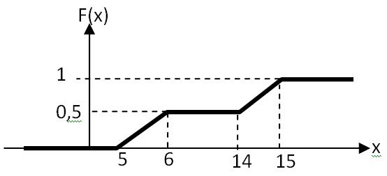

Какие способы используются для описания структуры системы?
1>аналитический
2>графический
3>структурный
4>алгоритмический
5>табличный
6>физический
7>математический
8>концептуальный
9>программный
Замещение одного исходного объекта другим объектом и проведение с ним экспериментов с целью получения информации об исходном объекте называется ...
1>моделированием
2>моделирование
3>Моделирование
4>Моделированием
Какие модели допускают количественное исследование свойств систем и процессов?
1>конструктивные
2>качественные
3>концептуальные
4>наглядные
5>изобразительные
6>содержательные
Преимуществом моделирования является то, что оно предоставляет возможность исследования объектов, прямой эксперимент с которыми ...
1>трудно выполним
2>экономически невыгоден
3>невозможен
4>даёт точные результаты
5>слишком прост
6>не требуется
7>позволяет получить точные результаты
8>возможен
9>выгоден экономически
10>легко выполним
Совокупность взаимосвязанных элементов, объединенных в одно целое для достижения некоторой цели, называется ...
1>системой
2>система
3>Системой
4>Система
Минимальный неделимый объект в системе, рассматриваемый как единое целое, называется ...
1>элементом
2>элемент
3>Элементом
4>Элемент
Как называется система с большим числом входящих в его состав элементов и связей между ними?
1>сложной
2>разветвлённой
3>многообразной
4>распределённой
5>случайной
6>детерминированной
7>стохастической
8>комплексом
Как называется совокупность взаимосвязанных систем?
1>комплекс
2>комплексом
3>Комплекс
4>Комплексом
С помощью перечня элементов (входящих в состав системы) и перечня связей между ними задается (...) системы?
1>структура
2>Структура
3>структурная организация
4>Структурная организация
Способы описания структуры системы.
1>графический
2>аналитический
3>алгоритмический
4>табличный
5>канонический
6>концептуальный
Как называется правило достижения поставленной цели, описывающее поведение системы и направленное на получение результатов, предписанных назначением системы?
1>функция
2>функция системы
3>функцией системы
4>функцией
Как называется способ описания функции системы в виде последовательностей шагов, которые должна выполнять система для достижения поставленной цели?
1>алгоритмический
2>алгоритмическим
3>Алгоритмический
4>Алгоритмическим
Как называется способ описания функции системы в виде математических зависимостей в терминах некоторого математического аппарата?
1>аналитический
2>аналитическим
3>Аналитический
4>Аналитическим
Процесс определения свойств, присущих системе называется...
1>анализ
2>синтез
3>алгоритмизация
4>параметризация
5>организация
6>эффективность
7>валидация
8>синхронизация
К характеристикам системы относятся величины, описывающие её…
1>стоимость
2>производительность
3>надежность
4>оперативность
5>нагрузку
6>функциональную организацию
7>структурную организацию
8>взаимосвязь элементов
9>режим функционирования
Способы описания функции системы.
1>аналитический
2>алгоритмический
3>графический
4>табличный
5>структурный
6>физический
7>концептуальный
8>канонический
Величины, описывающие первичные свойства системы и являющиеся исходными данными при решении задач анализа называются ...
1>параметры
2>характеристики
3>показатели
4>указатели
5>критерии
6>атрибуты
7>функции
8>аргументы
Какой метод моделирования является универсальным?
1>имитационный
2>динамический
3>аналитический
4>стохастический
5>численный
6>статический
7>вероятностный
8>структурный
9>детерминированиий
Способ достижения поставленной цели за счет выбора определенной структуры и функции системы называется (...) системы?
1>организация
2>эффективность
3>параметризация
4>алгоритмизация
5>интегративность
6>анализ
7>генерация
8>структурирование
9>функциональность
Как называется свойство системы, заключающееся в том, что она рассматривается как единое целое, состоящее из взаимодействующих элементов, возможно неоднородных, но одновременно совместимых?
1>целостность
2>целостностью
3>Целостность
4>Целостностью
Какие утверждения являтся неверными?
1>система есть простая совокупности элементов
2>расчленяя систему на отдельные части и изучая каждую из них в отдельности, можно познать все свойства системы в целом
3>система должна обладать свойством интеграции
4>система должна обладать интегральным свойством
5>расчленяя систему на отдельные части и изучая каждую из них в отдельности, нельзя познать все свойства системы в целом
6>система должна обладать свойством интегративности
7>организованность - фундаментальное свойство системы
Величины, описывающие вторичные свойства системы и определяемые в процессе решения задач анализа называется ...
1>характеристики
2>показатели
3>указатели
4>критерии
5>атрибуты
6>параметры
7>аргументы
8>функции
Какие фундаментальные свойства присущи системе?
1>интегративность
2>целостность
3>связность
4>организованность
5>простота
6>надежность
7>оперативность
8>эффективность
9>безопасность
К параметрам системы относятся величины, описывающие …
1>структуру системы
2>нагрузку
3>функциональную организацию системы
4>стоимость системы
5>надежность
6>производительность системы
7>энергопотребление системы
8>эффективность системы
Какие величины относятся к внутренним параметрам системы?
1>структурные
2>функциональные
3>нагрузочные
4>внешней среды
5>первичные
6>системные
7>временные
8>стоимостные
Какие величины относятся к внешним параметрам системы?
1>нагрузочные
2>внешней среды
3>структурные
4>функциональные
5>системные
6>вторичные
7>первичные
8>стоимостные
Какие характеристики технических систем относятся к глобальным?
1>производительности
2>временные
3>надёжности
4>стоимостные
5>структурные
6>функциональные
7>нагрузочные
8>системные
9>внешней среды
Какой метод позволяет выполнять исследование систем на моделях любой степени детализации?
1>имитационный
2>
3>
4>
5>
6>
Наличие качеств, присущих системе в целом, но не свойственных ни одному из ее элементов в отдельности называется ...
1>интегративностью
2>интегративность
3>Интегративностью
4>Интегративность
Мера одного свойства системы -это...?
1>показатель эффективности
2>параметр
3>характеристика
4>указатель эффективности
5>критерий эффективности
6>атрибут
7>показатель параметра
8>размерность
Степень соответствия системы своему назначению называется ...
1>эффективность
2>организация
3>параметризация
4>алгоритмизация
5>рандомизация
6>функциональность
7>точность
8>оптимальность
Степень соответствия системы своему назначению называется ...
1>эффективностью
2>эффективность
Процесс порождения функций и структур, удовлетворяющих требованиям, предъявляемым к эффективности системы называется ...
1>синтез
2>анализ
3>алгоритмизация
4>параметризация
5>организация
6>эффективность
7>оптимизация
8>рандомизация
Процесс порождения функций и структур, удовлетворяющих требованиям, предъявляемым к эффективности системы, называется ...
1>синтезом
2>синтез
Процесс определения свойств, присущих системе, называется ...
1>анализ
2>анализом
3>Анализ
4>Анализом
Мера эффективности системы, обобщающая все свойства системы в одной оценке, называется ...
1>критерий эффективности
2>атрибут
3>указатель эффективности
4>показатель эффективности
5>характеристика
6>параметр
7>размерность
8>качество
Если при увеличении эффективности значение критерия возрастает, то критерий называется ...
1>прямым
2>обратным
3>инверсным
4>возрастающим
5>максимальным
6>линейным
Как называется критерий эффективности, значение которого возрастает при увеличении эффективности системы?
1>прямой
2>прямым
3>Прямой
4>Прямым
Как называется критерий эффективности, значение которого уменьшается при увеличении эффективности системы?
1>инверсным
2>инверсный
3>Инверсный
4>Инверсным
Если при увеличении эффективности значение критерия уменьшается, то критерий называется ...
1>инверсным
2>прямым
3>обратным
4>убывающим
5>минимальным
6>нижним
Как называется система, которой соответствует максимальное значение прямого критерия эффективности?
1>оптимальная
2>эффективная
3>рациональная
4>наилучшая
5>наихудшая
6>неоптимальная
7>максимальная
Как называется система, которой соответствует минимальное значение инверсного критерия эффективности?
1>оптимальная
2>минимальная
3>рациональная
4>обратная
5>инверсная
6>неоптимальная
7>наихудшая
Как называется система, которой соответствует максимальное значение прямого критерия эффективности?
1>оптимальная
2>оптимальной
3>Оптимальной
4>Оптимальная
Как называется система, которой соответствует минимальное значение инверсного критерия эффективности?
1>оптимальная
2>оптимальной
3>Оптимальная
4>Оптимальной
Процесс, протекающий в системе - это ...
1>смена состояний системы во времени
2>совокупность состояний
3>переходы между состояниями
4>изменение системы
5>создание системы
6>синтез
7>анализ
Как называется причина, вызывающая переход процесса из состояния в состояние?
1>событие
2>событием
3>Событие
4>Событием
Как называются процессы, для которых характерен плавный переход из состояния в состояние?
1>с непрерывными состояниями
2>с дискретными состояниями
3>с детерминированными состояниями
4>со стохастическими состояниями
5>со случайными состояниями
6>с вероятностными состояниями
7>с фиксированными состояниями
8>с плавными состояниями
9>с аналоговыми состояниями
Как называются процессы, для которых характерен плавный переход из состояния в состояние?
1>непрерывными
2>дискретными
3>случайными
4>стохастическими
5>вероятностными
6>детерминированными
7>аналоговыми
8>цифровыми
Как называются процессы, для которых характерен скачкообразный переход из состояния в состояние?
1>с дискретными состояниями
2>с непрерывными состояниями
3>со скачкообразными состояниями
4>с цифровыми состояниями
5>с детерминированными состояниями
6>со случайными состояниями
7>со стохастическими состояниями
Как называются процессы, для которых характерен скачкообразный переход из состояния в состояние?
1>дискретные
2>детерминированные
3>случайные
4>непрерывные
5>вероятностные
6>стохастические
7>марковские
Как называется процесс, поведение которого может быть предсказано заранее?
1>детерминированный
2>детерминированным
3>Детерминированный
4>Детерминированным
Как называется процесс, поведение которого невозможно предсказать заранее?
1>случайный
2>вероятностный
3>стохастический
4>случайными
5>вероятностными
6>стохастическими
Как называется режим функционирования системы, при котором характеристики системы не зависят от времени?
1>установившийся
2>неустановившийся
3>переходной
4>нестационарный
5>режим перегрузок
6>режим недогрузок
7>случайный
8>детерминированный
Как называется режим функционирования системы, при котором характеристики системы зависят от времени?
1>неустановившийся
2>установившийся
3>случайный
4>режим перегрузок
5>детерминированный
6>стационарный
7>стохастический
8>временной
Чем может быть обусловлен неустановившийся режим функционирования системы?
1>началом работы системы
2>нестационарностью параметров системы
3>перегрузкой системы
4>случайностью параметров системы
5>случайностью характеристик системы
6>детерминированностью параметров системы
С чем связан переходной режим функционирования системы?
1>с началом работы системы
2>со случайным характером функционирования системы
3>со случайным характером параметров системы
4>со случайным характером характеристик системы
5>с перегрузкой системы
Как называется режим функционирования, при котором система не справляется с возложенной на нее нагрузкой?
1>режим перегрузок
2>стационарный режим
3>установившийся режим
4>случайный режим
5>стохастический режим
6>детерминированный режим
7>режим недогрузок
Какие требования предъявляются к модели?
1>простота модели
2>адекватность исследуемой системе
3>большая детализация модели
4>низкая стоимость модели
5>эффективность модели
6>стационарность модели
Соответствие модели оригиналу, характеризуемое степенью близости свойств модели свойствам исследуемой системы, называется ...
1>адекватностью
2>адекватность
Соответствие модели оригиналу, характеризуемое степенью близости свойств модели свойствам исследуемой системы, называется ...
1>адекватность
2>простота
3>сложность
4>детализация
5>эффективность
6>параметризация
От чего зависит адекватность математических моделей?
1>уровня детализации модели
2>степени полноты и достоверности сведений об исследуемой системе
3>степени случайности исследуемой системы
4>уровня сложности исследуемой системы
5>количества случайных параметров исследуемой системы
Моделирование может проводиться в условиях неопределенности, обусловленных:
1>неточностью сведений о параметрах
2>отсутствием сведений о значениях некоторых параметров
3>нестационарностью параметров
4>детерминированностью параметров
5>неточностью сведений о характеристиках
6>отсутствием сведений о значениях некоторых характеристик
7>отсутствием критерия эффективности
Что является синонимом понятия "вероятностная модель"?
1>стохастическая модель
2>марковская модель
3>детерминированная модель
4>стационарная модель
5>нестационарная модель
6>дискретная модель
7>непрерывная модель
8>концептуальная модель
Что является антонимом понятия "детерминированная модель"?
1>стохастическая модель
2>переходная модель
3>концептуальная модель
4>математическая модель
5>физическая модель
6>дискретная модель
7>непрерывная модель
8>стационарная модель
Что является синонимом понятия "содержательная модель"?
1>концептуальная модель
2>стохастическая модель
3>вероятностная модель
4>детерминированная модель
5>дискретная модель
6>непрерывная модель
7>стационарная модель
8>математическая модель
Что является синонимом понятия "концептуальная модель"?
1>содержательная модель
2>дискретная модель
3>вероятностная модель
4>стационарная модель
5>дискретная модель
6>непрерывная модель
7>математическая модель
8>физическая модель
Что является синонимом понятия "математическая модель"?
1>абстрактная модель
2>дискретная модель
3>стационарная модель
4>непрерывная модель
5>стохастическая модель
6>физическая модель
7>нестационарная модель
8>концептуальная модель
Какие модели являются абстрактными?
1>математические
2>физические
3>программные
4>концептуальные
5>компьютерные
6>детерминированные
7>дискретные
8>непрерывные
Что является синонимом понятия "материальная модель"?
1>физическая модель
2>концептуальная модель
3>математическая модель
4>стохастическая модель
5>содержательная модель
6>абстрактная модель
Как называется модель, представляющая собой словесное описание только наиболее существенных особенностей структурно-функциональной организации исследуемой системы?
1>концептуальная
2>концептуальной
3>содержательная
4>содержательной
Как называется модель, эквивалентная или подобная оригиналу или процесс функционирования которой такой же, как у оригинала и имеет ту же или другую физическую природу?
1>физическая
2>физической
3>материальная
4>материальной
Установите соответствие моделей:
1>математическая ::: абстрактная
2>физическая ::: материальная
3>концептуальная ::: содержательная
4>программная ::: компьютерная
Установите соответствие моделей:
1>абстрактная ::: математическая
2>компьютерная ::: программная
3>содержательная ::: концептуальная
4>материальная ::: физическая
Установление соответствия между значениями системных и модельных параметров и характеристик выполняется на этапе ...
1>параметризации
2>параметризация
Укажите последовательность решения задач в процессе исследования сложных систем:
1>Разработка модели ::: 1
2>Анализ характеристик системы ::: 2
3>Синтез системы ::: 3
4>Детальный анализ синтезированной системы ::: 4
Какие методы математического моделирования получили наиболее широкое применение при исследовании технических систем с дискретным характером функционирования?
1>аналитические
2>численные
3>имитационные
4>статические
5>динамические
6>физические
7>корреляционные
8>адаптивные
Основное достоинство имитационного моделирования?
1>универсальность
2>небольшие затраты
3>малое время моделирования
4>простота моделей
5>возможность решения задач оптимизации
6>малая ресурсоемкость
Недостатки имитационного моделирования?
1>трудоемкость процесса моделирования
2>частный характер результатов
3>большие погрешности результатов
4>ограниченное применение
5>отсутствие универсальности
Вам достался счастливый вопрос :)
Чтобы набрать по нему 2 балла, введите без кавычек фразу: "Моделирование - это круто!"
1>Моделирование - это круто!
Пусть F(x) - функция распределения количества детей в семье. Известно, что F(2) = 0.6.
Что это означает?
1>С вероятностью 0.6 в семье менее двух детей.
2>Вероятность того, что в семье более одного ребенка, равна 0.4
3>Вероятность того, что в семье нет детей, равна 0.4
4>Вероятность того, что в семье один или два ребенка, равна 0.6
5>Вероятность того, что в семье два ребенка равна 0.6
6>С вероятностью 0.4 в семье менее двух детей.
Как называются случайные величины, принимающие только отделенные друг от друга значения, которые можно пронумеровать?
1>дискретные
2>непрерывные
3>аналоговые
4>детерминированные
5>конечные
6>равновероятные
7>нумерованные
Пусть xi - одно из n значений, которые может принимать дискретная случайная величина X, а pi - вероятность того, что Х = xi (при i = 1,2,..n). Укажите, что рассчитвается с помощью формулы:
 1>Математическое ожидание X
2>Первый начальный момент X
3>Первый центральный момент X
4>Второй начальный момент X
5>Второй центральный момент X
6>Дисперсия X
1>Математическое ожидание X
2>Первый начальный момент X
3>Первый центральный момент X
4>Второй начальный момент X
5>Второй центральный момент X
6>Дисперсия X
Пусть xi - одно из n значений, которые может принимать дискретная случайная величина X, а pi - вероятность того, что Х = xi, и M[X] - мат.ожидание Х (при i = 1,2,..n). Укажите, что рассчитвается с помощью формулы:
 1>Второй центральный момент
2>Дисперсия
3>Первый центральный момент
4>Второй начальный момент
5>Математическое ожидание
6>Первый начальный момент
7>Среднеквадратическое отклонение
8>Коэффициент вариации
1>Второй центральный момент
2>Дисперсия
3>Первый центральный момент
4>Второй начальный момент
5>Математическое ожидание
6>Первый начальный момент
7>Среднеквадратическое отклонение
8>Коэффициент вариации
Как называются случайные величины, которые могут принимать любое значение из некоторого промежутка?
1>непрерывные
2>дискретные
3>детерминированные
4>равномерные
5>регулярные
6>промежуточные
7>стандартные
8>переменные
9>атрибуты
Какие величины являются непрерывными?
1>время ожидания в очереди
2>температура воздуха
3>напряжение в электросети
4>длина очереди покупателей в магазине
5>количество студентов в группе
6>количество страниц в книге
Какие величины являются дискретными?
1>число зрителей на стадионе
2>количество переданных за единицу времени сообщений в компьютерной сети
3>температура в доменной печи
4>расстояние между движущимися по улице автомобилями
5>вес человека
6>рост человека
Всякое соотношение, устанавливающее связь между возможными значениями случайной величины и соответствующими им вероятностями, называется ...
1>закон распределения
2>математическое ожидание
3>дисперсия
4>среднеквадратическое отклонение
5>начальный момент
6>центральный момент
7>плотность распределения
8>коэффициент корреляции
9>коэффициент вариации
Первый начальный момент случайной величины называется ...
1>математическим ожиданием
2>дисперсией
3>среднеквадратическим отклонением
4>коэффициеном вариации
5>ковариацией
6>плотностью распределения
7>коэффициеном корреляции
Второй центральный момент случайной величины называется ...
1>дисперсией
2>математическим ожиданием
3>плотностью распределения
4>среднеквадратическим отклонением
5>коэффициентом вариации
6>функцией распределения
7>коэффициентом корреляции
8>ковариацией
Что характеризует математическое ожидание случайной величины?
1>среднее значение случайной величины
2>максимальное значение случайной величины
3>миниимальное значение случайной величины
4>наиболее вероятное значение случайной величины
5>разброс случайной величины относительно среднего значения
6>разброс случайной величины относительно начала координат
Что характеризует дисперсия случайной величины?
1>разброс случайной величины относительно математического ожидания
2>разброс случайной величины относительно начала координат
3>разницу между максимальным и минимальным значениями случайной величины
4>среднее значение случайной величины
5>максимальное значение случайной величины
6>разницу между максимальным и средним значениями случайной величины
Что характеризует среднеквадратическое отклонение случайной величины?
1>разброс случайной величины относительно математического ожидания
2>разброс случайной величины относительно начала координат
3>среднее значение случайной величины
4>разницу между максимальным и средним значениями случайной величины
5>разницу между максимальным и минимальным значениями случайной величины
6>максимальное значение случайной величины
Что характеризует коэффициент вариации случайной величины?
1>разброс случайной величины относительно математического ожидания
2>среднее значение случайной величины
3>максимальное значение случайной величины
4>разброс случайной величины относительно начала координат
5>разницу между максимальным и средним значениями случайной величины
6>разницу между максимальным и минимальным значениями случайной величины
Какие из перечисленных законов распределений являются дискретными?
1>Пуассона
2>геометрический
3>равномерный
4>экспоненциальный
5>гиперэкспоненциальный
6>гипоэкспоненциальный
7>Эрланга
Какие из перечисленных законов распределений являются непрерывными?
1>экспоненциальный
2>равномерный
3>гипоэкспоненциальный
4>гиперэкспоненциальный
5>Эрланга
6>геометрический
7>Пуассона
Пусть F(x) - функция распределения, а f(x) - плотность распределения непрерывной случайной величины Х. Чему равна вероятность того, что X попадет в интервал [a; b] ?
1>
2>
3> 4>
4> 5>
5> 6>
6>
Пусть F(x) - функция распределения, а f(x) - плотность распределения непрерывной случайной величины Х. Пусть также a < b. Укажите, что можно рассчитать с помощью данной формулы:
 1>P(a < x < b).
2>Вероятность того, что величина Х попадет в интервал [a; b] .
3>P(x < a < b).
4>Дисперсию Х.
5>F(b) + F(a).
6>Математическое ожидание X.
1>P(a < x < b).
2>Вероятность того, что величина Х попадет в интервал [a; b] .
3>P(x < a < b).
4>Дисперсию Х.
5>F(b) + F(a).
6>Математическое ожидание X.
Функция распределения случайной величины …
1>неубывающая
2>невозрастающая
3>может иметь любой характер
4>принимает любые значения в области действительных чисел
5>принимает значения в интервале от 0 до бесконечности
6>определяется как производная от плотности распределения
Плотность распределения случайной величины ...
1>может быть как возрастающей функцией, так и убывающей
2>может принимать любые положительные значения
3>определяется как производная от функции распределения
4>невозрастающая
5>принимает значения в интервале [0, 1]
6>неубывающая
Функция распределения случайной величины …
1>принимает значения в интервале (0, 1)
2>принимает любые положительные значения
3>невозрастающая
4>может иметь любой характер
5>может принимать отрицательные значения
6>принимает значения от 0 до математического ожидания
Укажите формулу преобразования плотности распределения f(x) в функцию распределения F(x) для случайных величин, определённых в области действительных чисел.
1> 2>
2> 3>
3> 4>
4> 5>
5> 6>
6>
Укажите формулу преобразования плотности распределения f(x) в функцию распределения F(x) для случайных величин, определённых в области положительных чисел.
1>
2>
3>
4>
5>
Какими из представленных ниже в виде формул свойствами обладает функция распределения F(x) случайной величины X?
 1>c
2>d
3>f
4>a
5>b
6>e
7>g
8>h
9>i
1>c
2>d
3>f
4>a
5>b
6>e
7>g
8>h
9>i
Какими свойствами обладает функция распределения F(x) случайной величины X?
1> 2>
2> 3>
3> 4>
4> 5>
5> 6>
6> 7>
7> 8>
8> 9>
9>
Какими свойствами не обладает функция распределения F(x) случайной величины X?
1>
2>
3>
4>
5>
6>
7>
8>
9>
Пусть случайная величина Х измеряется в метрах. Какие из указанных величин являются безразмерными?
1>Коэффициент вариации случайной величины Х.
2>Вероятность того, что случайная величина Х примет значение 5.
3>Значение функции распределния случайной величины Х в точке 0.
4>Математическое ожидание случайной величины Х.
5>Среднеквадратическое отклонение случайной величины Х.
6>Дисперсия случайной величины Х.
7>Второй начальный момент случайной величины Х.
8>Значение функции плотности распределения случайной величины Х в точке -1.
Какую размерность имеет функция распределения случайной величины?
1>безразмерная
2>размерность случайной величины
3>обратная размерности случайной величины
4>квадрат размерности случайной величины
5>корень квадратный из размерности случайной величины
6>размерность времени
7>размерность, обратная размерности времени
Какую размерность имеет плотность распределения случайной величины?
1>обратная размерности случайной величины
2>размерность случайной величины
3>безразмерная
4>квадрат размерности случайной величины
5>совпадает с размерностью функции рапределения
6>квадратный корень размерности случайной величины
7>размерность времени
Какую размерность имеет плотность распределения случайной величины, принимающей значения от 1 до 100 секунд?
1>1/с
2>с
3>с^2
4>безразмерная
5>c*c
6>с^3
Какую размерность имеет функция распределения случайной величины, принимающей значения от 0 до 10 метров?
1>безразмерная
2>м
3>1/м
4>м*м
5>м/с
6>м^2
7>м^3
Какую размерность имеет плотность распределения времени обслуживания покупателей в магазине, измеряемого в секундах?
1>1/с
2>с
3>с*с
4>безразмерная
5>с^2
6>с^3
Какую размерность имеет функция распределения времени обслуживания покупателей в магазине, измеряемого в секундах?
1>безразмерная
2>с
3>с*с
4>1/с
5>2/с
6>с^2
7>с^3
Какую размерность имеет математическое ожидание времени обслуживания покупателей в магазине, измеряемого в секундах?
1>с
2>безразмерная величина
3>с*с
4>1/с
5>покупателей в секунду
6>с^2
7>с^3
Какую размерность имеет дисперсия времени обслуживания покупателей в магазине, измеряемого в секундах?
1>с*с
2>безразмерная величина
3>с
4>1/с
5>с^3
6>с^(1/2)
Какую размерность имеет дисперсия случайной величины, измеряемой в секундах?
1>с^2
2>с^3
3>с
4>1/с
5>безразмерная
6>2/с
Какую размерность имеет среднеквадратическое отклонение времени передачи данных в компьютерной сети, измеряемого в миллисекундах?
1>мс
2>1/мс
3>мс*мс
4>безразмерная величина
5>мс*с
6>мс^2
7>мс^3
Какую размерность имеет математическое ожидание?
1>размерность случайной величины
2>безразмерная величина
3>обратная размерности случайной величины
4>квадрат размерности случайной величины
5>квадратный корень размерности случайной величины
6>размерность времени
7>обратная размерности времени
Какую размерность имеет дисперсия?
1>квадрат размерности случайной величины
2>размерность случайной величины
3>безразмерная
4>квадратный корень размерности случайной величины
5>размерность времени
6>обратная размерности случайной величины
Какую размерность имеет среднеквадратическое отклонение?
1>размерность случйной величины
2>квадрат размерности случайной величины
3>корень квадратный размерности случайной величины
4>безразмерная величина
5>обратная размерности случайной величины
6>размерность времени
Какую размерность имеет коэффициент вариации?
1>безразмерная величина
2>размерность случайной величины
3>квадрат размерности случайной величины
4>корень квадратный размерности случайной величины
5>обратная размерности случайной величины
6>размерность времени
Чему равна дисперсия детерминированной величины X=0,2?
1>0
Чему равен второй центральный момент детерминированной величины X=0,2?
1>0
Чему равна дисперсия детерминированной величины X=2?
1>0
Чему равен второй центральный момент детерминированной величины X=2?
1>0
Чему равна дисперсия детерминированной величины X=100?
1>0
Чему равна дисперсия детерминированной величины X=-10?
1>0
Чему равен коэффициент вариации детерминированной величины X=-10?
1>0
Чему равно среднеквадратическое отклонение детерминированной величины X=-25?
1>0
Чему равен второй начальный момент детерминированной величины X=-10?
1>100
Чему равен второй начальный момент детерминированной величины X=5?
1>25
Чему равен первый начальный момент детерминированной величины X=5?
1>5
Чему равен первый начальный момент детерминированной величины X=16?
1>16
Чему равно математическое ожидание равномерно распределённой в интервале (0; 1) случайной величины?
1>0.5
2>0,5
Чему равно математическое ожидание равномерно распределённой в интервале (10; 20) случайной величины?
1>15
Чему равно математическое ожидание равномерно распределённой в интервале (-20; +20) случайной величины?
1>0
Чему равно математическое ожидание равномерно распределённой в интервале (-20; +30) случайной величины?
1>5
2>+5
Чему равно математическое ожидание равномерно распределённой в интервале (-20; +10) случайной величины?
1>-5
Чему равно математическое ожидание равномерно распределённой в интервале (-100; -10) случайной величины?
1>-55
Чему равно математическое ожидание равномерно распределённой в интервале (-10; -2) случайной величины?
1>-6
Чему равно математическое ожидание детерминированной величины X>0, если её второй начальный момент равен 100?
1>10
Чему равно математическое ожидание детерминированной величины X<0, если её второй начальный момент равен 25?
1>-5
Чему равно математическое ожидание детерминированной величины X>0, если её второй начальный момент равен 25?
1>5
Чему равно математическое ожидание детерминированной величины X<0, если её второй начальный момент равен 4?
1>-2
Чему равно математическое ожидание детерминированной величины X>0, если её второй начальный момент равен 10000?
1>100
Чему равно математическое ожидание детерминированной величины X<0, если её второй начальный момент равен 10000?
1>-100
2>- 100
3>минус 100
Чему равен второй начальный момент детерминированной величины X=0?
1>0
Чему равен второй начальный момент детерминированной величины X=6?
1>36
Чему равен второй начальный момент детерминированной величины X=-6?
1>36
Чему равен второй начальный момент детерминированной величины X=11?
1>121
Чему равен второй начальный момент детерминированной величины X=-12?
1>144
Чему равно математическое ожидание детерминированной величины X>0, если её второй начальный момент равен 4?
1>2
Чему равен второй начальный момент детерминированной величины X=-7?
1>49
Чему равен третий начальный момент детерминированной величины X=-2?
1>-8
Чему равен третий начальный момент детерминированной величины X=-3?
1>-27
Чему равен третий начальный момент детерминированной величины X=1?
1>1
Чему равно максимально возможное значение равномерно распределённой случайной величины, определённой в области положительных значений и имеющей математическое ожидание равное 20?
1>40
Чему равно максимально возможное значение равномерно распределённой случайной величины, определённой в области положительных значений и имеющей математическое ожидание равное 15?
1>30
Чему равно максимально возможное значение равномерно распределённой случайной величины, определённой в области положительных значений и имеющей математическое ожидание равное 200?
1>400
Чему равно минимально возможное значение равномерно распределённой случайной величины, определённой в области отрицательных значений и имеющей математическое ожидание равное -20?
1>-40
Чему равно минимально возможное значение равномерно распределённой случайной величины, определённой в области отрицательных значений и имеющей математическое ожидание равное -200?
1>-400
Чему равно минимально возможное значение равномерно распределённой случайной величины, определённой в области отрицательных значений и имеющей математическое ожидание равное -0,5?
1>-1
Чему равно минимально возможное значение равномерно распределённой случайной величины, имеющей максимально возможное значение и математическое ожидание -10 и -20 соответственно?
1>-30
Чему равно минимально возможное значение равномерно распределённой случайной величины, имеющей максимально возможное значение и математическое ожидание -1 и -11 соответственно?
1>-21
Чему равно минимально возможное значение равномерно распределённой случайной величины, имеющей максимально возможное значение и математическое ожидание -2 и -5 соответственно?
1>-8
Чему равно минимально возможное значение равномерно распределённой случайной величины, имеющей максимально возможное значение и математическое ожидание -100 и -200 соответственно?
1>-300
Чему равно минимально возможное значение равномерно распределённой случайной величины, имеющей максимально возможное значение и математическое ожидание 20 и 0 соответственно?
1>-20
Чему равно минимально возможное значение равномерно распределённой случайной величины, имеющей максимально возможное значение и математическое ожидание 100 и 40 соответственно?
1>-20
Чему равно минимально возможное значение равномерно распределённой случайной величины, имеющей максимально возможное значение и математическое ожидание 80 и -20 соответственно?
1>-120
Чему равно минимально возможное значение равномерно распределённой случайной величины, имеющей максимально возможное значение и математическое ожидание 10 и -20 соответственно?
1>-50
Чему равно минимально возможное значение равномерно распределённой случайной величины, имеющей максимально возможное значение и математическое ожидание 50 и -25 соответственно?
1>-100
Чему равно максимально возможное значение равномерно распределённой случайной величины, имеющей минимально возможное значение и математическое ожидание -10 и 20 соответственно?
1>50
Чему равно максимально возможное значение равномерно распределённой случайной величины, имеющей минимально возможное значение и математическое ожидание -20 и 10 соответственно?
1>40
Чему равно максимально возможное значение равномерно распределённой случайной величины, имеющей минимально возможное значение и математическое ожидание -100 и -20 соответственно?
1>60
Чему равно максимально возможное значение равномерно распределённой случайной величины, имеющей минимально возможное значение и математическое ожидание -55 и -5 соответственно?
1>45
Чему равно максимально возможное значение равномерно распределённой случайной величины, имеющей минимально возможное значение и математическое ожидание -25 и 25 соответственно?
1>75
2>+75
Чему равно математическое ожидание экспоненциально распределенной случайной величины, дисперсия которой равна 25?
1>5
Чему равно математическое ожидание экспоненциально распределенной случайной величины, дисперсия которой равна 100?
1>10
Чему равно математическое ожидание экспоненциально распределенной случайной величины, дисперсия которой равна 64?
1>8
Чему равно математическое ожидание экспоненциально распределенной случайной величины, дисперсия которой равна 16?
1>4
Чему равно математическое ожидание экспоненциально распределенной случайной величины, среднеквадратическое отклонение которой равно 16?
1>16
Чему равно математическое ожидание экспоненциально распределенной случайной величины, среднеквадратическое отклонение которой равно 6?
1>6
Чему равно математическое ожидание экспоненциально распределенной случайной величины, среднеквадратическое отклонение которой равно 1?
1>1
Чему равно математическое ожидание экспоненциально распределенной случайной величины, среднеквадратическое отклонение которой равно 100?
1>100
Чему равно математическое ожидание экспоненциально распределенной случайной величины, среднеквадратическое отклонение которой равно 10000?
1>10000
Чему равна дисперсия экспоненциально распределенной случайной величины, математическое ожидание которой равно 16?
1>256
Чему равна дисперсия экспоненциально распределенной случайной величины, математическое ожидание которой равно 1?
1>1
Чему равна дисперсия экспоненциально распределенной случайной величины, математическое ожидание которой равно 6?
1>36
Чему равна дисперсия экспоненциально распределенной случайной величины, математическое ожидание которой равно 100?
1>10000
Чему равна дисперсия экспоненциально распределенной случайной величины, математическое ожидание которой равно 4?
1>16
Чему равно среднеквадратическое отклонение экспоненциально распределенной случайной величины, математическое ожидание которой равно 100?
1>100
Чему равно среднеквадратическое отклонение экспоненциально распределенной случайной величины, математическое ожидание которой равно 16?
1>16
Чему равно среднеквадратическое отклонение экспоненциально распределенной случайной величины, математическое ожидание которой равно 20?
1>20
Чему равно среднеквадратическое отклонение экспоненциально распределенной случайной величины, математическое ожидание которой равно 121?
1>121
Чему равно среднеквадратическое отклонение экспоненциально распределенной случайной величины, математическое ожидание которой равно 10000?
1>10000
Чему равен второй начальный момент экспоненциально распределенной случайной величины, математическое ожидание которой равно 10?
1>200
Чему равен второй начальный момент экспоненциально распределенной случайной величины, математическое ожидание которой равно 1?
1>2
Чему равен второй начальный момент экспоненциально распределенной случайной величины, математическое ожидание которой равно 6?
1>72
Чему равен второй начальный момент экспоненциально распределенной случайной величины, математическое ожидание которой равно 5?
1>50
Чему равен второй начальный момент экспоненциально распределенной случайной величины, математическое ожидание которой равно 12?
1>288
Чему равен второй начальный момент экспоненциально распределенной случайной величины, дисперсия которой равна 10?
1>20
Чему равен второй начальный момент экспоненциально распределенной случайной величины, дисперсия которой равна 100?
1>200
Чему равен второй начальный момент экспоненциально распределенной случайной величины, дисперсия которой равна 6?
1>12
Чему равен второй начальный момент экспоненциально распределенной случайной величины, дисперсия которой равна 50?
1>100
Чему равен второй начальный момент экспоненциально распределенной случайной величины, дисперсия которой равна 36?
1>72
Чему равен второй начальный момент экспоненциально распределенной случайной величины, среднеквадратическое отклонение которой равно 6?
1>72
Чему равен второй начальный момент экспоненциально распределенной случайной величины, среднеквадратическое отклонение которой равно 10?
1>200
Чему равен второй начальный момент экспоненциально распределенной случайной величины, среднеквадратическое отклонение которой равно 1?
1>2
Чему равен второй начальный момент экспоненциально распределенной случайной величины, среднеквадратическое отклонение которой равно 20?
1>800
Чему равен второй начальный момент экспоненциально распределенной случайной величины, среднеквадратическое отклонение которой равно 11?
1>242
В каких интервалах может изменяться равномерно распределённая случайная величина с математическим ожиданием равным 50?
1>0;100
2>-50; 150
3>-25; 125
4>25; 100
5>-25; 100
6>-50; 100
В каких интервалах может изменяться равномерно распределённая случайная величина с математическим ожиданием равным 10?
1>-20; 40
2>-10; 30
3>-20; 30
4>-20; 50
5>-10; 10
6>-10;40
В каких интервалах может изменяться равномерно распределённая случайная величина с математическим ожиданием равным -15?
1>-50; 20
2>-100; 70
3>-20; -10
4>-25; -5
5>-50; 65
6>-25; -10
7>-100; -85
8>-20; -5
В каких интервалах может изменяться равномерно распределённая случайная величина с математическим ожиданием равным -1?
1>-2; 0
2>-6; 4
3>-24; 22
4>-24; 26
5>-6;8
6>-1; 0
7>-2; 3
Установите соответствие для равномерно распределённой случайной величины: [математическое ожидание] -( интервал изменения)
1>[10] ::: (0; 20)
2>[-10] ::: (-25; 5)
3>[-5] ::: (-75; 65)
4>[1] ::: (-8; 10)
5>[-1] ::: (-8; 6)
Установите соответствие для равномерно распределённой случайной величины: [математическое ожидание] -( интервал изменения)
1>[0] ::: (-5; 5)
2>[2] ::: (-4; 8)
3>[-2] ::: (-5; 1)
4>[1] ::: (-3; 5)
5>[-1] ::: (-3; 1)
Установите соответствие для равномерно распределённой случайной величины: [математическое ожидание] -( интервал изменения)
1>[-12] ::: (-50; 26)
2>[-11] ::: (-50; 28)
3>[-10] ::: (-46; 26)
4>[-13] ::: (-50; 24)
5>[-14] ::: (-46; 18)
Установите соответствие для равномерно распределённой случайной величины: (интервал изменения) - математическое ожидание
1>(12; 24) ::: 18
2>(-12; 24) ::: 6
3>(-24; 12) ::: -6
4>(-24; 20) ::: -2
5>(-24; 0) ::: -12
Установите соответствие для равномерно распределённой случайной величины: (интервал изменения) - математическое ожидание
1>(-32; 4) ::: -14
2>(-30; 4) ::: -13
3>(-32; 8) ::: -12
4>(-32; 0) ::: -16
5>(-34; 0) ::: -17
Установите соответствие для равномерно распределённой случайной величины: (интервал изменения) - математическое ожидание
1>(-45; 5) ::: -20
2>(-95; 51) ::: -22
3>(-25; 1) ::: -12
4>(-95; 63) ::: -16
5>(-90; 54) ::: -18
Чему равно максимальное значение плотности распределения равномерно распределённой в интервале (0; 10) случайной величины?
1>0,1
2>0.1
Чему равно максимальное значение плотности распределения равномерно распределённой в интервале (0; 1) случайной величины?
1>1
Чему равно максимальное значение плотности распределения равномерно распределённой в интервале (-0,5; 0,5) случайной величины?
1>1
Чему равно максимальное значение плотности распределения равномерно распределённой в интервале (-5; 5) случайной величины?
1>0,1
2>0.1
Чему равно максимальное значение плотности распределения равномерно распределённой в интервале (-5; -4) случайной величины?
1>1
Чему равно максимальное значение плотности распределения равномерно распределённой в интервале (-10; 10) случайной величины?
1>0,05
2>0.05
Чему равно максимальное значение плотности распределения равномерно распределённой в интервале (-1; 1) случайной величины?
1>0,5
2>0.5
Чему равно максимальное значение плотности распределения равномерно распределённой в интервале (3; 3,5) случайной величины?
1>2
Чему равно максимальное значение плотности распределения равномерно распределённой в интервале (-7,5; -7) случайной величины?
1>2
Чему равно максимальное значение плотности распределения равномерно распределённой в интервале (-7; -5) случайной величины?
1>0,5
2>0.5
Чему равно максимальное значение плотности распределения равномерно распределённой в интервале (-0,55; -0,5) случайной величины?
1>20
Чему равно максимальное значение плотности распределения равномерно распределённой в интервале (0,2; 0,3) случайной величины?
1>10
Чему равно максимальное значение плотности распределения равномерно распределённой в интервале (0,6; 0,8) случайной величины?
1>5
Чему равно минимальное значение плотности распределения равномерно распределённой в интервале (0,6; 0,8) случайной величины?
1>0
Чему равно минимальное значение плотности распределения равномерно распределённой в интервале (0,2; 0,3) случайной величины?
1>0
Чему равно значение функции распределения в точке х=0 случайной величины Х, равномерно распределённой в интервале (-6; 6)?
1>0,5
2>0.5
Чему равно значение функции распределения в точке х=0 случайной величины Х, равномерно распределённой в интервале (-1; 9)?
1>0.1
2>0,1
Чему равно значение функции распределения в точке х=0 случайной величины Х, равномерно распределённой в интервале (-9; 1)?
1>0,9
2>0.9
Чему равно значение функции распределения в точке х=0 случайной величины Х, равномерно распределённой в интервале (-3; 2)?
1>0.6
2>0,6
Чему равно значение функции распределения в точке х=0 случайной величины Х, равномерно распределённой в интервале (-2; 3)?
1>0,4
2>0.4
Чему равно значение функции распределения в точке х=0 случайной величины Х, равномерно распределённой в интервале (-0,3; 0,7)?
1>0,3
2>0.3
Чему равно значение функции распределения в точке х=-5 случайной величины Х, равномерно распределённой в интервале (-5; 5)?
1>0
Чему равно значение функции распределения в точке х=5 случайной величины Х, равномерно распределённой в интервале (-5; 5)?
1>1
Чему равно значение функции распределения в точке х=-15 случайной величины Х, равномерно распределённой в интервале (-10; 15)?
1>0
Чему равно значение функции распределения в точке х=15 случайной величины Х, равномерно распределённой в интервале (-15; 10)?
1>1
Чему равно значение функции распределения в точке х=11 случайной величины Х, равномерно распределённой в интервале (-15; 10)?
1>1
Чему равно значение функции распределения в точке х=-30 случайной величины Х, равномерно распределённой в интервале (-25; 10)?
1>0
Чему равно значение функции распределения в точке х=0 случайной величины Х, равномерно распределённой в интервале (5; 10)?
1>0
Чему равно значение функции распределения в точке х=-4 случайной величины Х, равномерно распределённой в интервале (5; 10)?
1>0
Чему равно значение функции распределения в точке х=0 случайной величины Х, равномерно распределённой в интервале (-50; -10)?
1>1
Чему равно значение функции распределения в точке х=100 случайной величины Х, равномерно распределённой в интервале (25; 125)?
1>0,75
2>0.75
Чему равно значение функции распределения в точке х=-45 случайной величины Х, равномерно распределённой в интервале (-100; 0)?
1>0,55
2>0.55
Чему равна вероятность того, что случайная величина Х, равномерно распределённая в интервале (5; 10), примет значение х< 5?
1>0
Чему равна вероятность того, что случайная величина Х, равномерно распределённая в интервале (5; 10), примет значение х<20?
1>1
Чему равна вероятность того, что случайная величина Х, равномерно распределённая в интервале (0; 10), примет значение х< 5?
1>0,5
2>0.5
Чему равна вероятность того, что случайная величина Х, равномерно распределённая в интервале (5; 10), примет значение х<10?
1>1
Чему равна вероятность того, что случайная величина Х, равномерно распределённая в интервале (-5; 0), примет значение х<-2?
1>0,6
2>0.6
Чему равна вероятность того, что случайная величина Х, равномерно распределённая в интервале (-5; 0), примет значение х<-3?
1>0,4
2>0.4
Чему равна вероятность того, что случайная величина Х, равномерно распределённая в интервале (-15; -10), примет значение х<-20?
1>0
Чему равна вероятность того, что случайная величина Х, равномерно распределённая в интервале (-15; -10), примет значение х<-12?
1>0,6
2>0.6
Чему равна вероятность того, что случайная величина Х, равномерно распределённая в интервале (-15; -5), примет значение х<-2?
1>1
Чему равна вероятность того, что случайная величина Х, равномерно распределённая в интервале (-15; -5), примет значение х<-6?
1>0.9
2>0,9
Чему равен коэффициент вариации экспоненциального распределения?
1>1
Чему равен коэффициент вариации детерминированной величины?
1>0
Какие значения может принимать коэффициент вариации экспоненциального распределения?
1>1
2>0
3>от 0 до 1
4>больше 1
5>больше 2
6>любые
7>любые положительные
Какие значения может принимать коэффициент вариации детерминированной величины?
1>0
2>1
3>между 0 и 1
4>больше 1
5>меньше 0
6>любые
7>любые положительные
Какие значения может принимать коэффициент вариации гипоэкспоненциального распределения?
1>от 0 до 1
2>0
3>1
4>больше 1
5>любые
6>любые положительные
7>не более 2
Какие значения может принимать коэффициент вариации гиперэкспоненциального распределения?
1>больше 1
2>меньше 1
3>от 0 до 1
4>1
5>0
6>любые положительные
7>любые
Какие значения может принимать коэффициент вариации распределения Эрланга?
1>от 0 до 1
2>больше 1
3>1
4>0
5>любые
6>любые положительные
Какие значения может принимать коэффициент вариации нормированного распределения Эрланга?
1>от 0 до 1
2>больше 1
3>0
4>1
5>больше 2
6>любые положительные
7>любые
Какие значения может принимать коэффициент вариации гиперэрланговского распределения?
1>любые положительные
2>любые
3>1
4>0
5>больше 1
6>от 0 до 1
7>больше 2
Чему равен коэффициент вариации распределения Эрланга 4-го порядка?
1>0.5
2>0,5
Чему равен коэффициент вариации нормированного распределения Эрланга 4-го порядка?
1>0,5
2>0,707
3>0,577
4>1
5>0
6>0,25
7>2
8>4
Чему равен коэффициент вариации распределения Эрланга 16-го порядка?
1>0.25
2>0,25
Чему равен коэффициент вариации нормированного распределения Эрланга 16-го порядка?
1>0,25
2>4
3>1
4>0
5>16
6>0,1
7>0,707
8>0,577
Чему равен коэффициент вариации распределения Эрланга 25-го порядка?
1>0,2
2>0.2
Чему равен коэффициент вариации нормированного распределения Эрланга 25-го порядка?
1>0,2
2>0,5
3>0,1
4>0,707
5>0,577
6>0
7>1
8>0,25
9>2,5
Чему равен коэффициент вариации распределения Эрланга 2-го порядка?
1>0,707
2>0
3>1
4>2
5>0,121
6>0,256
7>1,41
Чему равен коэффициент вариации нормированного распределения Эрланга 2-го порядка?
1>0,707
2>0,577
3>1
4>0
5>0,5
6>2
7>0,2
Чему равен коэффициент вариации распределения Эрланга 3-го порядка?
1>0,577
2>0,707
3>0
4>1
5>0,121
6>0,256
7>1,5
Чему равен коэффициент вариации нормированного распределения Эрланга 3-го порядка?
1>0,577
2>0,707
3>1
4>0
5>1,71
6>0,333
7>3
К какому распределению стремится распределение Эрланга при увеличении его порядка до бесконечности?
1>нормальному
2>детерминированному
3>экспоненциальному
4>гиперэкспоненциальному
5>гипоэкспоненциальному
6>гиперэрланговскому
7>геометрическому
8>Пуассона
К какому распределению стремится нормированное распределение Эрланга при увеличении его порядка до бесконечности?
1>детерминированному
2>нормальному
3>экспоненциальному
4>гипоэкспоненциальному
5>гиперэкспоненциальному
6>гиперэрланговскому
7>Пуассона
8>геометрическому
В какое распределение вырождается распределение Эрланга 1-го порядка?
1>экспоненциальное
2>детерминированное
3>нормальное
4>гипоэкспоненциальное
5>гиперэкспоненциальное
6>гиперэрланговское
7>Пуассона
8>геометрическое
В какое распределение вырождается нормированное распределение Эрланга 1-го порядка?
1>экспоненциальное
2>нормальное
3>детерминированное
4>гипоэкспоненциальное
5>гиперэкспоненциальное
6>гиперэрланговское
7>геометрическое
8>Пуассона
Дискретная случайная величина Х принимает значения: 10 или 20, причем первое значение появляется с вероятностью 0,2. Чему равно математическое ожидание случайной величины?
1>18
Дискретная случайная величина Х принимает значения: 10 или 20, причем первое значение появляется с вероятностью 0,8. Чему равно математическое ожидание случайной величины?
1>12
Дискретная случайная величина Х принимает значения: 10 или 20, причем первое значение появляется с вероятностью 0,4. Чему равно математическое ожидание случайной величины?
1>16
Дискретная случайная величина Х принимает значения: 10 или 20, причем первое значение появляется с вероятностью 0,6. Чему равно математическое ожидание случайной величины?
1>14
Дискретная случайная величина Х принимает значения: 10 или 20, причем первое значение появляется с вероятностью 0,5. Чему равно математическое ожидание случайной величины?
1>15
Дискретная случайная величина Х может принимать значения: 100 или 20, причем первое значение появляется с вероятностью 0,2. Чему равно математическое ожидание случайной величины?
1>36
Дискретная случайная величина Х может принимать значения: 100 или 20, причем второе значение появляется с вероятностью 0,2. Чему равно математическое ожидание случайной величины?
1>84
Дискретная случайная величина Х может принимать значения: 100 или 20, причем первое значение появляется с вероятностью 0,3. Чему равно математическое ожидание случайной величины?
1>44
Дискретная случайная величина Х может принимать значения: 100 или 20, причем второе значение появляется с вероятностью 0,6. Чему равно математическое ожидание случайной величины?
1>52
Дискретная случайная величина Х может принимать значения: 100 или 20, причем второе значение появляется с вероятностью 0,9. Чему равно математическое ожидание случайной величины?
1>28
Дискретная случайная величина Х может принимать значения: 100 или 400, причем второе значение появляется с вероятностью 0,2. Чему равно математическое ожидание случайной величины?
1>160
Дискретная случайная величина Х может принимать значения: 100 или 400, причем первое значение появляется с вероятностью 0,5. Чему равно математическое ожидание случайной величины?
1>250
Дискретная случайная величина Х может принимать значения: 200 или 400, причем первое значение появляется с вероятностью 0,4. Чему равно математическое ожидание случайной величины?
1>320
Дискретная случайная величина Х может принимать значения: 200 или 400, причем первое значение появляется с вероятностью 0,7. Чему равно математическое ожидание случайной величины?
1>260
Дискретная случайная величина Х может принимать значения: 200 или 500, причем первое значение появляется с вероятностью 0,4. Чему равно математическое ожидание случайной величины?
1>380
Дискретная случайная величина Х может принимать значения: 200 или 500, причем первое значение появляется с вероятностью 0,9. Чему равно математическое ожидание случайной величины?
1>230
Дискретная случайная величина Х может принимать значения: 200 или 500, причем первое значение появляется с вероятностью 0,1. Чему равно математическое ожидание случайной величины?
1>470
Дискретная случайная величина Х может принимать значения: 10, 20 или 50 с вероятностями 0,7; 0,2 и 0,1 соответственно. Чему равно математическое ожидание случайной величины?
1>16
Дискретная случайная величина Х может принимать значения: 10, 20 или 50 с вероятностями 0,5; 0,4 и 0,1 соответственно. Чему равно математическое ожидание случайной величины?
1>18
Дискретная случайная величина Х может принимать значения: 10, 30 или 50 с вероятностями 0,7; 0,2 и 0,1 соответственно. Чему равно математическое ожидание случайной величины?
1>18
Дискретная случайная величина Х может принимать значения: 10, 30 или 50 с вероятностями 0,5; 0,4 и 0,1 соответственно. Чему равно математическое ожидание случайной величины?
1>22
Дискретная случайная величина Х может принимать значения: 100, 30 или 50 с вероятностями 0,5; 0,4 и 0,1 соответственно. Чему равно математическое ожидание случайной величины?
1>67
Дискретная случайная величина Х может принимать значения: 100, 30 или 50 с вероятностями 0,1; 0,4 и 0,5 соответственно. Чему равно математическое ожидание случайной величины?
1>47
Дискретная случайная величина Х может принимать значения: 90, 30 или 60 с равными вероятностями. Чему равно математическое ожидание случайной величины?
1>60
Дискретная случайная величина Х с равными вероятностями может принимать значения: 100, 50 или 60. Чему равно математическое ожидание случайной величины?
1>70
Дискретная случайная величина Х с равными вероятностями может принимать значения: 10, 40 или 70. Чему равно математическое ожидание случайной величины?
1>40
Дискретная случайная величина Х с равными вероятностями может принимать значения: 1, 4 или 19. Чему равно математическое ожидание случайной величины?
1>8
Математическое ожидание и второй начальный момент случайной величины Х соответственно равны 10 и 200. Чему равна дисперсия случайной величины?
1>100
Математическое ожидание и второй начальный момент случайной величины Х соответственно равны 10 и 550. Чему равна дисперсия случайной величины?
1>450
Математическое ожидание и второй начальный момент случайной величины Х соответственно равны 5 и 75. Чему равна дисперсия случайной величины?
1>50
Математическое ожидание и второй начальный момент случайной величины Х соответственно равны 10 и 100. Чему равна дисперсия случайной величины?
1>0
Математическое ожидание и второй начальный момент случайной величины Х соответственно равны 6 и 90. Чему равна дисперсия случайной величины?
1>54
Математическое ожидание и второй начальный момент случайной величины Х соответственно равны 10 и 200. Чему равно среднеквадратическое отклонение случайной величины?
1>10
Математическое ожидание и второй начальный момент случайной величины Х соответственно равны 5 и 61. Чему равно среднеквадратическое отклонение случайной величины?
1>6
Математическое ожидание и второй начальный момент случайной величины Х соответственно равны 4 и 80. Чему равно среднеквадратическое отклонение случайной величины?
1>8
Математическое ожидание и второй начальный момент случайной величины Х соответственно равны 3 и 25. Чему равно среднеквадратическое отклонение случайной величины?
1>4
Математическое ожидание и второй начальный момент случайной величины Х соответственно равны 1 и 50. Чему равно среднеквадратическое отклонение случайной величины?
1>7
Математическое ожидание и второй начальный момент случайной величины Х соответственно равны 5 и 50. Чему равен коэффициент вариации случайной величины?
1>1
Математическое ожидание и второй начальный момент случайной величины Х соответственно равны 5 и 125. Чему равен коэффициент вариации случайной величины?
1>2
Математическое ожидание и второй начальный момент случайной величины Х соответственно равны 5 и 250. Чему равен коэффициент вариации случайной величины?
1>3
Математическое ожидание и второй начальный момент случайной величины Х соответственно равны 2 и 68. Чему равен коэффициент вариации случайной величины?
1>4
Математическое ожидание и второй начальный момент случайной величины Х соответственно равны 2 и 104. Чему равен коэффициент вариации случайной величины?
1>5
Математическое ожидание и второй начальный момент случайной величины Х соответственно равны 1 и 101. Чему равен коэффициент вариации случайной величины?
1>10
Математическое ожидание и второй начальный момент случайной величины Х соответственно равны 4 и 160. Чему равен коэффициент вариации случайной величины?
1>3
Математическое ожидание и второй начальный момент случайной величины Х соответственно равны 3 и 153. Чему равен коэффициент вариации случайной величины?
1>4
Математическое ожидание и второй начальный момент случайной величины Х соответственно равны 4 и 160. Чему равен коэффициент вариации случайной величины?
1>3
Математическое ожидание и второй начальный момент случайной величины Х соответственно равны 10 и 500. Чему равен коэффициент вариации случайной величины?
1>2
Математическое ожидание и дисперсия случайной величины Х соответственно равны 10 и 400. Чему равен коэффициент вариации случайной величины?
1>2
Математическое ожидание и дисперсия случайной величины Х соответственно равны 2 и 100. Чему равен коэффициент вариации случайной величины?
1>5
Математическое ожидание и дисперсия случайной величины Х соответственно равны 2 и 36. Чему равен коэффициент вариации случайной величины?
1>3
Математическое ожидание и дисперсия случайной величины Х соответственно равны 4 и 64. Чему равен коэффициент вариации случайной величины?
1>2
Математическое ожидание и дисперсия случайной величины Х соответственно равны 5 и 100. Чему равен коэффициент вариации случайной величины?
1>2
Математическое ожидание и дисперсия случайной величины Х соответственно равны 4 и 256. Чему равен коэффициент вариации случайной величины?
1>4
Математическое ожидание и дисперсия случайной величины Х соответственно равны 2 и 400. Чему равен коэффициент вариации случайной величины?
1>10
Математическое ожидание и дисперсия случайной величины Х соответственно равны 3 и 81. Чему равен коэффициент вариации случайной величины?
1>3
Математическое ожидание и дисперсия случайной величины Х соответственно равны 3 и 144. Чему равен коэффициент вариации случайной величины?
1>4
Второй начальный момент и дисперсия случайной величины Х соответственно равны 200 и 100. Чему равен коэффициент вариации случайной величины?
1>1
Второй начальный момент и дисперсия случайной величины Х соответственно равны 500 и 400. Чему равен коэффициент вариации случайной величины?
1>2
Второй начальный момент и дисперсия случайной величины Х соответственно равны 1000 и 900. Чему равен коэффициент вариации случайной величины?
1>3
Второй начальный момент и дисперсия случайной величины Х соответственно равны 68 и 64. Чему равен коэффициент вариации случайной величины?
1>4
Второй начальный момент и дисперсия случайной величины Х соответственно равны 40 и 36. Чему равен коэффициент вариации случайной величины?
1>3
Второй начальный момент и дисперсия случайной величины Х соответственно равны 104 и 100. Чему равен коэффициент вариации случайной величины?
1>5
Второй начальный момент и дисперсия случайной величины Х соответственно равны 360 и 324. Чему равен коэффициент вариации случайной величины?
1>3
Второй начальный момент и дисперсия случайной величины Х соответственно равны 45 и 36. Чему равен коэффициент вариации случайной величины?
1>2
Второй начальный момент и дисперсия случайной величины Х соответственно равны 234 и 225. Чему равен коэффициент вариации случайной величины?
1>5
Второй начальный момент и дисперсия случайной величины Х соответственно равны 160 и 144. Чему равен коэффициент вариации случайной величины?
1>3
Второй начальный момент и дисперсия случайной величины Х соответственно равны 125 и 100. Чему равен коэффициент вариации случайной величины?
1>2
Второй начальный момент и дисперсия случайной величины Х ссоответственно равны 200 и 100. Чему равно математическое ожидание случайной величины?
1>10
Второй начальный момент и дисперсия случайной величины Х ссоответственно равны 40 и 36. Чему равно математическое ожидание случайной величины?
1>2
Второй начальный момент и дисперсия случайной величины Х ссоответственно равны 180 и 144. Чему равно математическое ожидание случайной величины?
1>6
Второй начальный момент и дисперсия случайной величины Х ссоответственно равны 425 и 400. Чему равно математическое ожидание случайной величины?
1>5
Второй начальный момент и дисперсия случайной величины Х ссоответственно равны 320 и 256. Чему равно математическое ожидание случайной величины?
1>8
Дисперсия и второй начальный момент случайной величины Х ссоответственно равны 324 и 405. Чему равно математическое ожидание случайной величины?
1>9
Дисперсия и второй начальный момент случайной величины Х ссоответственно равны 441 и 450. Чему равно математическое ожидание случайной величины?
1>3
Дисперсия и второй начальный момент случайной величины Х ссоответственно равны 144 и 180. Чему равно математическое ожидание случайной величины?
1>6
Дисперсия и второй начальный момент случайной величины Х ссоответственно равны 144 и 160. Чему равно математическое ожидание случайной величины?
1>4
Дисперсия и второй начальный момент случайной величины Х ссоответственно равны 625 и 650. Чему равно математическое ожидание случайной величины?
1>5
Дискретная случайная величина с равной вероятностью принимает целочисленные значения от -4 до 5 (включительно). Чему равна вероятность того, что случайная величина примет значение больше 1?
1>0,4
2>0.4
Дискретная случайная величина с равной вероятностью принимает целочисленные значения от 1 до 10. Чему равна вероятность того, что случайная величина примет значение больше 8?
1>0,2
2>0.2
Дискретная случайная величина с равной вероятностью принимает целочисленные значения от 22 до 31 (включительно). Чему равна вероятность того, что случайная величина примет значение больше 22?
1>0.9
2>0,9
Дискретная случайная величина с равной вероятностью принимает целочисленные значения от 10 до 19 (включительно). Чему равна вероятность того, что случайная величина примет значение больше 13?
1>0.6
2>0,6
Дискретная случайная величина с равной вероятностью принимает целочисленные значения от -17 до -8 (включительно). Чему равна вероятность того, что случайная величина примет значение большее или равное -11?
1>0.4
2>0,4
Дискретная случайная величина с равной вероятностью принимает целочисленные значения от 0 до 4 (включительно). Чему равна вероятность того, что случайная величина примет значение большее или равное 3?
1>0.4
2>0,4
Дискретная случайная величина Х с равной вероятностью принимает целочисленные значения на отрезке [-5.5; -0.7]. Чему равна вероятность того, что случайная величина примет значение х>-4?
1>0.6
2>0,6
Дискретная случайная величина Х с равной вероятностью принимает целочисленные значения на отрезке [-5.5; -0.7]. Чему равна вероятность того, что случайная величина примет значение х>-2?
1>0.2
2>0,2
Дискретная случайная величина Х с равной вероятностью принимает целочисленные значения на отрезке [-5.5; -0.7]. Чему равна вероятность того, что случайная величина примет значение х<-4?
1>0.2
2>0,2
Среднеквадратическое отклонение и коэффициент вариации случайной величины Х ссоответственно равны 10 и 1. Чему равен второй начальный момент случайной величины?
1>200
Среднеквадратическое отклонение и коэффициент вариации случайной величины Х ссоответственно равны 20 и 2. Чему равен второй начальный момент случайной величины?
1>500
Среднеквадратическое отклонение и коэффициент вариации случайной величины Х ссоответственно равны 30 и 3. Чему равен второй начальный момент случайной величины?
1>1000
Среднеквадратическое отклонение и коэффициент вариации случайной величины Х ссоответственно равны 10 и 5. Чему равен второй начальный момент случайной величины?
1>104
Среднеквадратическое отклонение и коэффициент вариации случайной величины Х ссоответственно равны 6 и 3. Чему равен второй начальный момент случайной величины?
1>40
Среднеквадратическое отклонение и коэффициент вариации случайной величины Х ссоответственно равны 18 и 2. Чему равен второй начальный момент случайной величины?
1>405
Среднеквадратическое отклонение и коэффициент вариации случайной величины Х ссоответственно равны 12 и 2. Чему равен второй начальный момент случайной величины?
1>180
Среднеквадратическое отклонение и коэффициент вариации случайной величины Х ссоответственно равны 21 и 7. Чему равен второй начальный момент случайной величины?
1>450
Среднеквадратическое отклонение и коэффициент вариации случайной величины Х ссоответственно равны 12 и 3. Чему равен второй начальный момент случайной величины?
1>160
Среднеквадратическое отклонение и коэффициент вариации случайной величины Х ссоответственно равны 25 и 5. Чему равен второй начальный момент случайной величины?
1>650
Каким из перечисленных распределений следует аппроксимировать полученное экспериментальным путём реальное распределение, первый и второй начальные моменты которого соответственно равны 5 и 25?
1>детерминированным
2>экспоненциальным
3>равномерным
4>гиперэкспоненциальным
5>Эрланга 2-го порядка
6>Эрланга 4-го порядка
7>Эрланга 9-го порядка
Каким из перечисленных распределений следует аппроксимировать полученное экспериментальным путём реальное распределение, первый и второй начальные моменты которого соответственно равны 10 и 100?
1>детерминированным
2>экспоненциальным
3>гиперэкспоненциальным
4>гипоэкспоненциальным
5>Эрланга 3-го порядка
6>Эрланга 10-го порядка
7>Эрланга 16-го порядка
8>равномерным
Каким из перечисленных распределений следует аппроксимировать полученное экспериментальным путём реальное распределение, первый и второй начальные моменты которого соответственно равны 10 и 200?
1>экспоненциальным
2>гиперэкспоненциальным
3>равномерным
4>Эрланга 2-го порядка
5>Эрланга 4-го порядка
6>детерминированным
7>Эрланга 25-го порядка
Каким из перечисленных распределений следует аппроксимировать полученное экспериментальным путём реальное распределение, первый и второй начальные моменты которого соответственно равны 4 и 32?
1>экспоненциальным
2>детерминированным
3>гиперэкспоненциальным
4>равномерным
5>Эрланга 4-го порядка
6>Эрланга 9-го порядка
7>Эрланга 16-го порядка
Каким из перечисленных распределений следует аппроксимировать полученное экспериментальным путём реальное распределение, первый и второй начальные моменты которого соответственно равны 4 и 20?
1>Эрланга 4-го порядка
2>Эрланга 9-го порядка
3>Эрланга 16-го порядка
4>Эрланга 25-го порядка
5>экспоненциальным
6>гиперэкспоненциальным
7>детерминированным
Каким из перечисленных распределений следует аппроксимировать полученное экспериментальным путём реальное распределение, первый и второй начальные моменты которого соответственно равны 2 и 5?
1>Эрланга 4-го порядка
2>Эрланга 2-го порядка
3>Эрланга 8-го порядка
4>Эрланга 16-го порядка
5>экспоненциальным
6>детерминированным
7>гиперэкспоненциальным
Каким из перечисленных распределений следует аппроксимировать полученное экспериментальным путём реальное распределение, первый и второй начальные моменты которого соответственно равны 4 и 24?
1>Эрланга 2-го порядка
2>Эрланга 4-го порядка
3>Эрланга 9-го порядка
4>Эрланга 25-го порядка
5>детерминированным
6>экспоненциальным
7>гиперэкспоненциальным
Каким из перечисленных распределений следует аппроксимировать полученное экспериментальным путём реальное распределение, первый и второй начальные моменты которого соответственно равны 6 и 40?
1>Эрланга 9-го порядка
2>Эрланга 5-го порядка
3>Эрланга 3-го порядка
4>Эрланга 16-го порядка
5>экспоненциальным
6>детерминированным
7>гиперэкспоненциальным
Каким из перечисленных распределений следует аппроксимировать полученное экспериментальным путём реальное распределение, первый и второй начальные моменты которого соответственно равны 2 и 4,25?
1>Эрланга 16-го порядка
2>Эрланга 2-го порядка
3>Эрланга 4-го порядка
4>Эрланга 9-го порядка
5>Эрланга 25-го порядка
6>экспоненциальным
7>детерминированным
8>гиперэкспоненциальным
Каким из перечисленных распределений следует аппроксимировать полученное экспериментальным путём реальное распределение, первый и второй начальные моменты которого соответственно равны 5 и 125?
1>гиперэкспоненциальным
2>экспоненциальным
3>детерминированным
4>равномерным
5>Эрланга 2-го порядка
6>Эрланга 4-го порядка
7>Эрланга 9-го порядка
8>Эрланга 16-го порядка
Каким из перечисленных распределений следует аппроксимировать полученное экспериментальным путём реальное распределение, первый и второй начальные моменты которого соответственно равны 10 и 500?
1>гиперэкспоненциальным
2>экспоненциальным
3>детерминированным
4>равномерным
5>Эрланга 2-го порядка
6>Эрланга 3-го порядка
7>Эрланга 4-го порядка
8>Эрланга 9-го порядка
Каким из перечисленных распределений следует аппроксимировать полученное экспериментальным путём реальное распределение, первый начальный и второй центральный моменты которого соответственно равны 10 и 0?
1>детерминированным
2>экспоненциальным
3>равномерным
4>гиперэкспоненциальным
5>Эрланга 2-го порядка
6>Эрланга 4-го порядка
7>Эрланга 8-го порядка
Каким из перечисленных распределений следует аппроксимировать полученное экспериментальным путём реальное распределение, первый начальный и второй центральный моменты которого соответственно равны 10 и 100?
1>экспоненциальным
2>детерминированным
3>гиперэкспоненциальным
4>равномерным
5>Эрланга 2-го порядка
6>Эрланга 4-го порядка
7>Эрланга 9-го порядка
8>Эрланга 10-го порядка
Каким из перечисленных распределений следует аппроксимировать полученное экспериментальным путём реальное распределение, первый начальный и второй центральный моменты которого соответственно равны 4 и 16?
1>экспоненциальным
2>равномерным
3>детерминированным
4>гиперэкспоненциальным
5>Эрланга 2-го порядка
6>Эрланга 3-го порядка
7>Эрланга 4-го порядка
8>Эрланга 5-го порядка
Каким из перечисленных распределений следует аппроксимировать полученное экспериментальным путём реальное распределение, первый начальный и второй центральный моменты которого соответственно равны 4 и 64?
1>гиперэкспоненциальным
2>экспоненциальным
3>детерминированным
4>равномерным
5>Эрланга 2-го порядка
6>Эрланга 4-го порядка
7>Эрланга 3-го порядка
8>Эрланга 5-го порядка
Каким из перечисленных распределений следует аппроксимировать полученное экспериментальным путём реальное распределение, первый начальный и второй центральный моменты которого соответственно равны 5 и 49?
1>гиперэкспоненциальным
2>экспоненциальным
3>детерминированным
4>Эрланга 4-го порядка
5>Эрланга 6-го порядка
6>Эрланга 8-го порядка
7>Эрланга 9-го порядка
Каким из перечисленных распределений следует аппроксимировать полученное экспериментальным путём реальное распределение, первый начальный и второй центральный моменты которого соответственно равны 2 и 1?
1>Эрланга 4-го порядка
2>Эрланга 2-го порядка
3>Эрланга 9-го порядка
4>экспоненциальным
5>детерминированным
6>гиперэкспоненциальным
7>Эрланга 16-го порядка
Каким из перечисленных распределений следует аппроксимировать полученное экспериментальным путём реальное распределение, первый начальный и второй центральный моменты которого соответственно равны 2 и 0,25?
1>Эрланга 16-го порядка
2>Эрланга 10-го порядка
3>Эрланга 25-го порядка
4>Эрланга 9-го порядка
5>Эрланга 4-го порядка
6>экспоненциальным
7>гиперэкспоненциальным
8>детерминированным
Каким из перечисленных распределений следует аппроксимировать полученное экспериментальным путём реальное распределение, первый начальный и второй центральный моменты которого соответственно равны 10 и 4?
1>Эрланга 25-го порядка
2>Эрланга 5-го порядка
3>Эрланга 16-го порядка
4>экспоненциальным
5>детерминированным
6>гиперэкспоненциальным
7>Эрланга 4-го порядка
Каким из перечисленных распределений следует аппроксимировать полученное экспериментальным путём реальное распределение, первый начальный и второй центральный моменты которого соответственно равны 30 и 36?
1>Эрланга 25-го порядка
2>Эрланга 16-го порядка
3>Эрланга 9-го порядка
4>Эрланга 4-го порядка
5>Эрланга 2-го порядка
6>детерминированным
7>экспоненциальным
8>гиперэкспоненциальным
Чему равно математическое ожидание случайной величина Х, распределённой по экспоненциальному закону (а)?
 1>0.5
2>0,5
1>0.5
2>0,5
Чему равно математическое ожидание случайной величина Х, распределённой по экспоненциальному закону (b)?
1>1
Чему равно математическое ожидание случайной величина Х, распределённой по экспоненциальному закону (c)?
1>2
Какое экспоненциальное распределение (a, b или с) описывает случайную величину с наибольшим математическим ожиданием?
1>c
2>a
3>b
4>математические ожидания во всех случаях одинаковые
5>исходных данных недостаточно, чтобы ответить на вопрос
Какое экспоненциальное распределение (a, b или с) описывает случайную величину с наименьшим математическим ожиданием?
1>а
2>b
3>c
4>математические ожидания во всех случаях одинаковые
5>исходных данных недостаточно, чтобы ответить на вопрос
Какое экспоненциальное распределение (a, b или с) описывает случайную величину с наибольшей дисперсией?
1>с
2>a
3>b
4>исходных данных недостаточно, чтобы ответить на вопрос
5>дисперсии во всех случаях одинаковые
Какое экспоненциальное распределение (a, b или с) описывает случайную величину с наименьшей дисперсией?
1>a
2>b
3>c
4>дисперсии во всех случаях одинаковые
5>исходных данных недостаточно, чтобы ответить на вопрос
На каком рисунке (а, б, в или г) показана функция распределения случайной величины?
 1>а
2>б
3>в
4>г
5>а, б
6>в, г
1>а
2>б
3>в
4>г
5>а, б
6>в, г
На каком рисунке (а, б, в или г) показана функция плотности распределения случайной величины?
1>б
2>а
3>в
4>г
5>б, г
6>а, в
На каком рисунке (а, б, в или г) показана гистограмма функции распределения случайной величины?
1>в
2>а
3>б
4>г
5>в, г
6>а, б
На каком рисунке (а, б, в или г) показана гистограмма плотности распределения случайной величины?
1>г
2>а
3>б
4>в
5>в, г
6>б, г
Случайная величина с функцией распределения, приведенной на рисунке, имеет (...) закон распределения. Вставьте пропущенное слово.
 1>равномерный
2>равномерному
3>Равномерный
1>равномерный
2>равномерному
3>Равномерный
Чему равно математическое ожидание случайной величины, имеющей распределение, показанное на рисунке?
 1>3
1>3
Чему равно математическое ожидание случайной величины, имеющей распределение, показанное на рисунке?
 1>10
1>10
Чему равно математическое ожидание случайной величины, имеющей распределение, показанное на рисунке?
1>10
Чему равно математическое ожидание случайной величины, имеющей распределение, показанное на рисунке?
 1>5
1>5
Чему равно математическое ожидание случайной величины, имеющей распределение, показанное на рисунке?
 1>-6
1>-6
Чему равна вероятность того, что случайная величина, имеющая распределение, показанное на рисунке, будет меньше 10?
1>0,5
2>0.5
Чему равна вероятность того, что случайная величина, имеющая распределение, показанное на рисунке, будет меньше 0?
1>0,25
2>0.25
Чему равна вероятность того, что случайная величина, имеющая распределение, показанное на рисунке, будет меньше 0?
1>1
Чему равна вероятность того, что случайная величина, имеющая распределение, показанное на рисунке, будет меньше 14?
1>0,9
2>0.9
Чему равна вероятность того, что случайная величина, имеющая распределение, показанное на рисунке, будет меньше -3?
1>0,1
2>0.1
Чему равна вероятность того, что случайная величина, имеющая распределение, показанное на рисунке, будет меньше -4?
1>0,75
2>0.75
Чему равна вероятность того, что случайная величина, имеющая распределение, показанное на рисунке, будет меньше 7?
1>0,2
2>0.2
Чему равна вероятность того, что случайная величина, имеющая распределение, показанное на рисунке, будет больше или равна 7?
1>0,8
2>0.8
Чему равна вероятность того, что случайная величина, имеющая распределение, показанное на рисунке, будет больше или равна 12?
1>0,3
2>0.3
Чему равна вероятность того, что случайная величина, имеющая распределение, показанное на рисунке, будет больше или равна 11?
1>0,4
2>0.4
Чему равна вероятность того, что случайная величина, имеющая распределение, показанное на рисунке, будет больше или равна 11?
1>0,2
2>0.2
Чему равна вероятность того, что случайная величина, имеющая распределение, показанное на рисунке, будет больше или равна -11?
1>1
Чему равна вероятность того, что случайная величина, имеющая распределение, показанное на рисунке, будет больше или равна -11?

1>1
Чему равна вероятность того, что случайная величина, имеющая распределение, показанное на рисунке, будет больше или равна -2?
 1>1
1>1
Чему равно значение Z плотности равномерного распределения, показанного на рисунке?
 1>0,1
2>0.1
1>0,1
2>0.1
Чему равно значение Z плотности равномерного распределения, показанного на рисунке?
 1>0,05
2>0.05
1>0,05
2>0.05
Чему равно значение Z плотности равномерного распределения, показанного на рисунке?
 1>0,01
2>0.01
1>0,01
2>0.01
Чему равно значение Z плотности распределения, показанного на рисунке?
 1>0,5
2>0.5
1>0,5
2>0.5
Чему равно значение Z плотности распределения, показанного на рисунке?
 1>0,25
2>0.25
1>0,25
2>0.25
Чему равно значение Z плотности распределения, показанного на рисунке?
 1>0,25
2>0.25
1>0,25
2>0.25
Чему равно значение Z плотности распределения, показанного на рисунке?
 1>0,5
2>0.5
1>0,5
2>0.5
Чему равно значение Z плотности распределения, показанного на рисунке?
 1>0,2
2>0.2
1>0,2
2>0.2
Чему равно значение Z плотности распределения, показанного на рисунке?
 1>0,2
2>0.2
1>0,2
2>0.2
Чему равно значение Z плотности распределения, показанного на рисунке?
 1>0,5
2>0.5
1>0,5
2>0.5
Чему равно значение Z плотности распределения, показанного на рисунке?
 1>0,125
2>0.125
1>0,125
2>0.125
Чему равно математическое ожидание равномерного распределения, плотность которого показана на рисунке?
1>10
Чему равно математическое ожидание равномерного распределения, плотность которого показана на рисунке?
1>-5
Чему равно математическое ожидание равномерного распределения, плотность которого показана на рисунке?
1>-100
Чему равно математическое ожидание распределения, плотность которого показана на рисунке?
1>3
Чему равно математическое ожидание распределения, плотность которого показана на рисунке?
1>5
Чему равна вероятность того, что случайная величина, имеющая плотность распределения, показанную на рисунке, будет больше или равна 12?
1>0,3
2>0.3
Чему равна вероятность того, что случайная величина, имеющая плотность распределения, показанную на рисунке, будет больше или равна -3?
1>0,4
2>0.4
Чему равна вероятность того, что случайная величина, имеющая плотность распределения, показанную на рисунке, будет больше или равна -160?
1>1
Чему равна вероятность того, что случайная величина, имеющая плотность распределения, показанную на рисунке, будет меньше 12?
1>0,7
2>0.7
Чему равна вероятность того, что случайная величина, имеющая плотность распределения, показанную на рисунке, будет меньше -15?
1>0
Чему равна вероятность того, что случайная величина, имеющая плотность распределения, показанную на рисунке, будет меньше 0?
1>1
Чему равна вероятность того, что случайная величина, имеющая плотность распределения, показанную на рисунке, будет меньше 2?
1>0,5
2>0.5
Чему равна вероятность того, что случайная величина, имеющая плотность распределения, показанную на рисунке, будет меньше 4.5?
1>0,75
2>0.75
Чему равна вероятность того, что случайная величина, имеющая плотность распределения, показанную на рисунке, будет больше 7?
1>0,25
2>0.25
Чему равна вероятность того, что случайная величина, имеющая плотность распределения, показанную на рисунке, будет больше 4?
1>0,5
2>0.5
Чему равна вероятность того, что случайная величина, имеющая плотность распределения, показанную на рисунке, будет больше 4?
1>0,5
2>0.5
Чему равна вероятность того, что случайная величина, имеющая плотность распределения, показанную на рисунке, будет меньше 5.5?
1>0,6
2>0.6
Чему равна вероятность того, что случайная величина, имеющая плотность распределения, показанную на рисунке, будет больше 6.3?
1>0,4
2>0.4
Чему равна вероятность того, что случайная величина, имеющая плотность распределения, показанную на рисунке, будет больше 12?
1>0,2
2>0.2
Чему равна вероятность того, что случайная величина, имеющая плотность распределения, показанную на рисунке, будет меньше 10?
1>0,4
2>0.4
Чему равно значение функции распределения F(9) случайной величины, плотность распределения которой показана на рисунке?
1>0,4
2>0.4
Чему равно значение функции распределения F(0) случайной величины, плотность распределения которой показана на рисунке?
1>0,75
2>0.75
Чему равно значение функции распределения F(0) случайной величины, плотность распределения которой показана на рисунке?
1>1
Чему равно значение функции распределения F(1.5) случайной величины, плотность распределения которой показана на рисунке?
1>0,25
2>0.25
Чему равно значение функции распределения F(3.8) случайной величины, плотность распределения которой показана на рисунке?
1>0,5
2>0.5
Чему равно значение функции распределения F(7) случайной величины, плотность распределения которой показана на рисунке?
1>0,75
2>0.75
Чему равно значение функции распределения F(3) случайной величины, плотность распределения которой показана на рисунке?
1>0,4
2>0.4
Чему равно значение функции распределения F(6) случайной величины, плотность распределения которой показана на рисунке?
1>0,6
2>0.6
Чему равно значение функции распределения F(5.5) случайной величины, плотность распределения которой показана на рисунке?
1>0,1
2>0.1
Чему равно значение функции распределения F(12.5) случайной величины, плотность распределения которой показана на рисунке?
1>0,9
2>0.9
Вам достался счастливый вопрос :) Он появляется в тесте с вероятностью около 3%.
Чтобы набрать 5 баллов, введите без кавычек фразу: "Моделирование - это круто!"
1>Моделирование - это круто!
2>Моделирование-это круто!
3>моделирование - это круто!
4>моделирование-это круто!
Какое экспоненциальное распределение (a, b или с) описывает случайную величину с наименьшим коэффициентом вариации?
1>коэффициенты вариации во всех случаях имеют одинаковое значение
2>a
3>b
4>c
5>исходных данных недостаточно, чтобы ответить на вопрос
Какое экспоненциальное распределение (a, b или с) описывает случайную величину с наибольшим коэффициентом вариации?
1>коэффициенты вариации во всех случаях имеют одинаковое значение
2>a
3>b
4>c
5>исходных данных недостаточно, чтобы ответить на вопрос
Чему равна дисперсия случайной величина Х, распределённой по экспоненциальному закону (а)?
1>0.25
2>0,25
Чему равна дисперсия случайной величина Х, распределённой по экспоненциальному закону (b)?
1>1
Чему равна дисперсия случайной величина Х, распределённой по экспоненциальному закону (c)?
1>4
Чему равна вероятность того, что случайная величина, имеющая распределение, показанное на рисунке, будет больше или равна 14.7?
1>0.15
2>0,15
Чему равна вероятность того, что случайная величина, имеющая распределение, показанное на рисунке, будет меньше или равна 4.4?
1>0.7
2>0,7
Как называется процесс, который развивается в зависимости от ряда случайных факторов?
1>случайный
2>детерминированный
3>марковский
4>непрерывный
5>дискретный
6>эргодический
Какие понятия присущи любому случайному процессу?
1>состояние
2>переходы между состояниями
3>интенсивности переходов
4>случай
5>очередь
6>обслуживание
7>заявка
8>вероятности переходов
Как называется граф, в котором вершины соответствуют состояниям, а ориентированные дуги - переходам из одного состояния в другое?
1>граф переходов
2>граф вероятностей
3>граф интенсивностей
4>схема переходов
5>диаграмма переходов
6>диаграмма состояний
7>марковский граф
8>случайный граф
9>граф передач
Как называется граф переходов, если на дугах графа указаны условия перехода в виде вероятностей или интенсивностей переходов?
1>размеченый
2>вероятностный
3>случайный
4>граф интенсивностей
5>граф вероятностей
6>условный
7>марковский
Что указывается на дугах размеченного графа переходов?
1>вероятности переходов
2>интенсивности переходов
3>состояния переходов
4>разметка дискретности
5>переходы
6>разметка состояний
7>события
Как называются состояния случайного процесса, если процесс после какого-то числа переходов непременно покидает их?
1>невозвратные
2>возвратные
3>поглощающие
4>не поглощающие
5>транзитные
6>марковские
7>дискретные
8>детерминированные
Как называются состояния случайного процесса, если процесс, достигнув этих состояний прекращается?
1>поглощающими
2>возвратными
3>невозвратными
4>не поглщающими
5>марковскими
6>конечными
7>детерминированными
Как называется случайный процесс, в котором из любого состояния можно перейти за то или иное число шагов в любое другое состояние и вернуться в исходное?
1>транзитивным
2>возвратным
3>конечным
4>невозвратным
5>марковским
6>дискретным
7>транзитным
Как называется случайный процесс, в котором переход из одного состояния в другое происходит скачком?
1>Процесс с дискретными состояниями
2>Процесс с непрерывными состояниями
3>Процесс марковский
4>Процесс с дискретным временем
5>Процесс с непрерывным временем
6>Процесс эргодический
Как называется случайный процесс, для которого характерен плавный переход из одного состояния в другое?
1>Процесс с непрерывными состояниями
2>Процесс с дискретными состояниями
3>Процесс с непрерывным временем
4>Процесс с дискретным временем
5>Процесс марковский
6>Процесс эргодический
Как называется дискретный случайный процесс, в котором переход из одного состояния в другое происходит в заранее известные моменты времени?
1>с дискретным временем
2>с непрерывным временем
3>с дискретными состояниями
4>с непрерывными состояниями
5>детерминированный
6>марковский
7>экспоненциальный
Как называется дискретный случайный процесс, в котором переход из одного состояния в другое происходит в заранее неизвестные моменты времени?
1>с непрерывным временем
2>с дискретным временем
3>с непрерывными состояниями
4>с дискретными состояниями
5>марковским
6>экспоненциальным
7>с неизвестным временем
Как называется дискретный случайный процесс, в котором переход из одного состояния в другое происходит в случайные моменты времени?
1>с непрерывным временем
2>с непрерывными состояниями
3>с дискретным временем
4>с дискретными состояниями
5>марковским
6>экспоненциальным
7>случайным
Как называется процесс, у которого вероятность состояния в будущем зависит только от состояния в настоящем и не зависит от того, когда и каким образом процесс попал в это состояние?
1>марковский
2>эргодический
3>непрерывный
4>дискретный
5>транзитивный
6>экспоненциальный
По какому закону должны быть распределены интервалы времени между соседними переходами из состояния в состояние для того, чтобы случайный процесс с непрерывным временем был марковским?
1>экспоненциальному
2>равномерному
3>детерминированному
4>любому
5>нормальному
6>геометрическому
7>Пуассона
Как называется процесс, в котором переход из одного состояния в другое зависит только от состояния, в котором находится процесс?
1>марковский
2>Марковский
3>марковским
4>Марковским
Какие параметры используются для описания марковского случайного процесса с дискретным временем?
1>перечень состояний, в которых может находиться система
2>матрица вероятностей переходов
3>начальные вероятности состояний
4>вероятности состояний
5>закон распределения интервалов между переходами
6>матрица интенсивностей переходов
Какие параметры используются для описания марковского случайного процесса с непрерывным временем?
1>перечень состояний
2>матрица интенсивностей переходов
3>начальные вероятности состояний
4>матрица вероятностей переходов
5>вероятности состояний
6>закон распределения интервалов между переходами
Как для случайного процесса с непрерывным временем называется предел отношения вероятности перехода за бесконечно малый промежуток времени к длине этого промежутка?
1>интенсивность перехода
2>вероятность перехода
3>вероятность состояния
4>стационарная вероятность состояния
5>матрица вероятностей
6>матрица интенсивностей
7>производная случайность
Что представляет собой нормировочное условие для марковского случайного процесса?
1>сумма вероятностей состояний равна 1
2>сумма вероятностей состояний равна 0
3>сумма вероятностей переходов равна 1
4>сумма вероятностей переходов равна 0
5>сумма интенсивностей переходов равна 1
6>сумма интенсивностей переходов равна 0
Какие процессы называют стохастическими последовательностями?
1>процессы с дискретным временем
2>процессы с непрерывным временем
3>процессы с дискретными состояниями
4>процессы с непрерывными состояниями
5>процессы с детерминированными состояниями
6>процессы стохастически-случайных цепей
Какие процессы называют случайными цепями?
1>с дискретным временем
2>с непрерывным временем
3>с дискретными состояниями
4>с нерерывными состояниями
5>с детерминированными состояниями
6>с произвольно-случайностными состояниями
Что является основной характеристикой марковского случайного процесса?
1>вектор состояний
2>матрица интенсивностей вероятностей
3>матрица вероятностей интенсивностей
4>перечень невозвратных состояний
5>начальные вероятности переходов
6>закон распределения интенсивности переходов
Какими из перечисленных свойств обладает эргодический процесс?
1>транзитивность
2>отсутствие невозвратных и поглощающих состояний
3>по истечении большого промежутка времени вероятности состояний стремятся к стационарным значениям
4>разложимая матрица вероятностей переходов
5>периодическая матрица вероятностей переходов
6>наличие невозвратных состояний
7>наличие поглощающих состояний
8>вероятность любого состояния процесса в будущем зависит только от его состояния в прошлом и не зависит от текущего состояния
Какой является матрица интенсивностей переходов случайного процесса?
1>дифференциальной
2>интегральной
3>стохастической
4>детерминированной
5>случайной
6>дифракционной
7>однородной
Какой является матрица вероятностей переходов случайного процесса?
1>стохастической
2>дифференциальной
3>интегральной
4>вариативной
5>однородной
6>квадратической
7>дифракционной
Параметром какого распределения является интенсивность перехода марковского процесса?
1>экспоненциального
2>Эрланга
3>равномерного
4>геометрического
5>гиперэкспоненциального
6>гамма-распределения
7>детерминированного
Как называется марковский процесс, если интенсивности переходов постоянны и не зависят от времени?
1>однородным
2>неоднородным
3>с последействием
4>детерминированным
5>регулярным
6>без последействия
7>дифференциальным
8>интегральным
Чему равна сумма вероятностей переходов случайного процесса в пределах одной строки матрицы переходов?
1>1
Чему равна сумма интенсивностей переходов случайного процесса в пределах одной строки матрицы переходов?
1>0
Из какого условия определяются диагональные элементы матрицы интенсивностей переходов случайного процесса?
1>сумма элементов строки должна быть равна 0
2>сумма элементов строки должна быть равна 1
3>все диагональные элементы равны 0
4>все диагональные элементы равны 1
5>сумма элементов столбца должна быть равна 0
6>сумма элементов столбца должна быть равна 1
Если по истечении достаточно большого промежутка времени вероятности состояний стремятся к предельным значениям, не зависящим от начальных вероятностей и от самого промежутка времени, то говорят, что случайный процесс обладает ...
1>эргодическим свойством
2>марковским свойством
3>экспоненциальным свойством
4>пуассоновским свойством
5>определённостью
6>нормированностью
7>равномерностью
Если случайный процесс обладает эргодическим свойством, то соответствующая система работает ...
1>в установивишемся режиме
2>в нестационарном режиме
3>в режиме перегрузок
4>без перегрузок
5>устойчиво
6>неустойчиво
7>в неустановивишемся режиме
Определить, обладает ли эргодическим свойством случайный процесс с дискретным временем со следующей матрицей вероятностей переходов.
 1>да
2>обладает
3>да, обладает
1>да
2>обладает
3>да, обладает
Определить, обладает ли эргодическим свойством случайный процесс с дискретным временем со следующей матрицей вероятностей переходов.
 1>нет
2>не обладает
3>нет, не обладает
1>нет
2>не обладает
3>нет, не обладает
Случайный процесс с непрерывным временем имеет два состояния. Интенсивность перехода из 1-го состояния во 2-е равна 12 1/с. Чему равна вероятность перехода из 1-го состояния во 2-е в момент времени 5 с (считая от начала наблюдения)?
1>0
2>нулю
3>Нулю
4>0,0
5>0.0
Как называется матрица вероятностей переходов, представленная на рисунке, в которой A, C и D - ненулевые подматрицы; 0 - нулевая подматрица?
 1>разложимая
2>Разложимая
3>разложимой
4>Разложимой
1>разложимая
2>Разложимая
3>разложимой
4>Разложимой
Как называется матрица вероятностей переходов, представленная на рисунке, в которой A, B и D - ненулевые подматрицы; 0 - нулевая подматрица?
 1>разложимая
2>Разложимая
3>разложимой
4>Разложимой
1>разложимая
2>Разложимая
3>разложимой
4>Разложимой
Как называется матрица вероятностей переходов, представленная на рисунке, в которой B и C - ненулевые подматрицы; 0 - нулевая подматрица?
 1>периодическая
2>Периодическая
3>периодической
4>Периодической
1>периодическая
2>Периодическая
3>периодической
4>Периодической
Чему равен элемент A в матрице интенсивностей переходов?
 1>-0,5
2>-0.5
3>-.5
4>-,5
1>-0,5
2>-0.5
3>-.5
4>-,5
Чему равен элемент A в матрице вероятностей переходов?
1>0,5
2>0.5
3>.5
4>,5
Определить коэффициент загрузки СМО типа М/М/1/0, матрица интенсивностей переходов которой представлена на рисунке (состояние 0 - в СМО нет заявок, состояние 1 - в СМО одна заявка):
 1>0,75
2>0.75
3>,75
4>.75
5>3/4
1>0,75
2>0.75
3>,75
4>.75
5>3/4
Определить коэффициент простоя СМО типа М/М/1/0, матрица интенсивностей переходов которой представлена на рисунке (состояние 0 - в СМО нет заявок, состояние 1 - в СМО одна заявка):
1>0,25
2>0.25
3>,25
4>.25
5>1/4
Определить вероятность потери заявок в СМО типа М/М/1/0, матрица интенсивностей переходов которой представлена на рисунке (состояние 0 - в СМО нет заявок, состояние 1 - в СМО одна заявка):
1>0,75
2>0.75
3>.75
4>,75
5>3/4
Определить вероятность попадания на обслуживание заявки в СМО типа М/М/1/0 , матрица интенсивностей переходов которой представлена на рисунке (состояние 0 - в СМО нет заявок, состояние 1 - в СМО одна заявка):
1>0,25
2>0.25
3>,25
4>.25
5>1/4
Определить среднее число заявок в СМО типа М/М/1/0, матрица интенсивностей переходов которой представлена на рисунке (состояние 0 - в СМО нет заявок, состояние 1 - в СМО одна заявка):
1>0,75
2>0.75
3>,75
4>.75
5>3/4
Определить нагрузку СМО типа М/М/1/0, матрица интенсивностей переходов которой представлена на рисунке (состояние 0 - в СМО нет заявок, состояние 1 - в СМО одна заявка):
1>3
2>3,0
3>3.0
Определить среднее число обслуживаемых заявок в СМО типа М/М/1/0, матрица интенсивностей переходов которой представлена на рисунке (состояние 0 - в СМО нет заявок, состояние 1 - в СМО одна заявка):
1>0,75
2>0.75
3>,75
4>.75
5>3/4
Определить вероятность простоя обслуживающего прибора в СМО типа М/М/1/0, матрица интенсивностей переходов которой представлена на рисунке (состояние 0 - в СМО нет заявок, состояние 1 - в СМО одна заявка):
1>0,25
2>0.25
3>,25
4>.25
5>1/4
Определить нагрузку СМО типа М/М/2/0, матрица интенсивностей переходов которой представлена на рисунке (состояние 0 - в СМО нет заявок, состояние 1 - в СМО одна заявка, состояние 2 - в СМО две заявки):
 1>2
2>2,0
3>2.0
1>2
2>2,0
3>2.0
Определить загрузку СМО типа М/М/2/0, матрица интенсивностей переходов которой представлена на рисунке (состояние 0 - в СМО нет заявок, состояние 1 - в СМО одна заявка, состояние 2 - в СМО две заявки):
1>0,6
2>0.6
3>,6
4>.6
Определить коэффициент простоя СМО типа М/М/2/0, матрица интенсивностей переходов которой представлена на рисунке (состояние 0 - в СМО нет заявок, состояние 1 - в СМО одна заявка, состояние 2 - в СМО две заявки):
1>0,4
2>0.4
3>,4
4>.4
Определить среднее число работающих приборов в СМО типа М/М/2/0, матрица интенсивностей переходов которой представлена на рисунке (состояние 0 - в СМО нет заявок, состояние 1 - в СМО одна заявка, состояние 2 - в СМО две заявки):
1>1,2
2>1.2
Определить среднее число простаивающих приборов в СМО типа М/М/2/0, матрица интенсивностей переходов которой представлена на рисунке (состояние 0 - в СМО нет заявок, состояние 1 - в СМО одна заявка, состояние 2 - в СМО две заявки):
1>0,8
2>0.8
3>,8
4>.8
Определить среднее число заявок в СМО типа М/М/2/0, матрица интенсивностей переходов которой представлена на рисунке (состояние 0 - в СМО нет заявок, состояние 1 - в СМО одна заявка, состояние 2 - в СМО две заявки):
1>1,2
2>1.2
Определить вероятность отказа в обслуживании заявок в СМО типа М/М/2/0, матрица интенсивностей переходов которой представлена на рисунке (состояние 0 - в СМО нет заявок, состояние 1 - в СМО одна заявка, состояние 2 - в СМО две заявки):
1>0,4
2>0.4
3>,4
4>.4
Определить вероятность принятия заявки на обслуживание в СМО типа М/М/2/0, матрица интенсивностей переходов которой представлена на рисунке (состояние 0 - в СМО нет заявок, состояние 1 - в СМО одна заявка, состояние 2 - в СМО две заявки):
1>0,6
2>0.6
3>,6
4>.6
Определить производительность СМО типа М/М/2/0, матрица интенсивностей переходов которой представлена на рисунке (состояние 0 - в СМО нет заявок, состояние 1 - в СМО одна заявка, состояние 2 - в СМО две заявки):
1>0,24
2>0.24
3>,24
4>.24
Определить интенсивность потока потерянных заявок в СМО типа М/М/2/0, матрица интенсивностей переходов которой представлена на рисунке (состояние 0 - в СМО нет заявок, состояние 1 - в СМО одна заявка, состояние 2 - в СМО две заявки):
1>0,16
2>0.16
3>,16
4>.16
Определить среднее время пребывания заявок в СМО типа М/М/2/0, матрица интенсивностей переходов которой представлена на рисунке (состояние 0 - в СМО нет заявок, состояние 1 - в СМО одна заявка, состояние 2 - в СМО две заявки):
1>5
2>5,0
3>5.0
Определить нагрузку СМО типа М/М/2/0, матрица интенсивностей переходов которой представлена на рисунке (состояние 0 - в СМО нет заявок, состояние 1 - в СМО одна заявка, состояние 2 - в СМО две заявки):
1>2
2>2,0
3>2.0
Определить загрузку СМО типа М/М/2/0, матрица интенсивностей переходов которой представлена на рисунке (состояние 0 - в СМО нет заявок, состояние 1 - в СМО одна заявка, состояние 2 - в СМО две заявки):
1>0,6
2>0.6
3>,6
4>.6
Определить коэффициент простоя СМО типа М/М/2/0, матрица интенсивностей переходов которой представлена на рисунке (состояние 0 - в СМО нет заявок, состояние 1 - в СМО одна заявка, состояние 2 - в СМО две заявки):
1>0,4
2>0.4
3>,4
4>.4
Определить среднее число работающих приборов в СМО типа М/М/2/0, матрица интенсивностей переходов которой представлена на рисунке (состояние 0 - в СМО нет заявок, состояние 1 - в СМО одна заявка, состояние 2 - в СМО две заявки):
1>1,2
2>1.2
Определить среднее число простаивающих приборов в СМО типа М/М/2/0, матрица интенсивностей переходов которой представлена на рисунке (состояние 0 - в СМО нет заявок, состояние 1 - в СМО одна заявка, состояние 2 - в СМО две заявки):
1>0,8
2>0.8
3>,8
4>.8
Определить среднее число заявок в СМО типа М/М/2/0, матрица интенсивностей переходов которой представлена на рисунке (состояние 0 - в СМО нет заявок, состояние 1 - в СМО одна заявка, состояние 2 - в СМО две заявки):
1>1,2
2>1.2
Определить вероятность отказа в обслуживании заявок в СМО типа М/М/2/0, матрица интенсивностей переходов которой представлена на рисунке (состояние 0 - в СМО нет заявок, состояние 1 - в СМО одна заявка, состояние 2 - в СМО две заявки):
1>0,4
2>0.4
3>,4
4>.4
Определить вероятность принятия заявки на обслуживание в СМО типа М/М/2/0, матрица интенсивностей переходов которой представлена на рисунке (состояние 0 - в СМО нет заявок, состояние 1 - в СМО одна заявка, состояние 2 - в СМО две заявки):
1>0,6
2>0.6
3>,6
4>.6
Определить производительность СМО типа М/М/2/0, матрица интенсивностей переходов которой представлена на рисунке (состояние 0 - в СМО нет заявок, состояние 1 - в СМО одна заявка, состояние 2 - в СМО две заявки):
1>0,24
2>0.24
3>,24
4>.24
Определить интенсивность потока потерянных заявок в СМО типа М/М/2/0, матрица интенсивностей переходов которой представлена на рисунке (состояние 0 - в СМО нет заявок, состояние 1 - в СМО одна заявка, состояние 2 - в СМО две заявки):
1>0,16
2>0.16
3>,16
4>.16
Определить среднее время пребывания заявок в СМО типа М/М/2/0, матрица интенсивностей переходов которой представлена на рисунке (состояние 0 - в СМО нет заявок, состояние 1 - в СМО одна заявка, состояние 2 - в СМО две заявки):
1>5
2>5,0
3>5.0
Определить нагрузку СМО типа М/М/1/2, матрица интенсивностей переходов которой представлена на рисунке (номер состояния равен количеству заявок в СМО):
 1>1
2>1,0
3>1.0
1>1
2>1,0
3>1.0
Определить загрузку СМО типа М/М/1/2, матрица интенсивностей переходов которой представлена на рисунке (номер состояния равен количеству заявок в СМО):
1>0,75
2>0.75
3>,75
4>.75
Определить коэффициент простоя СМО типа М/М/1/2, матрица интенсивностей переходов которой представлена на рисунке (номер состояния равен количеству заявок в СМО):
1>0,25
2>0.25
3>,25
4>.25
Определить среднюю длину очереди в СМО типа М/М/1/2, матрица интенсивностей переходов которой представлена на рисунке (номер состояния равен количеству заявок в СМО):
1>0,75
2>0.75
3>,75
4>.75
Определить среднее число заявок в СМО типа М/М/1/2, матрица интенсивностей переходов которой представлена на рисунке (номер состояния равен количеству заявок в СМО):
1>1,5
2>1.5
Определить вероятность потери заявок в СМО типа М/М/1/2, матрица интенсивностей переходов которой представлена на рисунке (номер состояния равен количеству заявок в СМО):
1>0,25
2>0.25
3>,25
4>.25
Определить вероятность попадания заявок в СМО типа М/М/1/2, матрица интенсивностей переходов которой представлена на рисунке (номер состояния равен количеству заявок в СМО):
1>0,75
2>0.75
3>,75
4>.75
Определить производительность СМО типа М/М/1/2, матрица интенсивностей переходов которой представлена на рисунке (номер состояния равен количеству заявок в СМО):
1>0,15
2>0.15
3>,15
4>.15
Определить интенсивность потока потерянных заявок в СМО типа М/М/1/2, матрица интенсивностей переходов которой представлена на рисунке (номер состояния равен количеству заявок в СМО):
1>0,05
2>0.05
3>,05
4>.05
5>1/20
Определить среднее время ожидания заявок в СМО типа М/М/1/2, матрица интенсивностей переходов которой представлена на рисунке (номер состояния равен количеству заявок в СМО):
1>5
2>5,0
3>5.0
Определить среднее время пребывания заявок в СМО типа М/М/1/2, матрица интенсивностей переходов которой представлена на рисунке (номер состояния равен количеству заявок в СМО):
1>10
2>10,0
3>10.0
Определить интенсивность входящего потока заявок в СМО типа М/М/1/0, матрица интенсивностей переходов которой представлена на рисунке (состояние 0 - в СМО нет заявок, состояние 1 - в СМО одна заявка):
1>4,5
2>4.5
Определить интенсивность обслуживания заявок в СМО типа М/М/1/0, матрица интенсивностей переходов которой представлена на рисунке (состояние 0 - в СМО нет заявок, состояние 1 - в СМО одна заявка):
1>1,5
2>1.5
Определить интенсивность входящего потока заявок в СМО типа М/М/2/0, матрица интенсивностей переходов которой представлена на рисунке (состояние 0 - в СМО нет заявок, состояние 1 - в СМО одна заявка, состояние 2 - в СМО две заявки):
1>0,4
2>0.4
3>,4
4>.4
Определить интенсивность обслуживания заявок в СМО типа М/М/2/0, матрица интенсивностей переходов которой представлена на рисунке (состояние 0 - в СМО нет заявок, состояние 1 - в СМО одна заявка, состояние 2 - в СМО две заявки):
1>0,2
2>0.2
3>,2
4>.2
Определить средний интервал между заявками во входящем потоке в СМО типа М/М/2/0, матрица интенсивностей переходов которой представлена на рисунке (состояние 0 - в СМО нет заявок, состояние 1 - в СМО одна заявка, состояние 2 - в СМО две заявки):
1>2,5
2>2.5
Определить среднюю длительность обслуживания заявок в СМО типа М/М/2/0, матрица интенсивностей переходов которой представлена на рисунке (состояние 0 - в СМО нет заявок, состояние 1 - в СМО одна заявка, состояние 2 - в СМО две заявки):
1>5
2>5,0
3>5.0
Определить интенсивность входящего потока заявок в СМО типа М/М/1/2, матрица интенсивностей переходов которой представлена на рисунке (номер состояния равен количеству заявок в СМО):
1>0,2
2>0.2
3>,2
4>.2
Определить интенсивность обслуживания заявок в СМО типа М/М/1/2, матрица интенсивностей переходов которой представлена на рисунке (номер состояния равен количеству заявок в СМО):
1>0,2
2>0.2
3>,2
4>.2
Определить средний интервал между заявками во входящем потоке в СМО типа М/М/1/2, матрица интенсивностей переходов которой представлена на рисунке (номер состояния равен количеству заявок в СМО):
1>5
2>5,0
3>5.0
Определить среднюю длительность обслуживания заявок в СМО типа М/М/1/2, матрица интенсивностей переходов которой представлена на рисунке (номер состояния равен количеству заявок в СМО):
1>5
2>5,0
3>5.0
Определить интенсивность выходящего потока заявок из СМО типа М/М/1/2, матрица интенсивностей переходов которой представлена на рисунке (номер состояния равен количеству заявок в СМО):
1>0,15
2>0.15
3>,15
4>.15
Определить интенсивность выходящего потока заявок из СМО типа М/М/2/0, матрица интенсивностей переходов которой представлена на рисунке (состояние 0 - в СМО нет заявок, состояние 1 - в СМО одна заявка, состояние 2 - в СМО две заявки):
1>0,24
2>0.24
3>,24
4>.24
Определить нагрузку СМО типа М/М/2/0, матрица интенсивностей переходов которой представлена на рисунке (номер состояния равен количеству заявок в СМО):
 1>1
2>1,0
3>1.0
1>1
2>1,0
3>1.0
Определить интенсивность входящего потока заявок в СМО типа М/М/2/0, матрица интенсивностей переходов которой представлена на рисунке (номер состояния равен количеству заявок в СМО):
1>0,2
2>0.2
3>,2
4>.2
Определить интенсивность обслуживания заявок в СМО типа М/М/2/0, матрица интенсивностей переходов которой представлена на рисунке (номер состояния равен количеству заявок в СМО):
1>0,2
2>0.2
3>,2
4>.2
Определить средний интервал между заявками во входящем потоке в СМО типа М/М/2/0, матрица интенсивностей переходов которой представлена на рисунке (номер состояния равен количеству заявок в СМО):
1>5
2>5,0
3>5.0
Определить среднюю длительность обслуживания заявок в СМО типа М/М/2/0, матрица интенсивностей переходов которой представлена на рисунке (номер состояния равен количеству заявок в СМО):
1>5
2>5,0
3>5.0
Определить загрузку СМО типа М/М/2/0, матрица интенсивностей переходов которой представлена на рисунке (номер состояния равен количеству заявок в СМО):
1>0,4
2>0.4
3>,4
4>.4
Определить коэффициент простоя СМО типа М/М/2/0, матрица интенсивностей переходов которой представлена на рисунке (номер состояния равен количеству заявок в СМО):
1>0,6
2>0.6
3>,6
4>.6
Определить среднее число работающих приборов в СМО типа М/М/2/0, матрица интенсивностей переходов которой представлена на рисунке (номер состояния равен количеству заявок в СМО):
1>0,8
2>0.8
3>,8
4>.8
Определить среднее число простаивающих приборов в СМО типа М/М/2/0, матрица интенсивностей переходов которой представлена на рисунке (номер состояния равен количеству заявок в СМО):
1>1,2
2>1.2
Определить среднее число заявок в СМО типа М/М/2/0, матрица интенсивностей переходов которой представлена на рисунке (номер состояния равен количеству заявок в СМО):
1>0,8
2>0.8
3>,8
4>.8
Определить вероятность потери заявок в СМО типа М/М/2/0, матрица интенсивностей переходов которой представлена на рисунке (номер состояния равен количеству заявок в СМО):
1>0,2
2>0.2
3>,2
4>.2
Определить вероятность попадания заявок в СМО типа М/М/2/0, матрица интенсивностей переходов которой представлена на рисунке (номер состояния равен количеству заявок в СМО):
1>0,8
2>0.8
3>,8
4>.8
Определить производительность СМО типа М/М/2/0, матрица интенсивностей переходов которой представлена на рисунке (номер состояния равен количеству заявок в СМО):
1>0,16
2>0.16
3>,16
4>.16
Определить интенсивность потерянных заявок в СМО типа М/М/2/0, матрица интенсивностей переходов которой представлена на рисунке (номер состояния равен количеству заявок в СМО):
1>0,04
2>0.04
3>,04
4>.04
Определить среднее время пребывания заявок в СМО типа М/М/2/0, матрица интенсивностей переходов которой представлена на рисунке (номер состояния равен количеству заявок в СМО):
1>5
2>5,0
3>5.0
Определить интенсивность выходящего потока заявок из СМО типа М/М/2/0, матрица интенсивностей переходов которой представлена на рисунке (номер состояния равен количеству заявок в СМО):
1>0,16
2>0.16
3>,16
4>.16
Опишите СМО, используя обозначения Кендалла, в которую поступают заявки с интенсивностью 0,2 заявки в секунду и обслуживаются в среднем 4 секунды. Размеченный граф переходов марковского процесса функционирования СМО предстален на рисунке (номер состояния равен количеству заявок в СМО):
 1>М/М/1/0
2>М/М/2/0
3>М/М/1/1
4>М/М/1/2
5>М/М/2/1
6>М/М/1
7>М/М/2
8>М/М/2/2
9>М/М/3
10>М/М/3/1
1>М/М/1/0
2>М/М/2/0
3>М/М/1/1
4>М/М/1/2
5>М/М/2/1
6>М/М/1
7>М/М/2
8>М/М/2/2
9>М/М/3
10>М/М/3/1
Опишите СМО, используя обозначения Кендалла, в которую поступают заявки с интенсивностью 0,2 заявки в секунду и обслуживаются в среднем 4 секунды. Размеченный граф переходов марковского процесса функционирования СМО предстален на рисунке (номер состояния равен количеству заявок в СМО):
1>М/М/1/0
2>M/M/1/0
Опишите СМО, используя обозначения Кендалла, в которую поступают заявки с интенсивностью 0,2 заявки в секунду и обслуживаются в среднем 4 секунды. Размеченный граф переходов марковского процесса функционирования СМО предстален на рисунке (номер состояния равен количеству заявок в СМО):
 1>М/М/1/1
2>М/М/1/0
3>М/М/2/0
4>М/М/1/2
5>М/М/2/1
6>М/М/1
7>М/М/2
8>М/М/2/2
9>М/М/3
10>М/М/3/1
1>М/М/1/1
2>М/М/1/0
3>М/М/2/0
4>М/М/1/2
5>М/М/2/1
6>М/М/1
7>М/М/2
8>М/М/2/2
9>М/М/3
10>М/М/3/1
Опишите СМО, используя обозначения Кендалла, в которую поступают заявки с интенсивностью 0,2 заявки в секунду и обслуживаются в среднем 4 секунды. Размеченный граф переходов марковского процесса функционирования СМО предстален на рисунке (номер состояния равен количеству заявок в СМО):
1>М/М/1/1
2>M/M/1/1
Опишите СМО, используя обозначения Кендалла, в которую поступают заявки с интенсивностью 0,2 заявки в секунду и обслуживаются в среднем 4 секунды. Размеченный граф переходов марковского процесса функционирования СМО предстален на рисунке (номер состояния равен количеству заявок в СМО):
 1>М/М/2/0
2>М/М/1/0
3>М/М/1/1
4>М/М/1/2
5>М/М/2/1
6>М/М/1
7>М/М/2
8>М/М/2/2
9>М/М/3
10>М/М/3/1
1>М/М/2/0
2>М/М/1/0
3>М/М/1/1
4>М/М/1/2
5>М/М/2/1
6>М/М/1
7>М/М/2
8>М/М/2/2
9>М/М/3
10>М/М/3/1
Опишите СМО, используя обозначения Кендалла, в которую поступают заявки с интенсивностью 0,2 заявки в секунду и обслуживаются в среднем 4 секунды. Размеченный граф переходов марковского процесса функционирования СМО предстален на рисунке (номер состояния равен количеству заявок в СМО):
1>М/М/2/0
2>M/M/2/0
Опишите СМО, используя обозначения Кендалла, в которую поступают заявки с интенсивностью 0,2 заявки в секунду и обслуживаются в среднем 4 секунды. Размеченный граф переходов марковского процесса функционирования СМО предстален на рисунке (номер состояния равен количеству заявок в СМО):
 1>М/М/1/2
2>М/М/1/0
3>М/М/2/0
4>М/М/1/1
5>М/М/2/1
6>М/М/1
7>М/М/2
8>М/М/2/2
9>М/М/3
10>М/М/3/1
1>М/М/1/2
2>М/М/1/0
3>М/М/2/0
4>М/М/1/1
5>М/М/2/1
6>М/М/1
7>М/М/2
8>М/М/2/2
9>М/М/3
10>М/М/3/1
Опишите СМО, используя обозначения Кендалла, в которую поступают заявки с интенсивностью 0,2 заявки в секунду и обслуживаются в среднем 4 секунды. Размеченный граф переходов марковского процесса функционирования СМО предстален на рисунке (номер состояния равен количеству заявок в СМО):
1>М/М/1/2
2>M/M/1/2
Опишите СМО, используя обозначения Кендалла, в которую поступают заявки с интенсивностью 0,2 заявки в секунду и обслуживаются в среднем 4 секунды. Размеченный граф переходов марковского процесса функционирования СМО предстален на рисунке (номер состояния равен количеству заявок в СМО):
 1>М/М/2/1
2>М/М/1/0
3>М/М/2/0
4>М/М/1/1
5>М/М/1/2
6>М/М/1
7>М/М/2
8>М/М/2/2
9>М/М/3
10>М/М/3/1
1>М/М/2/1
2>М/М/1/0
3>М/М/2/0
4>М/М/1/1
5>М/М/1/2
6>М/М/1
7>М/М/2
8>М/М/2/2
9>М/М/3
10>М/М/3/1
Опишите СМО, используя обозначения Кендалла, в которую поступают заявки с интенсивностью 0,2 заявки в секунду и обслуживаются в среднем 4 секунды. Размеченный граф переходов марковского процесса функционирования СМО предстален на рисунке (номер состояния равен количеству заявок в СМО):
1>М/М/2/1
2>M/M/2/1
Определить, обладает ли эргодическим свойством случайный процесс с дискретным временем со следующей матрицей вероятностей переходов.
1>да
2>обладает
3>да, обладает
Определить, обладает ли эргодическим свойством случайный процесс с дискретным временем со следующей матрицей вероятностей переходов.
1>нет
2>не обладает
3>нет, не обладает
Случайный процесс с непрерывным временем имеет два состояния. Интенсивность перехода из 1-го состояния во 2-е равна 18 1/с. Чему равна вероятность перехода из 1-го состояния во 2-е в момент времени 9 с (считая от начала наблюдения)?
1>0
Случайный процесс с непрерывным временем имеет два состояния. Интенсивность перехода из 1-го состояния во 2-е равна 16 1/с. Чему равна вероятность перехода из 1-го состояния во 2-е в момент времени 8 с (считая от начала наблюдения)?
1>0
Случайный процесс с непрерывным временем имеет два состояния. Интенсивность перехода из 1-го состояния во 2-е равна 5 1/с. Чему равна вероятность перехода из 1-го состояния во 2-е в момент времени 15 с (считая от начала наблюдения)?
1>0
Случайный процесс с непрерывным временем имеет два состояния. Интенсивность перехода из 1-го состояния во 2-е равна 7 1/с. Чему равна вероятность перехода из 1-го состояния во 2-е в момент времени 14 с (считая от начала наблюдения)?
1>0
Чему равен элемент A в матрице интенсивностей переходов?
 1>-0.4
2>-0,4
1>-0.4
2>-0,4
Чему равен элемент A в матрице вероятностей переходов?
1>0.6
2>0,6
Чему равен элемент A в матрице интенсивностей переходов?
 1>-0.1
2>-0,1
1>-0.1
2>-0,1
Чему равен элемент A в матрице вероятностей переходов?
1>0.9
2>0,9
Какие элементы входят в состав СМО?
1>заявки
2>накопители
3>обслуживающие приборы
4>узлы
5>вероятности
6>внешняя среда
Сколько заявок одновременно может обслуживать один обслуживающий прибор?
1>1
По числу обслуживающих приборов СМО бывают ...
1>одноканальные
2>многоканальные
3>с потерями
4>с отказами
5>без потерь
6>однородные
7>неоднородные
В зависимости от ёмкости накопителя СМО бывают ...
1>с потерями
2>с отказами
3>без потерь
4>одноканальные
5>многоканальные
6>однородные
7>неоднородные
По количеству классов заявок СМО бывают ...
1>с однородным потоком
2>с неоднородным потоком
3>одноканальные
4>многоканальные
5>с потерями
6>без потерь
7>с отказами
Как называются СМО, в которых заявка, поступившая в систему и заставшая все обслуживающие приборы занятыми, теряется?
1>с отказами
2>с потерями
3>с частичными потерями
4>с частичными отказами
5>одноканальной
6>многоканальной
7>однородной
8>неоднородной
Как называются СМО, в которых поступившая заявка теряется, если она застает накопитель заполненным до конца?
1>с потерями
2>с отказами
3>одноканальные
4>однородные
5>неоднородные
6>многоканальные
Как называются СМО, в которых для любой поступившей заявки всегда найдется место в накопителе для ожидания?
1>без потерь
2>с потерями
3>с отказами
4>многоканальные
5>одноканальные
6>однородные
7>неоднородные
Как называются СМО без накопителя?
1>с отказами
2>с потерями
3>без отказов
4>без потерь
5>одноканальные
6>многоканальные
7>однородные
8>неоднородные
Как называются СМО с накопителем ограниченной ёмкости?
1>с потерями
2>без потерь
3>с отказами
4>без отказов
5>одноканальные
6>многоканальные
7>однородные
8>неоднородные
Как называются СМО с накопителем неограниченной ёмкости?
1>без потерь
2>с отказами
3>с потерями
4>одноканальные
5>многоканальные
6>однородные
7>неоднородные
Установите соответствие между классами СМО.
1>СМО без накопителя ::: СМО с отказами
2>СМО с накопителем ограниченной ёмкости ::: СМО с потерями
3>СМО с накопителем неограниченной ёмкости ::: СМО без потерь
4>СМО с одним обслуживающим прибором ::: СМО одноканальная
5>СМО с несколькими обслуживающими приборами ::: СМО многоканальная
6>СМО с одним классом заявок ::: СМО с однородным потоком
7>СМО с несколькими классами заявок ::: СМО с неоднородным потоком
Что естественно рассматривать в качестве ЗАЯВОК с системе массового обслуживания?
1>телефонные звонки, поступающие в службу поддержки компании "Х"
2>SQL-запросы к базе данных
3>пакеты с данными, циркулирующие в локальной вычислительной сети
4>телефонные операторы в службе поддержки компании "Х", отвечающие на звонки
5>SQL-серверы, обрабатывающие запросы, поступающие к базе данных
6>каналы связи локальной вычислительной сети
Что естественно рассматривать в качестве ОБСЛУЖИВАЮЩИХ ПРИБОРОВ с системе массового обслуживания?
1>телефонные операторы в службе поддержки компании "Х", отвечающие на звонки
2>SQL-серверы, обрабатывающие запросы, поступающие к базе данных
3>каналы связи локальной вычислительной сети
4>пакеты с данными, циркулирующие в локальной вычислительной сети
5>SQL-запросы к базе данных
6>телефонные звонки, поступающие в службу поддержки компании "Х"
Совокупность заявок, распределенных во времени, образуют ...
1>поток заявок
2>запрос
3>поток обслуживания
4>приоритетный поток
5>требование
6>многоканальную систему
7>сеть массового обслуживания
8>множество заявок
Задержка заявки на некоторое время в обслуживающем приборе - это ...
1>обслуживание
2>ожидание обслуживания
3>загрузка прибора
4>нагрузка
5>поток
6>поток заявок
7>ожидание освобождения прибора
8>загрузка
Что представляет собой процесс обслуживания заявки в приборе СМО?
1>задержка заявки в приборе на некоторое время
2>присвоение в приборе приоритета заявке
3>прерывание обслуживания заявки в приборе
4>одновременная обработка в приборе всех заявок из очереди ожидания
5>задержка заявки в СМО на время ожидания заявки в очереди и обработки заявки в приборе
6>проверка значения приоритета заявки в приборе
Как называется совокупность мест для ожидания заявок перед обслуживающим прибором в СМО?
1>накопитель
2>буфер
Количество мест для ожидания заявок в СМО определяет ...
1>ёмкость накопителя
2>минимальную длину очереди
3>количество заявок в накопителе
4>ёмкость каналов
5>ёмкость очереди
6>количество каналов в системе
7>среднюю длину очереди
Заявки, находящиеся в накопителе и ожидающие обслуживания, образуют ...
1>очередь заявок
2>загрузку прибора
3>ёмкость накопителя
4>длину накопителя
5>длину буфера
6>ёмкость буфера
7>ожидание
Количество заявок, ожидающих обслуживания в накопителе, определяет ...
1>длину очереди
2>ёмкость очереди
3>длину накопителя
4>длину буфера
5>ёмкость накопителя
6>ёмкость буфера
В каком случае оправдано предположение о неограниченной ёмкости накопителя в СМО?
1>когда вероятность потери заявки в реальной системе из-за переполнения ограниченной ёмкости накопителя меньше 0,001
2>когда вероятность потери заявки в реальной системе из-за переполнения ограниченной ёмкости накопителя меньше 0,01
3>когда вероятность потери заявки в реальной системе из-за переполнения ограниченной ёмкости накопителя больше 0,001
4>когда среднее число заявок в накопителе меньше 2
5>когда среднее число заявок в накопителе меньше 1
6>когда ёмкость накопителя в реальной системе больше 10
7>когда ёмкость накопителя в реальной системе больше 100
8>когда загрузка СМО меньше 0,1
9>когда вероятность потери заявки в реальной системе из-за переполнения ограниченной ёмкости накопителя меньше 0,1
Правило занесения поступающих заявок в накопитель - это ...
1>дисциплина буферизации
2>дисциплина обслуживания
3>дисциплина поступления
4>приоритезация
5>дисциплина накопления
6>дисциплина назначения приоритетов
Правило выбора заявок из очереди для обслуживания в приборе - это ...
1>дисциплина обслуживания
2>дисциплина буферизации
3>дисциплина накопления
4>дисциплина назначения приоритетов
5>буферизация
6>обслуживание в приборе
7>приоритезация
Как называется преимущественное право заявок одного класса по отношению к заявкам других классов?
1>приоритет
2>Приоритет
Какие предположения обычно используются при рассмотрении СМО?
1>заявка, поступившая в систему, мгновенно попадает на обслуживание, если прибор свободен
2>в приборе на обслуживании в каждый момент времени может находиться только одна заявка
3>после завершения обслуживания какой-либо заявки в приборе очередная заявка выбирается на обслуживание из очереди мгновенно
4>поступление заявок в СМО и длительности их обслуживания не зависят от того, сколько заявок уже находится в системе, или от каких-либо других факторов
5>длительность обслуживания заявок не зависит от интенсивности поступления заявок в систему
6>в приборе на обслуживании в каждый момент времени может находиться несколько заявок
7>заявка, поступившая в систему, мгновенно попадает на обслуживание, если прибор занят
8>после завершения обслуживания какой-либо заявки в приборе очередная заявка выбирается на обслуживание из очереди через интервал времени, равный интенсивности обслуживания
9>заявка, поступившая в систему, когда прибор свободен, попадает на обслуживание через случайное время
10>длительность обслуживания заявок зависит от интенсивности поступления заявок в систему
Совокупность взаимосвязанных систем массового обслуживания, в среде которых циркулируют заявки - это ...
1>СеМО
2>комплекс СМО
3>СМО
4>СПО
5>кластер
6>неоднородная СМО
7>однородная СМО
8>кластерная система
1>маршрутом
2>маршрут
3>Маршрут
Что является основной характеристикой потока заявок?
1>интенсивность потока
2>интенсивность обслуживания
3>среднее время обслуживания заявок
4>длина очереди, образуемая потоком
5>число заявок в накопителе
6>время обработки потока
7>время ожидания заявок в накопителе
Среднее число заявок, проходящих через некоторую границу за единицу времени, называется ...
1>интенсивность потока
2>интенсивность обслуживания
3>интенсивность ожидания
4>скорость обработки заявок
5>время поступления
6>время ожидания
7>время обслуживания
Что представляет собой величина, обратная интенсивности потока заявок?
1>средний интервал времени между двумя последовательными заявками
2>средний интервал времени между любыми двумя заявками
3>средний интервал времени между двумя моментами обслуживания заявок
4>среднее время обслуживания заявок
5>скорость поступления
6>скорость обслуживания
7>скорость обработки
Что представляет собой величина, обратная среднему интервалу между последовательными заявкам в потоке?
1>интенсивность потока заявок
2>дисперсия потока заявок
3>ёмкость потока заявок
4>время обслуживания
5>моменты поступления заявок
6>частоту интервалов
7>количество поступивших заявок
Что представляет собой величина, обратная средней длительности обслуживания заявок?
1>интенсивность обслуживания заявок
2>интенсивность поступления заявок
3>интенсивность потока заявок
4>дисперсия обслуживания
5>средний интервал между заявками
6>количество обслуженных заявок
Что представляет собой величина, обратная интенсивности обслуживания заявок?
1>средняя длительность обслуживания в приборе
2>среднее время ожидания в очереди
3>среднее время пребывания заявок в системе
4>средний интервал между последовательными заявками
5>средняя интенсивность поступления заявок
6>скорость обслуживания заявок
7>скорость поступления на обслуживание
8>среднее число обслуженных заявок
Как называется поток, в котором интервалы времени между соседними заявками принимают заранее известные, но, возможно, не равные значения?
1>детерминированный
2>Детерминированный
3>детерминированным
Как называется поток, в котором интервалы времени между соседними заявками равны?
1>регулярный
2>детерминантный
3>простейший
4>ординарный
5>стационарный
6>неординарный
7>нестационарный
8>без последействия
9>с последействием
10>регулятивный
Как называется поток, в котором интервалы времени между соседними заявками принимают заранее неизвестные значения?
1>случайный
2>случайным
3>случайный поток
4>случайным потоком
Как называется поток, в котором интервалы времени между соседними заявками принимают заранее неизвестные значения?
1>случайный
2>регулярный
3>ординарный
4>регулятивный
5>поток без последствия
6>поток с последствием
7>детерминантный
8>детерминированный
Как называется случайный поток, в котором все интервалы между последовательными заявками независимы в совокупности и описываются разными законами распределений?
1>с ограниченным последействием
2>без последействия
3>простейший
4>стационарный
5>нестационарный
6>ординарный
7>групповой
8>детерминированный
9>регулярный
Как называется случайный поток, в котором все интервалы между последовательными заявками распределены по одному и тому же закону?
1>рекуррентный
2>с ограниченным последействием
3>без последействия
4>стационарный
5>ординарный
6>детерминированный
7>нестационарный
8>групповой
Как называется поток, в котором интенсивность поступления заявок и закон распределения интервалов между последовательными заявками не меняются со временем?
1>стационарный
2>нестационарный
3>без последействия
4>с последействием
5>ординарный
6>неординарный
7>простейший
8>случайный
9>без последствия
Как называется поток, в котором интенсивность поступления заявок и закон распределения интервалов между последовательными заявками не меняются со временем?
1>стационарный
2>стационарным
3>Стационарный
Как называется поток, в котором интенсивность поступления заявок и/или закон распределения интервалов между последовательными заявками меняются со временем?
1>нестационарный
2>стационарный
3>ординарный
4>неординарный
5>без последействия
6>с последействием
7>простейший
8>случайный
9>детерминированный
10>без последствия
Как называется поток заявок, в котором в каждый момент времени может появиться только одна заявка?
1>ординарным
2>ординарный
Как называется поток заявок, в котором в каждый момент времени может появиться только одна заявка?
1>ординарный
2>неординарный
3>групповой
4>стационарный
5>нестационарный
6>простейший
7>детерминированный
8>рекуррентный
Как называется поток заявок, в котором в каждый момент времени может появиться несколько заявок?
1>неординарный
2>ординарный
3>стационарный
4>нестационарный
5>простейший
6>без последействия
7>с последействием
8>рекуррентный
Как называется поток заявок, в котором момент поступления очередной заявки не зависит от того, когда и сколько заявок поступило до этого момента?
1>без последействия
2>с последействием
3>с ограниченным последействием
4>рекуррентный
5>регулярный
6>детерминированный
7>случайный
8>без последствия
9>регулярный
Как называется поток, в котором момент поступления очередной заявки не зависит от того, когда и сколько заявок поступило до этого момента?
1>без последействия
2>поток без последействия
3>потоком без последействия
Чему равен коэффициент вариации интервалов между последовательными заявками в простейшем потоке заявок?
1>1
Чему равен коэффициент вариации интервалов между последовательными заявками в регулярном потоке?
1>0
Чему равен коэффициент вариации интервалов между последовательными заявками в эрланговском потоке?
1>между 0 и 1
2>больше 1
3>0
4>1
5>любой
6>2
7>между 1 и 2
Чему равен коэффициент вариации интервалов между последовательными заявками в гиперэкспоненциальном потоке?
1>больше 1
2>меньше 1
3>1
4>0
5>любой
6>2
7>больше 2
Как называется стационарный ординарный поток заявок без последействия?
1>простейший
2>простейшим
3>простейший поток
4>простейшим потоком
5>Пуассоновский
6>пуассоновский
7>Пуассоновским
8>пуассоновским
Как называется стационарный ординарный поток заявок без последействия?
1>простейший
2>случайный
3>рекуррентный
4>стационарный
5>ординарный
6>регулярный
7>групповой
8>детерминированный
Какими свойствами обладает простейший поток?
1>стационарный
2>ординарный
3>без последействия
4>нестационарный
5>неординарный
6>с последействием
7>с ограниченным последействием
8>регулярный
9>без последствия
10>с последствием
11>без последенствия
По какому закону распределены интервалы времени между заявками в простейшем потоке?
1>экспоненциальный
2>равномерный
3>детерминированный
4>закон Эрланга
5>нормированный закон Эрланга
6>гиперэкспоненциальный
7>гипоэкспоненциальный
8>нормальный (распределение Гаусса)
9>экспотенциальный
10>закон Эрпанга
11>пуассоновский
12>геометрический
13>параболический
По какому закону распределены интервалы времени между заявками в простейшем потоке?
1>экспоненциальный
2>гиперэкспоненциальный
3>гипоэкспоненциальный
4>детерминированный
5>равномерный
6>Эрланга
7>Пуассона
8>геометрический
По какому закону распределено число заявок, поступающих за некоторый заданный промежуток времени в простейшем потоке?
1>Пуассона
2>Пуассоновскому
3>пуассоновский
4>пуассоновскому
5>по закону Пуассона
6>по закону пуассона
7>по пуассоновскому
8>по Пуассоновскому
9>Пуассоновский
По какому закону распределено число заявок, поступающих за некоторый заданный промежуток времени в простейшем потоке?
1>закон Пуассона
2>геометрический
3>экспоненциальный
4>гиперэкспоненциальный
5>гипоэкспоненциальный
6>Эрланга
7>равномерный
8>детерминированный
9>экспотенциальный
10>нормированный закон Эрланга
11>закон Гаусса
12>нормальный
Какие замечательные особенности присущи простейшему потоку заявок?
1>Сумма независимых простейших потоков образует простейший поток
2>Вероятностное разрежение простейшего потока заявок приводит к образованию простейшего потока
3>Предположение о простейшем потоке заявок во многих случаях позволяет получить в явном виде аналитические зависимости
4>Детерминированное разрежение простейшего потока заявок приводит к образованию простейшего потока
5>Сумма нескольких простейших потоков образует детерминированный поток
6>Детерминированное разрежение простейшего потока заявок приводит к образованию регулярного потока
7>Вероятностное разрежение простейшего потока заявок приводит к образованию детерминированного потока
8>Предположение о простейшем потоке заявок позволяет строить имитационные модели
9>Детерминированное разрежение простейшего потока заявок приводит к образованию детерминированного потока
Какой поток образуется в результате суммирования нескольких независимых стационарных ординарных потоков заявок?
1>простейший
2>детерминированный
3>Эрланга
4>гипоэкспоненциальный
5>гиперэкспоненуиальный
6>рекуррентный
7>неординарный
8>нестационарный
Какие потоки образуются в результате вероятностного разрежения простейшего потока заявок на девять подпотоков?
1>простейшие
2>детерминированные
3>рекуррентные
4>регулярные
5>эрланговские
6>гиперэкспоненциальные
7>гипоэкспоненциальные
8>ординарные
9>Эрланга 3-го порядка
Какой поток образуется в результате вероятностного разрежения простейшего потока заявок на четыре подпотока?
1>простейший
2>детерминированный
3>рекуррентный
4>регулярный
5>эрланговский
6>гиперэкспоненциальный
7>гипоэкспоненциальный
8>ординарный
9>Эрланга 3-го порядка
Какой поток образуется, если в него направляется строго каждая вторая заявка некоторого исходного простейшего потока?
1>Эрланга
2>простейший
3>гиперэкспоненциальный
4>детерминированный
5>стационарный
6>ординарный
7>рекуррентный
8>регулярный
Какой поток образуется, если в него направляется строго каждая третья заявка некоторого исходного простейшего потока?
1>Эрланга
2>простейший
3>гиперэкспоненциальный
4>детерминированный
5>стационарный
6>ординарный
7>рекуррентный
8>регулярный
Какой поток образуется, если в него направляется строго каждая четвертая заявка некоторого исходного простейшего потока?
1>Эрланга
2>простейший
3>гиперэкспоненциальный
4>детерминированный
5>стационарный
6>ординарный
7>рекуррентный
8>регулярный
По какому закону распределены интервалы между последовательными заявками в потоке, образованном в результате вероятностного разрежения простейшего потока заявок с образованием двух потоков?
1>экспоненциальному
2>детерминированному
3>Эрланга 2-го порядка
4>гиперэкспоненциальному
5>Эрланга 3-го порядка
6>равномерному
7>простейшему
По какому закону распределены интервалы между последовательными заявками в потоке, образованном в результате вероятностного разрежения простейшего потока заявок с образованием трех потоков?
1>экспоненциальному
2>детерминированному
3>Эрланга
4>гиперэкспоненциальному
5>гипоэкспоненциальному
6>равномерному
7>Пуассона
По какому закону распределены интервалы между последовательными заявками в потоке, образованном в результате вероятностного разрежения простейшего потока заявок с образованием четырех потоков?
1>экспоненциальному
2>по экспоненциальному
3>экспоненциальный
4>Экспоненциальный
Простейший поток подвергается детерминированному разрежению: он разделяется на два потока так, что в первый из них идет строго каждая вторая заявка исходного простейшего потока. По какому закону распределены интервалы в первом из получившихся потоков?
1>Эрланга 2-го порядка
2>экспоненциальному
3>гиперэкспоненциальному
4>равномерному
5>детерминированному
6>гипоэкспоненциальному
7>Эрланга 3-го порядка
8>Эрланга 4-го порядка
9>гипоэкспоненциальному
Простейший поток подвергается детерминированному разрежению: он разделяется на три потока так, что в первый из них идет строго каждая четвертая заявка исходного простейшего потока. По какому закону распределены интервалы в первом из получившихся потоков?
1>Эрланга 4-го порядка
2>экспоненциальному
3>гиперэкспоненциальному
4>равномерному
5>детерминированному
6>гипоэкспоненциальному
7>Пуассона
8>геометрическому
9>гипоэкспоненциальному
Простейший поток подвергается детерминированному разрежению: он разделяется на четыре потока так, что в первый из них идет строго каждая пятая заявка исходного простейшего потока. По какому закону распределены интервалы в первом из получившихся потоков?
1>Эрланга 5-го порядка
2>экспоненциальному
3>гиперэкспоненциальному
4>равномерному
5>детерминированному
6>гипоэкспоненциальному
7>Пуассона
8>геометрическому
9>гипоэкспоненциальному
По какому закону распределены интервалы между последовательными заявками в потоке, образованном в результате суммирования нескольких (пяти и более) независимых стационарных ординарных потоков заявок?
1>экспоненциальному
2>Эрланга
3>гиперэкспоненциальному
4>гипоэкспоненциальному
5>равномерному
6>детерминированному
7>Пуассона
8>геометрическому
По какому закону распределены интервалы между последовательными заявками в потоке, образованном в результате суммирования пяти независимых простейших потоков заявок?
1>экспоненциальному
2>по экспоненциальному
3>экспоненциальный
4>Экспоненциальный
Какие дисциплины обслуживания относятся к дисциплинам одиночного режима?
1>обслуживание в порядке поступления
2>обслуживание в обратном порядке
3>обслуживание в случайном порядке
4>с относительными приоритетами
5>с абсолютными приоритетами
6>с чередующимися приоритетами
7>обслуживание по расписанию
Какие дисциплины обслуживания относятся к дисциплинам группового режима?
1>с чередующимися приоритетами
2>обслуживание по расписанию
3>с относительными приоритетами
4>с абсолютными приоритетами
5>со смешанными приоритетами
6>FIFO
7>LIFO
Как называется способ (режим) назначения заявок на обслуживание, при котором всякий раз на обслуживание назначается только одна заявка?
1>одиночный режим
2>групповой режим
3>смешанный режим
4>ординарный способ
5>стационарный способ
6>выборочный режим
7>комбинированный режим
Как называется способ (режим) назначения заявок на обслуживание, при котором всякий раз на обслуживание назначается группа заявок одной очереди?
1>групповой режим
2>одиночный режим
3>множественный режим
4>способ группирования
5>множественный способ
6>неординарный способ
7>комбинированный режим
8>смешанный режим
Укажите англоязычную аббревиатуру дисциплины обслуживания, при которой заявки обслуживаются в порядке поступления.
1>FIFO
2>fifo
Какие дисциплины обслуживания относятся к бесприоритетным?
1>обслуживание в обратном поступлению порядке
2>обслуживание в порядке поступления
3>обслуживание в циклическом порядке
4>обслуживание в случайном порядке
5>обслуживание с относительными приоритетами
6>обслуживание с абсолютными приоритетами
7>обслуживание со смешанными приоритетами
8>обслуживание по расписанию
9>обслуживание с чередующимися приоритетами
Какие дисциплины обслуживания относятся к приоритетным?
1>обслуживание с абсолютными приоритетами
2>обслуживание с относительными приоритетами
3>обслуживание со смешанными приоритетами
4>обслуживание по расписанию
5>обслуживание с чередующимися приоритетами
6>обслуживание в порядке поступления
7>обслуживание в порядке, обратном порядку поступления
8>обслуживание в циклическом порядке
9>обслуживание в случайном порядке
Какие дисциплины обслуживания относятся к бесприоритетным дисциплинам одиночного режима?
1>обслуживание в порядке поступления
2>обслуживание порядке, обратном поступлению
3>обслуживание в случайном порядке
4>обслуживание по расписанию
5>обслуживание с относительным приоритетом
6>обслуживание с абсолютным приоритетом
7>обсллуживание с чередующимися приоритетами
8>обслуживание в циклическом порядке
Какие дисциплины обслуживания относятся к приоритетным дисциплинам одиночного режима?
1>обслуживание с относительными приоритетами
2>обслуживание с абсолютными приоритетами
3>обслуживание со смешанными приоритетами
4>обслуживание с чередующимися приоритетами
5>обслуживание по расписанию
6>обслуживание в порядке поступления
7>обслуживание в порядке, обратном поступлению
8>обслуживание в случайном порядке
9>обслуживание в циклическом порядке
Какие дисциплины обслуживания относятся к бесприоритетным дисциплинам группового режима?
1>обслуживание в циклическом порядке
2>обслуживание в порядке, обратном порядку поступления
3>обслуживание в порядке поступления
4>обслуживание с абсолютными приоритетами
5>обслуживание с относительными приоритетами
6>обслуживание со смешанными приоритетами
7>обслуживание по расписанию
Какие дисциплины обслуживания относятся к приоритетным дисциплинам группового режима?
1>обслуживание по расписанию
2>обслуживание с чередующимися приоритетами
3>обслуживание с абсолютными приоритетами
4>обслуживание с относительными приоритетами
5>обслуживание со смешными приоритетами
6>обслуживание в порядке поступления
7>обслуживание в порядке, обратном порядку поступления
8>обслуживание в циклическом порядке
Каким образом заявки выбираются на обслуживание, если используется дисциплина обслуживания с относительными приоритетами?
1>при освобождении прибора на обслуживание выбирается заявка с максимальным приоритетом
2>при освобождении прибора на обслуживание выбирается заявка с таким же приоритетом
3>на обслуживание выбирается заявка, поступившая в систему раньше других
4>поступающая заявка прерывает обслуживание низкоприоритетной заявки
5>поступающая заявка прерывает обслуживание заявки с таким же приоритетом
6>прерванная заявка попадает в начало очереди
7>обслуженная заявка попадает в конец очереди
8>заявки выбираются на обслуживание в соответствии с некоторым расписанием
При какой дисциплине возможно прерыванние обслуживания?
1>обслуживание с абсолютными приоритетами
2>обслуживание с относительными приоритетами
3>обслуживание с чередующимися приоритетами
4>обслуживание по расписанию
5>обслуживание в порядке поступления
6>обслуживание в случайном порядке
7>обслуживание в циклическом порядке
8>обслуживание в порядке, обратном порядку поступления
Как называются СеМО, в которых процессы поступления и/или обслуживания заявок носят случайный характер?
1>стохастические
2>детерминированные
3>линейные
4>нелинейные
5>стационарные
6>статические
7>динамические
Как называется СеМО, в которой процессы поступления и/или обслуживания заявок носят случайный характер?
1>стохастическая
2>вероятностная
Как называется СеМО, в которой интенсивности потоков заявок в разных узлах СеМО пропорциональны друг другу?
1>линейной
2>линейная
3>Линейная
4>Линейной
Как называется коэффициент, показывающий, во сколько раз интенсивность потока заявок в некоторый узел сети отличается от интенсивности источника заявок?
1>коэффициент передачи
2>коэффициент перехода
3>коэффициент загрузки
4>коэффициент простоя
5>вероятность передачи
6>вероятность перехода
7>интенсивность перехода
Коэффициент передачи можно трактовать как ...
1>среднее число попаданий заявки в данный узел за время ее нахождения в сети
2>среднее число заявок, находящихся в данном узле
3>среднее число заявок, ожидающих обслуживания в данном узле
4>доля заявок, находящихся в данном узле
5>доля заявок, ожидающих обслуживания в данном узле
6>доля заявок, попавших в данный узел за время ее нахождения в сети
7>вероятность попаданий заявки в данный узел за время ее нахождения в сети
8>вероятность ожидания обслуживания в данном узле
В каких случаях СеМО будет нелинейной?
1>если в СеМО заявки теряются
2>если в СеМО заявки размножаются
3>если в СеМО заявки не теряютя
4>если в СеМО заявки не размножаются
5>если в СеМО заявки могут несколько раз попасть в один и от же узел
6>если в СеМО заявки могут попасть в один и от же узел только один раз
7>если в СеМО заявки обслуживаются по нелинейному закону
В каких случаях СеМО будет линейной?
1>если заявки не теряются
2>если заявки не размножаются
3>если заявки теряются
4>если заявки размножаются
5>если заявки могут несколько раз попасть в один и тот же узел
6>если заявки могут попасть в один и тот же узел только один раз
7>если в СеМО заявки обслуживаются по линейному закону
Что является основными признаками разомкнутых СеМО?
1>содержит один или несколько внешних независимых источников заявок
2>в СеМО одновременно может находиться любое число заявок
3>не содержит внешние независимые источники заявок
4>в СеМО находится постоянное число заявок
5>содержит зависимые источники заявок
6>содержит внутренние независимые источники заявок
7>в СеМО находится одна заявка
Что является основными признаками замкнутых СеМО?
1>не содержит внешние независимые источники заявок
2>в СеМО находится постоянное число заявок
3>содержит один или несколько внешних независимых источников заявок
4>в СеМО одновременно может находиться любое число заявок
5>содержит независимые источники заявок
6>в СеМО находится одна заявка
Как называются СеМО, в которых циркулирует один класс заявок?
1>однородные
2>однородными
Как называются СеМО, в которых циркулирует несколько классов заявок?
1>неоднородные
2>неоднородными
Какие факторы обусловливают неоднородность СеМО?
1>разные длительности обслуживания заявок в узлах
2>наличие приоритетов между завками
3>разные маршруты заявок
4>разные интенсивности поступления заявок в СеМО
5>большое число заявок
6>разное время ожидания в узлах
7>разное время пребывания в узлах
8>разная создаваемая заявками загрузка
Заявки в СеМО следует относить к разным классам, если они различаются ...
1>длительностями обслуживания хотя бы в одном из узлов
2>приоритетами
3>маршрутами
4>интенсивностями поступления в СеМО
5>временами ожидания в узлах
6>временами пребывания в узлах
7>загрузками
Заявки в СеМО представляются в виде одного класса, если они ...
1>имеют одинаковые длительности обслуживания в узлах сети
2>не имеют приоритетов по отношению к друг другу
3>имеют одинаковые маршруты
4>одинаковые времена ожидания в узлах сети
5>одинаковые времена пребывания в узлах сети
6>создают одинаковые загрузки в узлах
7>создают одинаковые нагрузки в узлах
8>находятся в общем накопителе
9>постоянно циркулируют в сети
В СМО М/М/1 поступает поток заявок с интенсивностью 0,1 заявки в секунду, интенсивность обслуживания которых равна 0,2 заявки в секунду. Определить средний интервал времени между заявками во входящем потоке.
1>10
2>10,0
3>10.0
В СМО М/М/1 поступает поток заявок с интенсивностью 0,1 заявки в секунду, интенсивность обслуживания которых равна 0,2 заявки в секунду. Определить среднюю длительность обслуживания.
1>5
2>5,0
3>5.0
В СМО М/М/1 поступает поток заявок с интенсивностью 0,1 заявки в секунду, интенсивность обслуживания которых равна 0,2 заявки в секунду. Определить нагрузку системы.
1>0,5
2>0.5
3>,5
4>.5
В СМО М/М/1 поступает поток заявок с интенсивностью 0,1 заявки в секунду, интенсивность обслуживания которых равна 0,2 заявки в секунду. Определить загрузку системы.
1>0,5
2>0.5
3>,5
4>.5
В СМО М/М/1 поступает поток заявок с интенсивностью 0,1 заявки в секунду, интенсивность обслуживания которых равна 0,2 заявки в секунду. Определить вероятность работы обслуживающего прибора.
1>0,5
2>0.5
3>,5
4>.5
В СМО М/М/1 поступает поток заявок с интенсивностью 0,1 заявки в секунду, интенсивность обслуживания которых равна 0,2 заявки в секунду. Определить долю времени, в течение которого обслуживающий прибор работает.
1>0,5
2>0.5
3>,5
4>.5
В СМО М/М/1 поступает поток заявок с интенсивностью 0,1 заявки в секунду, интенсивность обслуживания которых равна 0,2 заявки в секунду. Определить среднее число заявок, находящихся на обслуживании.
1>0,5
2>0.5
3>,5
4>.5
В СМО М/М/1 поступает поток заявок с интенсивностью 0,1 заявки в секунду, интенсивность обслуживания которых равна 0,2 заявки в секунду. Определить среднее число заявок, поступающих в СМО за время обслуживания одной заявки.
1>0,5
2>0.5
3>,5
4>.5
В СМО М/М/1 поступает поток заявок с интенсивностью 0,1 заявки в секунду, интенсивность обслуживания которых равна 0,2 заявки в секунду. Определить коэффициент простоя системы.
1>0,5
2>0.5
3>,5
4>.5
В СМО М/М/1 поступает поток заявок с интенсивностью 0,1 заявки в секунду, интенсивность обслуживания которых равна 0,2 заявки в секунду. Определить вероятность того, что обслуживающий прибор простаивает.
1>0,5
2>0.5
3>,5
4>.5
В СМО М/М/1 поступает поток заявок с интенсивностью 0,1 заявки в секунду, интенсивность обслуживания которых равна 0,2 заявки в секунду. Определить долю времени, в течение которого обслуживающий прибор не работает.
1>0,5
2>0.5
3>,5
4>.5
В СМО М/М/1 поступает поток заявок с интенсивностью 0,1 заявки в секунду, интенсивность обслуживания которых равна 0,2 заявки в секунду. Определить среднюю длину очереди.
1>0,5
2>0.5
3>,5
4>.5
В СМО М/М/1 поступает поток заявок с интенсивностью 0,1 заявки в секунду, интенсивность обслуживания которых равна 0,2 заявки в секунду. Определить среднее число заявок в накопителе.
1>0,5
2>0.5
3>,5
4>.5
В СМО М/М/1 поступает поток заявок с интенсивностью 0,1 заявки в секунду, интенсивность обслуживания которых равна 0,2 заявки в секунду. Определить среднее число заявок в системе.
1>1
2>1,0
3>1.0
В СМО М/М/1 поступает поток заявок с интенсивностью 0,1 заявки в секунду, интенсивность обслуживания которых равна 0,2 заявки в секунду. Определить среднее время ожидания заявок.
1>5
2>5,0
3>5.0
В СМО М/М/1 поступает поток заявок с интенсивностью 0,1 заявки в секунду, интенсивность обслуживания которых равна 0,2 заявки в секунду. Определить среднее время пребывания заявок в системе.
1>10
2>10,0
3>10.0
В СМО М/М/1 поступает поток заявок с интенсивностью 0,1 заявки в секунду, средняя длительность обслуживания которых равна 5 секундам. Определить средний интервал времени между заявками во входящем потоке.
1>10
2>10,0
3>10.0
В СМО М/М/1 поступает поток заявок с интенсивностью 0,1 заявки в секунду, средняя длительность обслуживания которых равна 5 секундам. Определить интенсивность обслуживания заявок.
1>0.2
2>0,2
3>,2
4>.2
В СМО М/М/1 поступает поток заявок с интенсивностью 0,1 заявки в секунду, средняя длительность обслуживания которых равна 5 секундам. Определить нагрузку системы.
1>0,5
2>0.5
3>,5
4>.5
В СМО М/М/1 поступает поток заявок с интенсивностью 0,1 заявки в секунду, средняя длительность обслуживания которых равна 5 секундам. Определить загрузку системы.
1>0,5
2>0.5
3>,5
4>.5
В СМО М/М/1 поступает поток заявок с интенсивностью 0,1 заявки в секунду, средняя длительность обслуживания которых равна 5 секундам. Определить вероятность работы обслуживающего прибора.
1>0,5
2>0.5
3>,5
4>.5
В СМО М/М/1 поступает поток заявок с интенсивностью 0,1 заявки в секунду, средняя длительность обслуживания которых равна 5 секундам. Определить долю времени, в течение которого обслуживающий прибор работает.
1>0,5
2>0.5
3>,5
4>.5
В СМО М/М/1 поступает поток заявок с интенсивностью 0,1 заявки в секунду, средняя длительность обслуживания которых равна 5 секундам. Определить среднее число заявок, находящихся на обслуживании.
1>0,5
2>0.5
3>,5
4>.5
В СМО М/М/1 поступает поток заявок с интенсивностью 0,1 заявки в секунду, средняя длительность обслуживания которых равна 5 секундам. Определить среднее число заявок, поступающих в СМО за время обслуживания одной заявки.
1>0,5
2>0.5
3>,5
4>.5
В СМО М/М/1 поступает поток заявок с интенсивностью 0,1 заявки в секунду, средняя длительность обслуживания которых равна 5 секундам. Определить коэффициент простоя системы.
1>0,5
2>0.5
3>,5
4>.5
В СМО М/М/1 поступает поток заявок с интенсивностью 0,1 заявки в секунду, средняя длительность обслуживания которых равна 5 секундам. Определить вероятность того, что обслуживающий прибор простаивает.
1>0.5
2>0,5
3>,5
4>.5
В СМО М/М/1 поступает поток заявок с интенсивностью 0,1 заявки в секунду, средняя длительность обслуживания которых равна 5 секундам. Определить долю времени, в течение которого обслуживающий прибор не работает.
1>0,5
2>0.5
3>,5
4>.5
В СМО М/М/1 поступает поток заявок с интенсивностью 0,1 заявки в секунду, средняя длительность обслуживания которых равна 5 секундам. Определить среднюю длину очереди заявок.
1>0,5
2>0.5
3>,5
4>.5
В СМО М/М/1 поступает поток заявок с интенсивностью 0,1 заявки в секунду, средняя длительность обслуживания которых равна 5 секундам. Определить среднее число заявок в накопителе.
1>0.5
2>0,5
3>,5
4>.5
В СМО М/М/1 поступает поток заявок с интенсивностью 0,1 заявки в секунду, средняя длительность обслуживания которых равна 5 секундам. Определить среднее число заявок в системе.
1>1
2>1,0
3>1.0
В СМО М/М/1 поступает поток заявок с интенсивностью 0,1 заявки в секунду, средняя длительность обслуживания которых равна 5 секундам. Определить среднее время ожидания заявок.
1>5
2>5,0
3>5.0
В СМО М/М/1 поступает поток заявок с интенсивностью 0,1 заявки в секунду, средняя длительность обслуживания которых равна 5 секундам. Определить среднее время пребывания заявок в системе.
1>10
2>10,0
3>10.0
В СМО М/М/1 поступает поток заявок со средним интервалом между заявками 10 секунд, интенсивность обслуживания которых равна 0,2 заявки в секунду. Определить интенсивность поступления заявок в СМО.
1>0,1
2>0.1
3>,1
4>.1
В СМО М/М/1 поступает поток заявок со средним интервалом между заявками 10 секунд, интенсивность обслуживания которых равна 0,2 заявки в секунду. Определить среднюю длительность обслуживания заявок.
1>5
2>5,0
3>5.0
В СМО М/М/1 поступает поток заявок со средним интервалом между заявками 10 секунд, интенсивность обслуживания которых равна 0,2 заявки в секунду. Определить нагрузку системы.
1>0,5
2>0.5
3>,5
4>.5
В СМО М/М/1 поступает поток заявок со средним интервалом между заявками 10 секунд, интенсивность обслуживания которых равна 0,2 заявки в секунду. Определить загрузку системы.
1>0,5
2>0.5
3>,5
4>.5
В СМО М/М/1 поступает поток заявок со средним интервалом между заявками 10 секунд, интенсивность обслуживания которых равна 0,2 заявки в секунду. Определить вероятность работы обслуживающего прибора.
1>0.5
2>0,5
3>,5
4>.5
В СМО М/М/1 поступает поток заявок со средним интервалом между заявками 10 секунд, интенсивность обслуживания которых равна 0,2 заявки в секунду. Определить долю времени, в течение которого обслуживающий прибор работает.
1>0,5
2>0.5
3>,5
4>.5
В СМО М/М/1 поступает поток заявок со средним интервалом между заявками 10 секунд, интенсивность обслуживания которых равна 0,2 заявки в секунду. Определить среднее число заявок, находящихся на обслуживании.
1>0,5
2>0.5
3>,5
4>.5
В СМО М/М/1 поступает поток заявок со средним интервалом между заявками 10 секунд, интенсивность обслуживания которых равна 0,2 заявки в секунду. Определить среднее число заявок, поступающих в СМО за время обслуживания одной заявки.
1>0,5
2>0.5
3>,5
4>.5
В СМО М/М/1 поступает поток заявок со средним интервалом между заявками 10 секунд, интенсивность обслуживания которых равна 0,2 заявки в секунду. Определить коэффициент простоя системы.
1>0,5
2>0.5
3>,5
4>.5
В СМО М/М/1 поступает поток заявок со средним интервалом между заявками 10 секунд, интенсивность обслуживания которых равна 0,2 заявки в секунду. Определить вероятность того, что обслуживающий прибор простаивает.
1>0,5
2>0.5
3>,5
4>.5
В СМО М/М/1 поступает поток заявок со средним интервалом между заявками 10 секунд, интенсивность обслуживания которых равна 0,2 заявки в секунду. Определить долю времени, в течение которого обслуживающий прибор не работает.
1>0,5
2>0.5
3>,5
4>.5
В СМО М/М/1 поступает поток заявок со средним интервалом между заявками 10 секунд, интенсивность обслуживания которых равна 0,2 заявки в секунду. Определить среднюю длину очереди.
1>0,5
2>0.5
3>,5
4>.5
В СМО М/М/1 поступает поток заявок со средним интервалом между заявками 10 секунд, интенсивность обслуживания которых равна 0,2 заявки в секунду. Определить среднее число заявок в накопителе.
1>0,5
2>0.5
3>,5
4>.5
В СМО М/М/1 поступает поток заявок со средним интервалом между заявками 10 секунд, интенсивность обслуживания которых равна 0,2 заявки в секунду. Определить среднее число заявок в системе.
1>1
2>1,0
3>1.0
В СМО М/М/1 поступает поток заявок со средним интервалом между заявками 10 секунд, интенсивность обслуживания которых равна 0,2 заявки в секунду. Определить среднее время ожидания заявок.
1>5
2>5,0
3>5.0
В СМО М/М/1 поступает поток заявок со средним интервалом между заявками 10 секунд, интенсивность обслуживания которых равна 0,2 заявки в секунду. Определить среднее время пребывания заявок в системе.
1>10
2>10,0
3>10.0
В СМО М/М/1 поступает поток заявок со средним интервалом между заявками 10 секунд, средняя длительность обслуживания которых равна 5 секундам. Определить интенсивность поступления заявок в СМО.
1>0,1
2>0.1
3>,1
4>.1
В СМО М/М/1 поступает поток заявок со средним интервалом между заявками 10 секунд, средняя длительность обслуживания которых равна 5 секундам. Определить интенсивность обслуживания заявок.
1>0,2
2>0.2
3>,2
4>.2
В СМО М/М/1 поступает поток заявок со средним интервалом между заявками 10 секунд, средняя длительность обслуживания которых равна 5 секундам. Определить нагрузку системы.
1>0,5
2>0.5
3>,5
4>.5
В СМО М/М/1 поступает поток заявок со средним интервалом между заявками 10 секунд, средняя длительность обслуживания которых равна 5 секундам. Определить загрузку системы.
1>0,5
2>0.5
3>,5
4>.5
В СМО М/М/1 поступает поток заявок со средним интервалом между заявками 10 секунд, средняя длительность обслуживания которых равна 5 секундам. Определить вероятность работы обслуживающего прибора.
1>0,5
2>0.5
3>,5
4>.5
В СМО М/М/1 поступает поток заявок со средним интервалом между заявками 10 секунд, средняя длительность обслуживания которых равна 5 секундам. Определить долю времени, в течение которого обслуживающий прибор работает.
1>0,5
2>0.5
3>,5
4>.5
В СМО М/М/1 поступает поток заявок со средним интервалом между заявками 10 секунд, средняя длительность обслуживания которых равна 5 секундам. Определить среднее число заявок, находящихся на обслуживании.
1>0,5
2>0.5
3>,5
4>.5
В СМО М/М/1 поступает поток заявок со средним интервалом между заявками 10 секунд, средняя длительность обслуживания которых равна 5 секундам. Определить среднее число заявок, поступающих в СМО за время обслуживания одной заявки.
1>0,5
2>0.5
3>,5
4>.5
В СМО М/М/1 поступает поток заявок со средним интервалом между заявками 10 секунд, средняя длительность обслуживания которых равна 5 секундам. Определить коэффициент простоя системы.
1>0,5
2>0.5
3>,5
4>.5
В СМО М/М/1 поступает поток заявок со средним интервалом между заявками 10 секунд, средняя длительность обслуживания которых равна 5 секундам. Определить вероятность того, что обслуживающий прибор простаивает.
1>0,5
2>0.5
3>,5
4>.5
В СМО М/М/1 поступает поток заявок со средним интервалом между заявками 10 секунд, средняя длительность обслуживания которых равна 5 секундам. Определить долю времени, в течение которого обслуживающий прибор не работает.
1>0,5
2>0.5
3>,5
4>.5
В СМО М/М/1 поступает поток заявок со средним интервалом между заявками 10 секунд, средняя длительность обслуживания которых равна 5 секундам. Определить среднюю длину очереди.
1>0,5
2>0.5
3>,5
4>.5
В СМО М/М/1 поступает поток заявок со средним интервалом между заявками 10 секунд, средняя длительность обслуживания которых равна 5 секундам. Определить среднее число заявок в накопителе.
1>0,5
2>0.5
3>,5
4>.5
В СМО М/М/1 поступает поток заявок со средним интервалом между заявками 10 секунд, средняя длительность обслуживания которых равна 5 секундам. Определить среднее число заявок в системе.
1>1
2>1,0
3>1.0
В СМО М/М/1 поступает поток заявок со средним интервалом между заявками 10 секунд, средняя длительность обслуживания которых равна 5 секундам. Определить среднее время ожидания заявок.
1>5
2>5,0
3>5.0
В СМО М/М/1 поступает поток заявок со средним интервалом между заявками 10 секунд, средняя длительность обслуживания которых равна 5 секундам. Определить среднее время пребывания заявок в системе.
1>10
2>10,0
3>10.0
В СМО М/G/1 поступает поток заявок с интенсивностью 0,4 заявки в секунду, интенсивность обслуживания которых равна 0,5 заявки в секунду, коэффициент вариации длительности обслуживания равен 3. Определить средний интервал времени между заявками во входящем потоке.
1>2,5
2>2.5
В СМО М/G/1 поступает поток заявок с интенсивностью 0,4 заявки в секунду, интенсивность обслуживания которых равна 0,5 заявки в секунду, коэффициент вариации длительности обслуживания равен 3. Определить среднюю длительность обслуживания.
1>2
2>2,0
3>2.0
В СМО М/G/1 поступает поток заявок с интенсивностью 0,4 заявки в секунду, интенсивность обслуживания которых равна 0,5 заявки в секунду, коэффициент вариации длительности обслуживания равен 3. Определить нагрузку системы.
1>0,8
2>0.8
3>,8
4>.8
В СМО М/G/1 поступает поток заявок с интенсивностью 0,4 заявки в секунду, интенсивность обслуживания которых равна 0,5 заявки в секунду, коэффициент вариации длительности обслуживания равен 3. Определить загрузку системы.
1>0,8
2>0.8
3>,8
4>.8
В СМО М/G/1 поступает поток заявок с интенсивностью 0,4 заявки в секунду, интенсивность обслуживания которых равна 0,5 заявки в секунду, коэффициент вариации длительности обслуживания равен 3. Определить вероятность работы обслуживающего прибора.
1>0,8
2>0.8
3>,8
4>.8
В СМО М/G/1 поступает поток заявок с интенсивностью 0,4 заявки в секунду, интенсивность обслуживания которых равна 0,5 заявки в секунду, коэффициент вариации длительности обслуживания равен 3. Определить долю времени, в течение которого обслуживающий прибор работает.
1>0,8
2>0.8
3>,8
4>.8
В СМО М/G/1 поступает поток заявок с интенсивностью 0,4 заявки в секунду, интенсивность обслуживания которых равна 0,5 заявки в секунду, коэффициент вариации длительности обслуживания равен 3. Определить среднее число заявок, находящихся на обслуживании.
1>0,8
2>0.8
3>,8
4>.8
В СМО М/G/1 поступает поток заявок с интенсивностью 0,4 заявки в секунду, интенсивность обслуживания которых равна 0,5 заявки в секунду, коэффициент вариации длительности обслуживания равен 3. Определить среднее число заявок, поступающих в СМО за время обслуживания одной заявки.
1>0,8
2>0.8
3>,8
4>.8
В СМО М/G/1 поступает поток заявок с интенсивностью 0,4 заявки в секунду, интенсивность обслуживания которых равна 0,5 заявки в секунду, коэффициент вариации длительности обслуживания равен 3. Определить коэффициент простоя системы.
1>0,2
2>0.2
3>,2
4>.2
В СМО М/G/1 поступает поток заявок с интенсивностью 0,4 заявки в секунду, интенсивность обслуживания которых равна 0,5 заявки в секунду, коэффициент вариации длительности обслуживания равен 3. Определить вероятность того, что обслуживающий прибор простаивает.
1>0,2
2>0.2
3>,2
4>.2
В СМО М/G/1 поступает поток заявок с интенсивностью 0,4 заявки в секунду, интенсивность обслуживания которых равна 0,5 заявки в секунду, коэффициент вариации длительности обслуживания равен 3. Определить долю времени, в течение которого обслуживающий прибор не работает.
1>0,2
2>0.2
3>,2
4>.2
В СМО М/G/1 поступает поток заявок с интенсивностью 0,1 заявки в секунду, интенсивность обслуживания которых равна 0,2 заявки в секунду, коэффициент вариации длительности обслуживания равен 3. Определить среднюю длину очереди.
1>2,5
2>2.5
В СМО М/G/1 поступает поток заявок с интенсивностью 0,1 заявки в секунду, интенсивность обслуживания которых равна 0,2 заявки в секунду, коэффициент вариации длительности обслуживания равен 3. Определить среднее число заявок в накопителе.
1>2,5
2>2.5
В СМО М/G/1 поступает поток заявок с интенсивностью 0,1 заявки в секунду, интенсивность обслуживания которых равна 0,2 заявки в секунду, коэффициент вариации длительности обслуживания равен 3. Определить среднее число заявок в системе.
1>3
2>3,0
3>3.0
В СМО М/G/1 поступает поток заявок с интенсивностью 0,1 заявки в секунду, интенсивность обслуживания которых равна 0,2 заявки в секунду, коэффициент вариации длительности обслуживания равен 3. Определить среднее время ожидания.
1>25
2>25,0
3>25.0
В СМО М/G/1 поступает поток заявок с интенсивностью 0,1 заявки в секунду, интенсивность обслуживания которых равна 0,2 заявки в секунду, коэффициент вариации длительности обслуживания равен 3. Определить среднее время пребывания.
1>30
2>30,0
3>30.0
В СМО М/G/1 поступает поток заявок с интенсивностью 0,4 заявки в секунду, интенсивность обслуживания которых равна 0,5 заявки в секунду, коэффициент вариации длительности обслуживания равен 3. Определить среднюю длину очереди.
1>16
2>16,0
3>16.0
В СМО М/G/1 поступает поток заявок с интенсивностью 0,4 заявки в секунду, интенсивность обслуживания которых равна 0,5 заявки в секунду, коэффициент вариации длительности обслуживания равен 3. Определить среднее число заявок в накопителе.
1>16
2>16,0
3>16.0
В СМО М/G/1 поступает поток заявок с интенсивностью 0,4 заявки в секунду, интенсивность обслуживания которых равна 0,5 заявки в секунду, коэффициент вариации длительности обслуживания равен 3. Определить среднее число заявок в системе.
1>16,8
2>16.8
В СМО М/G/1 поступает поток заявок с интенсивностью 0,4 заявки в секунду, интенсивность обслуживания которых равна 0,5 заявки в секунду, коэффициент вариации длительности обслуживания равен 3. Определить среднее время ожидания.
1>40
2>40,0
3>40.0
В СМО М/G/1 поступает поток заявок с интенсивностью 0,4 заявки в секунду, интенсивность обслуживания которых равна 0,5 заявки в секунду, коэффициент вариации длительности обслуживания равен 3. Определить среднее время пребывания.
1>42
2>42,0
3>42.0
В СМО М/G/1 поступает поток заявок с интенсивностью 0,4 заявки в секунду, средняя длительность обслуживания которых равна 2 секундам, коэффициент вариации длительности обслуживания равен 3. Определить средний интервал времени между заявками во входящем потоке.
1>2,5
2>2.5
В СМО М/G/1 поступает поток заявок с интенсивностью 0,4 заявки в секунду, средняя длительность обслуживания которых равна 2 секундам, коэффициент вариации длительности обслуживания равен 3. Определить интенсивность обслуживания заявок.
1>0,5
2>0.5
3>,5
4>.5
В СМО М/G/1 поступает поток заявок с интенсивностью 0,4 заявки в секунду, средняя длительность обслуживания которых равна 2 секундам, коэффициент вариации длительности обслуживания равен 3. Определить нагрузку системы.
1>0,8
2>0.8
3>,8
4>.8
В СМО М/G/1 поступает поток заявок с интенсивностью 0,4 заявки в секунду, средняя длительность обслуживания которых равна 2 секундам, коэффициент вариации длительности обслуживания равен 3. Определить загрузку системы.
1>0,8
2>0.8
3>,8
4>.8
В СМО М/G/1 поступает поток заявок с интенсивностью 0,4 заявки в секунду, средняя длительность обслуживания которых равна 2 секундам, коэффициент вариации длительности обслуживания равен 3. Определить вероятность работы обслуживающего прибора.
1>0,8
2>0.8
3>,8
4>.8
В СМО М/G/1 поступает поток заявок с интенсивностью 0,4 заявки в секунду, средняя длительность обслуживания которых равна 2 секундам, коэффициент вариации длительности обслуживания равен 3. Определить долю времени, в течение которого обслуживающий прибор работает.
1>0,8
2>0.8
3>,8
4>.8
В СМО М/G/1 поступает поток заявок с интенсивностью 0,4 заявки в секунду, средняя длительность обслуживания которых равна 2 секундам, коэффициент вариации длительности обслуживания равен 3. Определить среднее число заявок, находящихся на обслуживании.
1>0,8
2>0.8
3>,8
4>.8
В СМО М/G/1 поступает поток заявок с интенсивностью 0,4 заявки в секунду, средняя длительность обслуживания которых равна 2 секундам, коэффициент вариации длительности обслуживания равен 3. Определить среднее число заявок, поступающих в СМО за время обслуживания одной заявки.
1>0,8
2>0.8
3>,8
4>.8
В СМО М/G/1 поступает поток заявок с интенсивностью 0,4 заявки в секунду, средняя длительность обслуживания которых равна 2 секундам, коэффициент вариации длительности обслуживания равен 3. Определить коэффициент простоя системы.
1>0,2
2>0.2
3>,2
4>.2
В СМО М/G/1 поступает поток заявок с интенсивностью 0,4 заявки в секунду, средняя длительность обслуживания которых равна 2 секундам, коэффициент вариации длительности обслуживания равен 3. Определить вероятность того, что обслуживающий прибор простаивает.
1>0,2
2>0.2
3>,2
4>.2
В СМО М/G/1 поступает поток заявок с интенсивностью 0,4 заявки в секунду, средняя длительность обслуживания которых равна 2 секундам, коэффициент вариации длительности обслуживания равен 3. Определить долю времени, в течение которого обслуживающий прибор не работает.
1>0,2
2>0.2
3>,2
4>.2
В СМО М/G/1 поступает поток заявок с интенсивностью 0,4 заявки в секунду, средняя длительность обслуживания которых равна 2 секундам, коэффициент вариации длительности обслуживания равен 3. Определить среднюю длину очереди.
1>16
2>16,0
3>16.0
В СМО М/G/1 поступает поток заявок с интенсивностью 0,4 заявки в секунду, средняя длительность обслуживания которых равна 2 секундам, коэффициент вариации длительности обслуживания равен 3. Определить среднее число заявок в накопителе.
1>16
2>16,0
3>16.0
В СМО М/G/1 поступает поток заявок с интенсивностью 0,4 заявки в секунду, средняя длительность обслуживания которых равна 2 секундам, коэффициент вариации длительности обслуживания равен 3. Определить среднее число заявок в системе.
1>16,8
2>16.8
В СМО М/G/1 поступает поток заявок с интенсивностью 0,4 заявки в секунду, средняя длительность обслуживания которых равна 2 секундам, коэффициент вариации длительности обслуживания равен 3. Определить среднее время ожидания.
1>40
2>40,0
3>40.0
В СМО М/G/1 поступает поток заявок с интенсивностью 0,4 заявки в секунду, средняя длительность обслуживания которых равна 2 секундам, коэффициент вариации длительности обслуживания равен 3. Определить среднее время пребывания.
1>42
2>42,0
3>42.0
В СМО М/G/1 поступает поток заявок с интенсивностью 0,1 заявки в секунду, средняя длительность обслуживания которых равна 5 секундам, коэффициент вариации длительности обслуживания равен 3. Определить среднюю длину очереди.
1>2,5
2>2.5
В СМО М/G/1 поступает поток заявок с интенсивностью 0,1 заявки в секунду, средняя длительность обслуживания которых равна 5 секундам, коэффициент вариации длительности обслуживания равен 3. Определить среднее число заявок в накопителе.
1>2,5
2>2.5
В СМО М/G/1 поступает поток заявок с интенсивностью 0,1 заявки в секунду, средняя длительность обслуживания которых равна 5 секундам, коэффициент вариации длительности обслуживания равен 3. Определить среднее число заявок в системе.
1>3
2>3,0
3>3.0
В СМО М/G/1 поступает поток заявок с интенсивностью 0,1 заявки в секунду, средняя длительность обслуживания которых равна 5 секундам, коэффициент вариации длительности обслуживания равен 3. Определить среднее время ожидания.
1>25
2>25,0
3>25.0
В СМО М/G/1 поступает поток заявок с интенсивностью 0,1 заявки в секунду, средняя длительность обслуживания которых равна 5 секундам, коэффициент вариации длительности обслуживания равен 3. Определить среднее время пребывания.
1>30
2>30,0
3>30.0
В СМО М/G/1 поступает поток заявок со средним интервалом между заявками 2,5 секунды, интенсивность обслуживания которых равна 0,5 заявки в секунду, коэффициент вариации длительности обслуживания равен 3. Определить интенсивность поступления заявок в СМО.
1>0,4
2>0.4
3>,4
4>.4
В СМО М/G/1 поступает поток заявок со средним интервалом между заявками 2,5 секунды, интенсивность обслуживания которых равна 0,5 заявки в секунду, коэффициент вариации длительности обслуживания равен 3. Определить среднюю длительность обслуживания.
1>2
2>2,0
3>2.0
В СМО М/G/1 поступает поток заявок со средним интервалом между заявками 2,5 секунды, интенсивность обслуживания которых равна 0,5 заявки в секунду, коэффициент вариации длительности обслуживания равен 3. Определить нагрузку системы.
1>0,8
2>0.8
3>,8
4>.8
В СМО М/G/1 поступает поток заявок со средним интервалом между заявками 2,5 секунды, интенсивность обслуживания которых равна 0,5 заявки в секунду, коэффициент вариации длительности обслуживания равен 3. Определить загрузку системы.
1>0,8
2>0.8
3>,8
4>.8
В СМО М/G/1 поступает поток заявок со средним интервалом между заявками 2,5 секунды, интенсивность обслуживания которых равна 0,5 заявки в секунду, коэффициент вариации длительности обслуживания равен 3. Определить вероятность работы обслуживающего прибора.
1>0,8
2>0.8
3>,8
4>.8
В СМО М/G/1 поступает поток заявок со средним интервалом между заявками 2,5 секунды, интенсивность обслуживания которых равна 0,5 заявки в секунду, коэффициент вариации длительности обслуживания равен 3. Определить долю времени, в течение которого обслуживающий прибор работает.
1>0,8
2>0.8
3>,8
4>.8
В СМО М/G/1 поступает поток заявок со средним интервалом между заявками 2,5 секунды, интенсивность обслуживания которых равна 0,5 заявки в секунду, коэффициент вариации длительности обслуживания равен 3. Определить среднее число заявок, находящихся на обслуживании.
1>0,8
2>0.8
3>,8
4>.8
В СМО М/G/1 поступает поток заявок со средним интервалом между заявками 2,5 секунды, интенсивность обслуживания которых равна 0,5 заявки в секунду, коэффициент вариации длительности обслуживания равен 3. Определить среднее число заявок, поступающих в СМО за время обслуживания одной заявки.
1>0,8
2>0.8
3>,8
4>.8
В СМО М/G/1 поступает поток заявок со средним интервалом между заявками 2,5 секунды, интенсивность обслуживания которых равна 0,5 заявки в секунду, коэффициент вариации длительности обслуживания равен 3. Определить коэффициент простоя системы.
1>0,2
2>0.2
3>,2
4>.2
В СМО М/G/1 поступает поток заявок со средним интервалом между заявками 2,5 секунды, интенсивность обслуживания которых равна 0,5 заявки в секунду, коэффициент вариации длительности обслуживания равен 3. Определить вероятность того, что обслуживающий прибор простаивает.
1>0,2
2>0.2
3>,2
4>.2
В СМО М/G/1 поступает поток заявок со средним интервалом между заявками 2,5 секунды, интенсивность обслуживания которых равна 0,5 заявки в секунду, коэффициент вариации длительности обслуживания равен 3. Определить долю времени, в течение которого обслуживающий прибор не работает.
1>0,2
2>0.2
3>,2
4>.2
В СМО М/G/1 поступает поток заявок со средним интервалом между заявками 2,5 секунды, интенсивность обслуживания которых равна 0,5 заявки в секунду, коэффициент вариации длительности обслуживания равен 3. Определить среднюю длину очереди.
1>16
2>16,0
3>16.0
В СМО М/G/1 поступает поток заявок со средним интервалом между заявками 2,5 секунды, интенсивность обслуживания которых равна 0,5 заявки в секунду, коэффициент вариации длительности обслуживания равен 3. Определить среднее число заявок в накопителе.
1>16
2>16,0
3>16.0
В СМО М/G/1 поступает поток заявок со средним интервалом между заявками 2,5 секунды, интенсивность обслуживания которых равна 0,5 заявки в секунду, коэффициент вариации длительности обслуживания равен 3. Определить среднее число заявок в системе.
1>16,8
2>16.8
В СМО М/G/1 поступает поток заявок со средним интервалом между заявками 2,5 секунды, интенсивность обслуживания которых равна 0,5 заявки в секунду, коэффициент вариации длительности обслуживания равен 3. Определить среднее время ожидания.
1>40
2>40,0
3>40.0
В СМО М/G/1 поступает поток заявок со средним интервалом между заявками 2,5 секунды, интенсивность обслуживания которых равна 0,5 заявки в секунду, коэффициент вариации длительности обслуживания равен 3. Определить среднее время пребывания.
1>42
2>42,0
3>42.0
В СМО М/G/1 поступает поток заявок со средним интервалом между заявками 2,5 секунды, интенсивность обслуживания которых равна 0,5 заявки в секунду, коэффициент вариации длительности обслуживания равен 3. Определить среднюю длину очереди.
1>2,5
2>2.5
В СМО М/G/1 поступает поток заявок со средним интервалом между заявками 10 секунд, интенсивность обслуживания которых равна 0,2 заявки в секунду, коэффициент вариации длительности обслуживания равен 3. Определить среднее число заявок в накопителе.
1>2,5
2>2.5
В СМО М/G/1 поступает поток заявок со средним интервалом между заявками 10 секунд, интенсивность обслуживания которых равна 0,2 заявки в секунду, коэффициент вариации длительности обслуживания равен 3. Определить среднее число заявок в системе.
1>3
2>3,0
3>3.0
В СМО М/G/1 поступает поток заявок со средним интервалом между заявками 10 секунд, интенсивность обслуживания которых равна 0,2 заявки в секунду, коэффициент вариации длительности обслуживания равен 3. Определить среднее время ожидания.
1>25
2>25,0
3>25.0
В СМО М/G/1 поступает поток заявок со средним интервалом между заявками 10 секунд, интенсивность обслуживания которых равна 0,2 заявки в секунду, коэффициент вариации длительности обслуживания равен 3. Определить среднее время пребывания.
1>30
2>30,0
3>30.0
В СМО М/G/1 поступает поток заявок со средним интервалом между заявками 2,5 секунды, средняя длительность обслуживания которых равна 2 секундам, коэффициент вариации длительности обслуживания равен 3. Определить интенсивность поступления заявок в СМО.
1>0.4
2>0,4
3>,4
4>.4
В СМО М/G/1 поступает поток заявок со средним интервалом между заявками 2,5 секунды, средняя длительность обслуживания которых равна 2 секундам, коэффициент вариации длительности обслуживания равен 3. Определить интенсивность обслуживания заявок.
1>0,5
2>0.5
3>,5
4>.5
В СМО М/G/1 поступает поток заявок со средним интервалом между заявками 2,5 секунды, средняя длительность обслуживания которых равна 2 секундам, коэффициент вариации длительности обслуживания равен 3. Определить нагрузку системы.
1>0,8
2>0.8
3>,8
4>.8
В СМО М/G/1 поступает поток заявок со средним интервалом между заявками 2,5 секунды, средняя длительность обслуживания которых равна 2 секундам, коэффициент вариации длительности обслуживания равен 3. Определить загрузку системы.
1>0,8
2>0.8
3>,8
4>.8
В СМО М/G/1 поступает поток заявок со средним интервалом между заявками 2,5 секунды, средняя длительность обслуживания которых равна 2 секундам, коэффициент вариации длительности обслуживания равен 3. Определить вероятность работы обслуживающего прибора.
1>0,8
2>0.8
3>,8
4>.8
В СМО М/G/1 поступает поток заявок со средним интервалом между заявками 2,5 секунды, средняя длительность обслуживания которых равна 2 секундам, коэффициент вариации длительности обслуживания равен 3. Определить долю времени, в течение которого обслуживающий прибор работает.
1>0,8
2>0.8
3>,8
4>.8
В СМО М/G/1 поступает поток заявок со средним интервалом между заявками 2,5 секунды, средняя длительность обслуживания которых равна 2 секундам, коэффициент вариации длительности обслуживания равен 3. Определить среднее число заявок, находящихся на обслуживании.
1>0,8
2>0.8
3>,8
4>.8
В СМО М/G/1 поступает поток заявок со средним интервалом между заявками 2,5 секунды, средняя длительность обслуживания которых равна 2 секундам, коэффициент вариации длительности обслуживания равен 3. Определить среднее число заявок, поступающих в СМО за время обслуживания одной заявки.
1>0,8
2>0.8
3>,8
4>.8
В СМО М/G/1 поступает поток заявок со средним интервалом между заявками 2,5 секунды, средняя длительность обслуживания которых равна 2 секундам, коэффициент вариации длительности обслуживания равен 3. Определить коэффициент простоя системы.
1>0,2
2>0.2
3>,2
4>.2
В СМО М/G/1 поступает поток заявок со средним интервалом между заявками 2,5 секунды, средняя длительность обслуживания которых равна 2 секундам, коэффициент вариации длительности обслуживания равен 3. Определить вероятность того, что обслуживающий прибор простаивает.
1>0,2
2>0.2
3>,2
4>.2
В СМО М/G/1 поступает поток заявок со средним интервалом между заявками 2,5 секунды, средняя длительность обслуживания которых равна 2 секундам, коэффициент вариации длительности обслуживания равен 3. Определить долю времени, в течение которого обслуживающий прибор не работает.
1>0,2
2>0.2
3>,2
4>.2
В СМО М/G/1 поступает поток заявок со средним интервалом между заявками 2,5 секунды, средняя длительность обслуживания которых равна 2 секундам, коэффициент вариации длительности обслуживания равен 3. Определить среднюю длину очереди.
1>16
2>16,0
3>16.0
В СМО М/G/1 поступает поток заявок со средним интервалом между заявками 2,5 секунды, средняя длительность обслуживания которых равна 2 секундам, коэффициент вариации длительности обслуживания равен 3. Определить среднее число заявок в накопителе.
1>16
2>16,0
3>16.0
В СМО М/G/1 поступает поток заявок со средним интервалом между заявками 2,5 секунды, средняя длительность обслуживания которых равна 2 секундам, коэффициент вариации длительности обслуживания равен 3. Определить среднее число заявок в системе.
1>16,8
2>16.8
В СМО М/G/1 поступает поток заявок со средним интервалом между заявками 2,5 секунды, средняя длительность обслуживания которых равна 2 секундам, коэффициент вариации длительности обслуживания равен 3. Определить среднее время ожидания.
1>40
2>40,0
3>40.0
В СМО М/G/1 поступает поток заявок со средним интервалом между заявками 2,5 секунды, средняя длительность обслуживания которых равна 2 секундам, коэффициент вариации длительности обслуживания равен 3. Определить среднее время пребывания.
1>42
2>42,0
3>42.0
В СМО М/G/1 поступает поток заявок со средним интервалом между заявками 10 секунд, средняя длительностьобслуживания которых равна 5 секундам, коэффициент вариации длительности обслуживания равен 3. Определить среднюю длину очереди.
1>2,5
2>2.5
В СМО М/G/1 поступает поток заявок со средним интервалом между заявками 10 секунд, средняя длительностьобслуживания которых равна 5 секундам, коэффициент вариации длительности обслуживания равен 3. Определить среднее число заявок в накопителе.
1>2,5
2>2.5
В СМО М/G/1 поступает поток заявок со средним интервалом между заявками 10 секунд, средняя длительностьобслуживания которых равна 5 секундам, коэффициент вариации длительности обслуживания равен 3. Определить среднее число заявок в системе.
1>3
2>3,0
3>3.0
В СМО М/G/1 поступает поток заявок со средним интервалом между заявками 10 секунд, средняя длительностьобслуживания которых равна 5 секундам, коэффициент вариации длительности обслуживания равен 3. Определить среднее время ожидания.
1>25
2>25,0
3>25.0
В СМО М/G/1 поступает поток заявок со средним интервалом между заявками 10 секунд, средняя длительностьобслуживания которых равна 5 секундам, коэффициент вариации длительности обслуживания равен 3. Определить среднее время пребывания.
1>30
2>30,0
3>30.0
В системе М/М/1 заявки обслуживаются с интенсивностью 2 заявки в секунду. Определить интенсивность поступления заявок в СМО, при которой среднее число заявок в системе равно 4.
1>1,6
2>1.6
В систему М/М/1 поступают заявки с интенсивностью 0,2 заявки в секунду. Определить интенсивность обслуживания заявок, при которой среднее время пребывания заявок в системе равно 5 секундам.
1>0,4
2>0.4
3>,4
4>.4
В систему М/М/1 поступают заявки с интенсивностью 0,4 заявки в секунду. Определить среднюю длительность обслуживания заявок в СМО, при которой среднее число заявок в системе в 2,5 раза больше среднего числа заявок в очереди.
1>1
2>1,0
3>1.0
В системе М/М/1 заявки обслуживаются с интенсивностью 5 заявок в секунду. Определить интенсивность поступления заявок в СМО, при которой среднее время пребывания заявок в системе в 2 раза больше среднего времени ожидания.
1>2,5
2>2.5
В системе М/М/1 средняя длительность обслуживания заявок равна 2,5 секунды. Определить интенсивность поступления заявок в СМО, при которой среднее число заявок в системе увеличится в 3 раза по сравнению со средним числом заявок в системе при интенсивности поступления заявок 0,2 заявки в секунду.
1>0,3
2>0.3
3>,3
4>.3
В систему М/М/1 поступают заявки с интенсивностью 0,1 заявки в секунду. Определить среднюю длительность обслуживания заявок в СМО, при которой среднее время пребывания заявок в системе увеличится в 3 раза по сравнению со средним временем пребывания заявок в системе при средней длительности обслуживания заявок 5 секунд.
1>7,5
2>7.5
В системе М/М/1 средняя длительность обслуживания заявок равна 2 секундам. Определить интенсивность поступления заявок в СМО, при которой среднее время пребывания заявок в системе увеличится в 5 раз по сравнению со средним временем пребывания заявок в системе при интенсивности поступления заявок 0,25 заявки в секунду.
1>0,45
2>0.45
3>,45
4>.45
Сколько заявок в среднем поступит в моделируемую СМО за время моделирования?
 1>50000
2>50000,0
3>50000.0
1>50000
2>50000,0
3>50000.0
Чему равна загрузка прибора DIC?
1>0,525
2>0.525
3>,525
4>.525
По какому закону распределены интервалы времени между заявками в потоке, входящем в прибор DIC?
1>по равномерному
2>равномерному
3>равномерный
4>По равномерному
5>Равномерному
6>Равномерный
Чему равен средний интервал времени между заявками во входящем в прибор DIC потоке?
1>20
2>20,0
3>20.0
По какому закону распределена длительность обслуживания заявок в приборе DIC?
1>по детерминированому
2>детерминированному
3>детерминированный
4>По детерминированному
5>Детерминированному
6>Детерминированный
Чему равна интенсивность входящего в прибор DIC потока заявок?
1>0,05
2>0.05
3>,05
4>.05
Чему равна средняя длительность обслуживания заявок в приборе DIC?
1>10,5
2>10.5
Чему равно число обслуживающих приборов в системе?
1>1
2>1,0
3>1.0
По какому закону распределены интервалы времени между заявками во входящем в СеМО потоке?
 1>по равномерному
2>равномерному
3>равномерный
4>По равномерному
5>Равномерному
6>Равномерный
1>по равномерному
2>равномерному
3>равномерный
4>По равномерному
5>Равномерному
6>Равномерный
Сколько заявок в среднем поступит в моделируемую СеМО за время моделирования (ответ округлить до целого)?
1>116279
2>116279,0
3>116279.0
Сколько узлов содержит моделируемая СеМО?
1>2
2>2,0
3>2.0
Сколько одноканальных узлов содержит моделируемая СеМО?
1>1
2>1,0
3>1.0
Чему равен коэффициент передачи узла с именем "Met_kom"?
1>4
2>4,0
3>4.0
Чему равен коэффициент передачи узла c именем "1"?
1>3
2>3,0
3>3.0
По какому закону распределена длительность обслуживания заявок в узле с именем "Met_kom"?
1>по детерминированному
2>детерминированному
3>детерминированный
4>По детерминированному
5>Детерминированному
6>Детерминированный
По какому закону распределена длительность обслуживания заявок в узле с именем "1"?
1>по экспоненциальному
2>экспоненциальному
3>экспоненциальный
4>По экспоненциальному
5>Экспоненциальному
6>Экспоненциальный
Чему равно количество обслуживающих приборов в узле с именем "Met_kom"?
1>5
2>5,0
3>5.0
Чему равно количество обслуживающих приборов в узле с именем "1"?
1>1
2>1,0
3>1.0
По какому закону распределены интервалы времени между заявками в потоке, входящем в прибор DIC?
 1>по экспоненциальному
2>экспоненциальному
3>экспоненциальный
4>По экспоненциальному
5>Экспоненциальному
6>Экспоненциальный
1>по экспоненциальному
2>экспоненциальному
3>экспоненциальный
4>По экспоненциальному
5>Экспоненциальному
6>Экспоненциальный
Сколько заявок в среднем поступит в моделируемую СМО с прибором DIC за время моделирования ?
1>25000
2>25000,0
3>25000.0
Чему равна загрузка прибора DIC?
1>0,75
2>0.75
3>,75
4>.75
Чему равен средний интервал времени между заявками во входящем в прибор DIC потоке?
1>20
2>20,0
3>20.0
По какому закону распределена длительность обслуживания заявок в приборе DIC?
1>по равномерному
2>равномерному
3>равномерный
4>По равномерному
5>Равномерному
6>Равномерный
Чему равна интенсивность входящего в прибор DIC потока заявок?
1>0,05
2>0.05
3>,05
4>.05
Чему равна средняя длительность обслуживания заявок в системе?
1>15
2>15,0
3>15.0
Чему равно число обслуживающих приборов в системе?
1>1
2>1,0
3>1.0
Сколько заявок в среднем пройдет через моделируемую СeМО за время моделирования?
 1>200
2>200,0
3>200.0
1>200
2>200,0
3>200.0
По какому закону распределены интервалы времени между заявками во входящем в СеМО потоке?
1>по равномерному
2>равномерному
3>равномерный
4>По равномерному
5>Равномерному
6>Равномерный
Сколько узлов содержит сетевая модель?
1>2
Чему равен коэффициент передачи узла c прибором по имени "1"?
1>2
2>2,0
3>2.0
Чему равен коэффициент передачи узла с устройством по имени "Seah"?
1>1
2>1,0
3>1.0
По какому закону распределена длительность обслуживания заявок в приборе с именем "1"?
1>по детерминированному
2>детерминированному
3>детерминированный
4>По детерминированному
5>Детерминированному
6>Детерминированный
По какому закону распределена длительность обслуживания заявок в устройстве с именем Seah?
1>по экспоненциальному
2>экспоненциальному
3>экспоненциальный
4>По экспоненциальному
5>Экспоненциальному
6>Экспоненциальный
Чему равно количество обслуживающих приборов в первом узле?
1>1
2>1,0
3>1.0
Чему равно количество обслуживающих приборов во втором узле?
1>5
2>5,0
3>5.0
Чему равна средняя длительность обслуживания заявок в первом узле?
1>0,5
2>0.5
3>,5
4>.5
Чему равна средняя длительность обслуживания заявок во втором узле?
1>4
2>4,0
3>4.0
Чему равна интенсивность обслуживания заявок в первом узле?
1>2
2>2,0
3>2.0
Чему равна интенсивность обслуживания заявок во втором узле?
1>0,25
2>0.25
3>,25
4>.25
Чему равен интервал времени между заявками во входящем в СеМО потоке?
1>4
2>4,0
3>4.0
Чему равна интенсивность источника заявок?
1>0,25
2>0.25
3>,25
4>.25
Чему равна загрузка первого узла?
1>0,25
2>0.25
3>,25
4>.25
Чему равна загрузка второго узла?
1>0,2
2>0.2
3>,2
4>.2
Чему равно среднее число работающих приборов в первом узле?
1>0,25
2>0.25
3>,25
4>.25
Чему равно среднее число работающих приборов во втором узле?
1>1
2>1,0
3>1.0
Чему равно среднее число простаивающих приборов в первом узле?
1>0,75
2>0.75
3>,75
4>.75
Чему равно среднее число простаивающих приборов во втором узле?
1>4
2>4,0
3>4.0
Чему равен коэффициент простоя первого узла?
1>0,75
2>0.75
3>,75
4>.75
Чему равен коэффициент простоя второго узла?
1>0,8
2>0.8
3>,8
4>.8
Чему равна интенсивность поступления заявок в первый узел?
1>0,5
2>0.5
3>,5
4>.5
Чему равна интенсивность поступления заявок во второй узел?
1>0,25
2>0.25
3>,25
4>.25
Чему равна средняя длительность обслуживания заявок в первом узле сетевой модели?
1>0,5
2>0.5
3>,5
4>.5
Чему равна интенсивность обслуживания заявок во втором узле сетевой модели?
1>0,25
2>0.25
3>.25
Чему равна интенсивность обслуживания заявок в первом узле сетевой модели?
1>2
2>2,0
3>2.0
Чему равна загрузка узла "Met_kom@?{*Ответ дать с точностью до 3-х знаков после запятой*}
1>0,093
2>0.093
3>.093
Чему равен средний интервал времени между заявками во входящем в узел Met_kom потоке?
1>1,075
2>1.075
Сколько в среднем пройдет заявок через моделируемую СеМО за время моделирования?
 1>50000
2>50000,0
3>50000.0
1>50000
2>50000,0
3>50000.0
По какому закону распределены интервалы времени между поступающими в систему заявками 1-го класса?
1>по экспоненциальному
2>экспоненциальному
3>экспоненциальный
4>По экспоненциальному
5>Экспоненциальному
6>Экспоненциальный
По какому закону распределены интервалы времени между поступающими в систему заявками 2-го класса?
1>по детерминированному
2>детерминированному
3>детерминированный
4>По детерминированному
5>Детерминированному
6>Детерминированный
Чему равен средний интервал времени между поступающими в систему заявками 1-го класса?
1>4
2>4,0
3>4.0
Чему равен средний интервал времени между поступающими в систему заявками 2-го класса?
1>2,5
2>2.5
Чему равна интенсивность поступающих в систему заявок 1-го класса?
1>0,25
2>0.25
3>,25
4>.25
Чему равна интенсивность поступающих в систему заявок 2-го класса?
1>0,4
2>0.4
3>,4
4>.4
Чему равно число узлов в модели?
1>1
2>1,0
3>1.0
Чему равно количество обслуживающих приборов в системе?
1>1
2>1,0
3>1.0
Чему равна загрузка прибора M_ts, создаваемая заявками 1-го класса?
1>1
2>1,0
3>1.0
Чему равна загрузка прибора M_ts, создаваемая заявками 2-го класса?
1>1
2>1,0
3>1.0
Чему равен коэффициент простоя прибора M_ts, в результате нагрузки, создаваемой заявками 1-го класса?
1>0
2>0,0
3>0.0
Чему равен коэффициент простоя прибора M_ts, в результате нагрузки, создаваемой заявками 2-го класса?
1>0
2>0,0
3>0.0
Чему равна нагрузка прибора M_ts, создаваемая заявками 2-го класса?
1>2
2>2,0
3>2.0
Чему равна загрузка прибора M_ts?
1>1
2>1,0
3>1.0
Чему равен коэффициент простоя прибора M_ts?
1>0
2>0,0
3>0.0
С помощью какого оператора создаются транзакты в GPSS-модели?
1>GENERATE
2>generate
3>Generate
С помощью какого оператора уничтожаются транзакты в GPSS-модели?
1>TERMINATE
2>terminate
3>Terminate
С помощью какого оператора осуществляется задержка транзакта на заданное время в GPSS-модели?
1>ADVANCE
2>advance
3>advance
С помощью какого оператора осуществляется занятие транзактом одноканального прибора в GPSS-модели?
1>SEIZE
2>seize
3>Seize
С помощью какого оператора осуществляется удаление транзакта из одноканального прибора в GPSS-модели?
1>RELEASE
2>release
3>Release
4>кудуфыу
С помощью какого оператора осуществляется отметка времени поступления транзакта в очередь в GPSS-модели?
1>QUEUE
2>queue
3>Queue
С помощью какого оператора осуществляется отметка времени удаления транзакта из очереди в GPSS-модели?
1>DEPART
2>depart
3>Depart
С помощью какого оператора осуществляется вход транзакта в многоканальное устройство в GPSS-модели?
1>ENTER
2>enter
3>Enter
С помощью какого оператора осуществляется удаление транзакта из многоканального устройства в GPSS-модели?
1>LEAVE
2>leave
3>Leave
4>дуфму
После какого GPSS-оператора транзакт наверняка перейдет в блок с меткой haha?
1>TRANSFER ,haha
2>TEST NE 5,5,haha
3>TRANSFER 0.1,haha
4>TEST L M1,10,haha
5>TRANSFER 100,haha
6>TEST L C1,10,haha
7>TEST E 1,1,haha
С помощью какого оператора описывается емкость многоканального устройства в GPSS-модели?
1>STORAGE
2>storage
3>Storage
С помощью какой команды запускается процесс моделирования в GPSS World?
1>START
2>start
3>Start
Что такое RN1 в системе имитационного моделирования GPSS?
1>генератор случайных чисел с номером 1
2>экспоненциальное распределение с коэффициентом вариации, равным 1
3>равномерное распределение с коэффициентом вариации, равным 1
4>генератор равномерно распределенных величин в интервале от 0 до 1
5>генератор случайных чисел с математическим ожиданием величины, равным 1
6>генератор случайных чисел с дисперсией возвращаемой величины, равной 1
7>равномерное распределение типа "1 заявка в секунду"
Как называется динамический объект GPSS-модели, движущийся в заданной алгоритмом моделирования последовательности?
1>транзакт
2>Транзакт
3>транзактом
С помощью какого GPSS-блока значение некоторой случайной величины заносится в таблицу для построения гистограммы этой величины?
1>tabulate
2>TABULATE
3>Tabulate
С помощью какой системной переменной можно получить текущее модельное время?
1>C1
2>AC1
3>Q1
4>RN1
5>FR1
6>XN1
7>TG1
Как изменяется модельное время в GPSS-модели?
1>дискретно, до ближайшего события
2>дискретно, до появления нового транзакта в блоке generate
3>дискретно, до завершения обработки транзакта в одном из приборов
4>непрерывно, до ближайшего события
5>непрерывно, до появления нового транзакта в блоке generate
6>непрерывно, до завершения обработки транзакта в одном из приборов
7>произвольно, в соответствии с реальным временем
8>дискретно, увеличивается всякий раз на 1
Сколько транзактов может находиться в GPSS-модели одновременно?
1>1
2>несколько
3>равно количеству операторов GENERATE
4>бесконечное количество
5>все ответы верные
6>все ответы неверные
7>любое целое число
8>любое действительное число
Укажите известные вам методы формирования равномерно распределенных случайных величин.
1>метод квадратов
2>метод произведений
3>мультипликативный конгруэнтный метод
4>интегральный метод
5>метод Лагранжа
6>логарифмический метод
7>мультипликационный конгруэнтный метод
8>аналитический метод
Укажите виды проверки программных генераторов равномерно распределенных случайных чисел
1>проверка на периодичность
2>проверка на случайность
3>проверка на равномерность
4>проверка на экспоненциальность
5>проверка на максимальное значение
6>проверка на качество
7>проверка на дискретность
8>проверка на массовость
9>проверка на устойчивость
10>проверка на детерминизм
Как называется тип проверки генератора случайных чисел, при котором производится разбиение диапазона распределения на несколько интервалов и подсчет количества попаданий случайных чисел в выделенные интервалы.
1>Тест проверки частот.
2>Тест проверки пар.
3>Тест проверки комбинаций.
4>Тест проверки серий.
5>Тест проверки корреляций.
6>Тест проверки дисперсии
7>Тест проверки размера выборки.
Как называется тип проверки генератора случайных чисел, при котором производится проверка вероятности появления единицы в каждом из разрядов вырабатываемого генератором случайного числа (независимо для каждого разряда).
1>Тест проверки пар.
2>Тест проверки частот.
3>Тест проверки комбинаций.
4>Тест проверки серий.
5>Тест проверки корреляций.
6>Тест проверки дисперсии
7>Тест проверки размера выборки.
Как называется тип проверки генератора случайных чисел, при котором производится проверка среднего количества единиц в двоичном представлении выработанного случайного числа.
1>Тест проверки комбинаций.
2>Тест проверки частот.
3>Тест проверки пар.
4>Тест проверки серий.
5>Тест проверки корреляций.
6>Тест проверки дисперсии
7>Тест проверки размера выборки.
Как называется тип проверки генератора случайных чисел, при котором производится проверка количества различных длин последовательностей одинаковых значений разрядов в двоичном представлении сгенерированного случайного числа.
1>Тест проверки серий.
2>Тест проверки частот.
3>Тест проверки пар.
4>Тест проверки комбинаций.
5>Тест проверки корреляций.
6>Тест проверки дисперсии
7>Тест проверки размера выборки.
Для каких дисциплин обслуживания существует "защита от перегрузок"?
1>обслуживание с абсолютными приоритетами
2>обслуживание с относительными приоритетами
3>обслуживание со смешанными приоритетами
4>обслуживание в порядке поступления
5>обслуживание в случайном порядке
6>обслуживание в порядке, обратном порядку поступления
7>бесприоритетное обслуживание
При каких дисциплинах обслуживания в СМО М/G/1 средние времена ожидания в очереди заявок разных классов одинаковы?
1>бесприоритетное обслуживание
2>обслуживание в порядке поступления
3>обслуживание в порядке, обратном порядку поступления
4>обслуживание в случайном порядке
5>обслуживание с относительными приоритетами
6>обслуживание с абсолютными приоритетами
7>обслуживание со смешанными приоритетами
8>обслуживание с чередующимися приоритетами
При какой дисциплине обслуживания в СМО M/G/1 среднее время ожидания заявок нескольких классов, объединенных в одну бесприоритетную группу, может быть различным?
1>обслуживание в циклическом порядке
2>обслуживание с относительными приоритетами
3>обслуживание с абсолютными приоритетами
4>бесприоритетное обслуживание
5>обслуживание в порядке поступления
6>обслуживание в случайном порядке
7>обслуживание в порядке, обратном порядку поступлеия
8>бесприоритетное обслуживание
При каких дисциплинах обслуживания в СМО M/G/1 среднее время ожидания заявок более высокого приоритета может иметь большее значение, чем заявок низкого приоритета?
1>обслуживание с абсолютными приоритетами
2>обслуживание в случайном порядке
3>обслуживание с относительными приоритетами
4>обслуживание в циклическом порядке
5>обслуживание в порядке поступления
6>обслуживание в порядке, обратном порядку поступления
При какой дисциплине обслуживания заявки с одинаковыми приоритетами могут иметь разное время ожидания?
1>СП
2>ОП
3>АП
4>БП
5>ОПП
6>ОСП
7>ООП
8>ОЦП
В одноканальную СМО поступают 2 простейших потока заявок с интенсивностями 0,1 и 0,2 заявок в секунду; средние длительности их обслуживания соответственно 2 и 4 секунды. Чему будет равно среднее время ожидания заявок 1-го класса при использовании бесприоритетной ДО?
1>бесконечности
2>бесконечность
3>бесконечно
4>бесконечно много
В одноканальную СМО поступают 2 класса заявок с интенсивностями 0,1 и 0,2 заявок в секунду; длительности их обслуживания соответственно 2 и 3 секунды. Среднее время ожидания заявок при использовании бесприоритетной дисциплины обслуживания - 5 секунд. После введения приоритетов среднее время ожидания заявок 1-го класса стало равным 2 секундам. Чему равно среднее время ожидания заявок 2-го класса?
1>6
2>6,0
3>6.0
В систему поступают заявки трех классов с интенсивностями 2, 1 и 0,5 заявок в секунду соответственно. При одновременном выполнении каких условий, среднее время пребывания заявок всех классов будет одинаково?
1>Одинаковые средние длительности обслуживания заявок всех классов
2>ДО БП
3>Средние длительности обслуживания обратнопропорциональны интенсивностям поступления
4>ДО СП
5>ДО ОП
6>ДО АП
7>ДО ЧП
8>Средние длительности обслуживания пропорциональны интенсивностям поступления
В систему поступают заявки трех классов с интенсивностями 2, 1 и 0,5 заявок в секунду соответственно. Интенсивности обслуживания заявок одинаковы и равны 5 заявкам в секунду. При одновременном выполнении каких условий, среднее время пребывания заявок класса 1 будет равно 0,2 секунды.
1>Заявки класса 1 имеют АП к заявкам других классов
2>Процессы поступления и обслуживания заявок класса 1 не являются случайными
3>БП ДО
4>Процессы поступления и обслуживания заявок класса 1 являются случайными
5>Процессы поступления заявок всех классов являются случайным
6>ДО ОЦП
7>Процессы обслуживания заявок всех классов являются случайными
В систему поступают два класса заявок. Интенсивность поступления заявок второго класса в К раз больше интенсивности поступления заявок первого класса. При использовании приоритетной ДО среднее время ожидания заявок первого класса по сравнению с ДО БП уменьшилось, а заявок второго класса увеличилось на ту же величину. При каких значениях К более высокий приоритет нужно назначать заявкам первого класса, чтобы суммарная очередь заявок оказалась меньше, чем при ДО БП?
1>К<1
2>К>1
3>К=1
4>К< или =1
5>К> или =1
6>К=2
7>К>2
8>К> или =2
9>К<2
10>К< или =2
При использовании ДО БП средние времена ожидания заявок первого и второго классов были равны 10 с. После введения приоритетов среднее время ожидания заявок первого класса стало равно 5 с, второго класса - 20 с. Определить коэффициент загрузки первого класса, если известно, что суммарная загрузка равна 0,9.
1>0,6
2>0.6
3>,6
4>.6
При использовании ДО БП средние времена ожидания заявок первого и второго классов были равны 10 с. После введения приоритетов среднее время ожидания заявок первого класса стало равно 5 с, второго класса - 20 с. Определить коэффициент загрузки второго класса, если известно, что суммарная загрузка равна 0,9.
1>0,3
2>0.3
3>,3
4>.3
При использовании ДО БП средние времена ожидания заявок первого и второго классов были равны 10 с. После введения приоритетов среднее время ожидания заявок первого класса стало равно 5 с, второго класса - 20 с. Определить среднее время ожидания заявок первого класса после введения других приоритетов, если известно, что суммарная загрузка равна 0,9, а среднее время ожидания заявок второго класса стало равно 24 с.
1>3
2>3,0
3>3.0
В систему поступают два класса заявок, длительности обслуживания которых распределены по экспоненциальному закону с одним и тем же средним значением. При использовании ДО ОП средние времена ожидания заявок соответственно равны 50 с и 5 с. После введения АП средние времена ожидания стали равны соответственно 60 с и 1 с. Чему равна интенсивность поступления заявок второго класса, если известно, что интенсивность поступления заявок первого класса равна 0,2 заявкам в секунду?
1>0,5
2>0.5
3>,5
4>.5
В систему поступают два класса заявок, длительности обслуживания которых распределены по экспоненциальному закону с одним и тем же средним значением. При использовании ДО ОП средние времена ожидания заявок соответственно равны 50 с и 5 с. После введения АП средние времена ожидания стали равны соответственно 60 с и 1 с. Чему равна загрузка со стороны заявок первого класса, если известно, что интенсивность поступления заявок первого класса равна 0,2 заявкам в секунду?
1>0,2
2>0.2
3>,2
4>.2
В систему поступают два класса заявок, длительности обслуживания которых распределены по экспоненциальному закону с одним и тем же средним значением. При использовании ДО ОП средние времена ожидания заявок соответственно равны 50 с и 5 с. После введения АП средние времена ожидания стали равны соответственно 60 с и 1 с. Чему равна загрузка со стороны заявок второго класса, если извествно, что интенсивность поступления заявок первого класса равна 0,2 заявкам в секунду?
1>0,5
2>0.5
3>,5
4>.5
В систему поступают два класса заявок, длительности обслуживания которых распределены по экспоненциальному закону с одним и тем же средним значением. При использовании ДО ОП средние времена ожидания заявок соответственно равны 50 с и 5 с. После введения АП средние времена ожидания стали равны соответственно 60 с и 1 с. Чему равно среднее время обслуживания заявок, если извествно, что интенсивность поступления заявок первого класса равна 0,2 заявкам в секунду?
1>1
2>1,0
3>1.0
В систему поступают два класса заявок, средние времена обслуживания которых одинаковы. При использовании ДО БП средние времена ожидания заявок равны 10 с. При использовании ДО ОП среднее время ожидания заявок первого класса равно 5 с, а второго класса - 12 с. Определить среднюю длину очереди заявок при использовании ДО ОП, если суммарная интенсивность поступления заявок в систему равна 0,7 заявок в секунду.
1>7
2>7,0
3>7.0
В систему поступают два класса заявок, средние времена обслуживания которых одинаковы. При использовании ДО БП средние времена ожидания заявок равны 10 с. При использовании ДО ОП среднее время ожидания заявок первого класса равно 5 с, а второго класса - 12 с. Определить интенсивность поступления заявок первого класса, если суммарная интенсивность поступления заявок в систему равна 0,7 заявок в секунду.
1>0,2
2>0.2
3>,2
4>.2
В систему поступают два класса заявок, средние времена обслуживания которых одинаковы. При использовании ДО БП средние времена ожидания заявок равны 10 с. При использовании ДО ОП среднее время ожидания заявок первого класса равно 5 с, а второго класса - 12 с. Определить интенсивность поступления заявок второго класса, если суммарная интенсивность поступления заявок в систему равна 0,7 заявок в секунду.
1>0,5
2>0.5
3>,5
4>.5
В систему поступают три класса заявок с одинаковыми интенсивностями. При использовании приоритетной ДО по сравнению с ДО БП среднее время ожидания изменялось следующим образом: для заявок 1-го класса уменьшилось в 2 раза, для заявок 2-го класса не изменилось. Чему равно отношение суммарной длины очереди при ДО БП к суммарной длине очереди при приоритетной ДО, если известно, что средняя длительность обслуживания заявок 3-го класса в 3 раза больше, чем заявок 1-го класса?
1>0,375
2>0.375
3>,375
4>.375
В систему М/М/1 поступают три класса заявок. При изменении ДО1 на ДО2 у заявок 1-го класса среднее время пребывания заявок уменьшилось, а у заявок 3-го класса увеличилось на одну и ту же величину, в то время как для заявок 2-го класса оно не изменилось. При переходе от ДО1 к ДО3 у заявок 1-го и 3-го классов среднее время пребывания увеличилось на одну и ту же величину, а у заявок 2-го класса уменьшилось на такую же величину. Определить коэффициент загрузки заявок 1-го класса, если известно, что суммарная загрузка системы равна 0,8.
1>0,2
2>0.2
3>,2
4>.2
В систему М/М/1 поступают три класса заявок. При изменении ДО1 на ДО2 у заявок 1-го класса среднее время пребывания заявок уменьшилось, а у заявок 3-го класса увеличилось на одну и ту же величину, в то время как для заявок 2-го класса оно не изменилось. При переходе от ДО1 к ДО3 у заявок 1-го и 3-го классов среднее время пребывания увеличилось на одну и ту же величину, а у заявок 2-го класса уменьшилось на такую же величину. Определить коэффициент загрузки заявок 2-го класса, если известно, что суммарная загрузка системы равна 0,8.
1>0,4
2>0.4
3>,4
4>.4
В систему М/М/1 поступают три класса заявок. При изменении ДО1 на ДО2 у заявок 1-го класса среднее время пребывания заявок уменьшилось, а у заявок 3-го класса увеличилось на одну и ту же величину, в то время как для заявок 2-го класса оно не изменилось. При переходе от ДО1 к ДО3 у заявок 1-го и 3-го классов среднее время пребывания увеличилось на одну и ту же величину, а у заявок 2-го класса уменьшилось на такую же величину. Определить коэффициент загрузки заявок 3-го класса, если известно, что суммарная загрузка системы равна 0,8.
1>0,2
2>0.2
3>,2
4>.2
В систему поступают два класса заявок. Интенсивность поступления заявок 1-го класса в 2 раза выше интенсивности поступления заявок 2-го класса, а средняя длительность обслуживания заявок 1-го класса в 2 раза меньше, чем заявок 2-го класса. При использовании ДО ОП среднее время ожидания заявок 1-го класса равно 5 с, а 2-го - 20 с. Определить среднее время ожидания заявок при использовании ДО БП.
1>12,5
2>12.5
В систему поступают два класса заявок. Интенсивность поступления заявок 1-го класса в 2 раза выше интенсивности поступления заявок 2-го класса, а средняя длительность обслуживания заявок 1-го класса в 2 раза меньше, чем заявок 2-го класса. При использовании ДО ОП среднее время ожидания заявок 1-го класса равно 5 с, а 2-го - 20 с. Определить отношение суммарной длины очереди при использовании ДО БП к суммарной длине очереди при использовании ДО ОП.
1>1,25
2>1.25
В двухузловой замкнутой СеМО циркулирует 1 заявка. Определить загрузку узла 1, если известно, что коэффициент простоя узла 1 равен 0,4.
1>0,6
2>0.6
3>,6
4>.6
В двухузловой замкнутой СеМО циркулирует 1 заявка. Определить загрузку узла 2, если известно, что коэффициент простоя узла 1 равен 0,4.
1>0,4
2>0.4
3>,4
4>.4
В двухузловой замкнутой СеМО циркулирует 1 заявка. Определить коэффициент простоя узла 2, если известно, что коэффициент простоя узла 1 равен 0,4.
1>0,6
2>0.6
3>,6
4>.6
В двухузловой замкнутой СеМО циркулирует 1 заявка. Определить загрузку узла 1, если известно, что загрузка узла 1 в 3 раза больше, чем загрузка узла 2.
1>0,75
2>0.75
3>,75
4>.75
В двухузловой замкнутой СеМО циркулирует 1 заявка. Определить загрузку узла 2, если известно, что загрузка узла 1 в 3 раза больше, чем загрузка узла 2.
1>0,25
2>0.25
3>,25
4>.25
В двухузловой замкнутой СеМО циркулирует 1 заявка. Определить коэффициент простоя узла 1, если известно, что загрузка узла 1 в 3 раза больше, чем загрузка узла 2.
1>0,25
2>0.25
3>,25
4>.25
В двухузловой замкнутой СеМО циркулирует 1 заявка. Определить коэффициент простоя узла 2, если известно, что загрузка узла 1 в 3 раза больше, чем загрузка узла 2.
1>0,75
2>0.75
3>,75
4>.75
В замкнутой двухузловой СеМО циркулирует одна заявка, которая последовательно переходит из одного узла в другой. Длительность обслуживания в узлах распределена по экспоненциальному закону с одним и тем же средним значением, равным 5с. По какому закону распределено время пребывания заявки в сети?
1>по закону Эрланга 2-го порядка
2>по экспоненциальному закону
3>по гиперэкспоненциальному закону
4>по равномерному закону
5>по закону Пуассона
6>по детерминированному закону
7>по геометрическому закону
В замкнутой двухузловой СеМО циркулирует одна заявка, которая последовательно переходит из одного узла в другой. Длительность обслуживания в узлах распределена по экспоненциальному закону с одним и тем же средним значением, равным 5с. Определить производительность замкнутой СеМО.
1>0,1
2>0.1
3>,1
4>.1
В замкнутой двухузловой СеМО циркулирует одна заявка, которая последовательно переходит из одного узла в другой. Длительности обслуживания в узлах 1 и 2 сети соответственно равны 2 и 3 с. Определить загрузку узла 1 замкнутой СеМО.
1>0,4
2>0.4
3>,4
4>.4
В замкнутой двухузловой СеМО циркулирует одна заявка, которая последовательно переходит из одного узла в другой. Длительности обслуживания в узлах 1 и 2 сети соответственно равны 2 и 3 с. Определить загрузку узла 2 замкнутой СеМО.
1>0,6
2>0.6
3>,6
4>.6
В замкнутой двухузловой СеМО циркулирует одна заявка, которая последовательно переходит из одного узла в другой. Длительности обслуживания в узлах 1 и 2 сети соответственно равны 2 и 3 с. Определить коэффициент простоя узла 1 замкнутой СеМО.
1>0,6
2>0.6
3>,6
4>.6
В замкнутой двухузловой СеМО циркулирует одна заявка, которая последовательно переходит из одного узла в другой. Длительности обслуживания в узлах 1 и 2 сети соответственно равны 2 и 3 с. Определить коэффициент простоя узла 2 замкнутой СеМО.
1>0,4
2>0.4
3>,4
4>.4
В замкнутой двухузловой СеМО циркулирует одна заявка, которая последовательно переходит из одного узла в другой. Длительности обслуживания в узлах 1 и 2 сети соответственно равны 2 и 3 с. Определить среднее число заявок в узле 1 замкнутой СеМО.
1>0,4
2>0.4
3>,4
4>.4
В замкнутой двухузловой СеМО циркулирует одна заявка, которая последовательно переходит из одного узла в другой. Длительности обслуживания в узлах 1 и 2 сети соответственно равны 2 и 3 с. Определить среднее число заявок в узле 2 замкнутой СеМО.
1>0,6
2>0.6
3>,6
4>.6
В замкнутой двухузловой СеМО циркулирует одна заявка, которая последовательно переходит из одного узла в другой. Длительности обслуживания в узлах 1 и 2 сети соответственно равны 2 и 3 с. Определить производительность замкнутой СеМО.
1>0,2
2>0.2
3>,2
4>.2
Известны вероятности состояний двухузловой замкнутой СеМО: P(0,4)=0,1; P(1,3)=0,4; P(2,2)=0,2; P(3,1)=0,1; P(4,0)=0,2, где состояние (i1,i2) задает число заявок в одноканальном узле 1 и трехканальном узле 2 соответственно. Определить среднее число заявок в СеМО, находящихся в состоянии ожидания.
1>1,1
2>1.1
В замкнутой двухузловой СеМО циркулирует 4 заявки, которые последовательно переходят из одного одноканального узла в другой. Длительности обслуживания заявок в узлах сети одинаковы и равны 2 с. Определить производительность замкнутой СеМО, если известно, что среднее время ожидания заявок в узле 1 равно 3 с.
1>0,4
2>0.4
3>,4
4>.4
В замкнутой двухузловой СеМО циркулирует 4 заявки, которые последовательно переходят из одного одноканального узла в другой. Длительности обслуживания заявок в узлах сети одинаковы и равны 2 с. Определить загрузку первого узла замкнутой СеМО, если известно, что среднее время ожидания заявок в узле 1 равно 3 с.
1>0,8
2>0.8
3>,8
4>.8
В замкнутой двухузловой СеМО циркулирует 4 заявки, которые последовательно переходят из одного одноканального узла в другой. Длительности обслуживания заявок в узлах сети одинаковы и равны 2 с. Определить загрузку второго узла замкнутой СеМО, если известно, что среднее время ожидания заявок в узле 1 равно 3 с.
1>0,8
2>0.8
3>,8
4>.8
В замкнутой двухузловой СеМО циркулирует 4 заявки, которые последовательно переходят из одного одноканального узла в другой. Длительности обслуживания заявок в узлах сети одинаковы и равны 2 с. Определить коэффициент простоя первого узла замкнутой СеМО, если известно, что среднее время ожидания заявок в узле 1 равно 3 с.
1>0,2
2>0.2
3>,2
4>.2
В замкнутой двухузловой СеМО циркулирует 4 заявки, которые последовательно переходят из одного одноканального узла в другой. Длительности обслуживания заявок в узлах сети одинаковы и равны 2 с. Определить коэффициент простоя второго узла замкнутой СеМО, если известно, что среднее время ожидания заявок в узле 1 равно 3 с.
1>0,2
2>0.2
3>,2
4>.2
В замкнутой двухузловой СеМО циркулирует 4 заявки, которые последовательно переходят из одного одноканального узла в другой. Длительности обслуживания заявок в узлах сети одинаковы и равны 2 с. Определить среднюю длину очереди в первом узле замкнутой СеМО, если известно, что среднее время ожидания заявок в узле 1 равно 3 с.
1>1,2
2>1.2
В замкнутой двухузловой СеМО циркулирует 4 заявки, которые последовательно переходят из одного одноканального узла в другой. Длительности обслуживания заявок в узлах сети одинаковы и равны 2 с. Определить среднюю длину очереди во втором узле замкнутой СеМО, если известно, что среднее время ожидания заявок в узле 1 равно 3 с.
1>1,2
2>1.2
В замкнутой двухузловой СеМО циркулирует 4 заявки, которые последовательно переходят из одного одноканального узла в другой. Длительности обслуживания заявок в узлах сети одинаковы и равны 2 с. Определить среднее число заявок в первом узле замкнутой СеМО, если известно, что среднее время ожидания заявок в узле 1 равно 3 с.
1>2
2>2,0
3>2.0
В замкнутой двухузловой СеМО циркулирует 4 заявки, которые последовательно переходят из одного одноканального узла в другой. Длительности обслуживания заявок в узлах сети одинаковы и равны 2 с. Определить среднее число заявок во втором узле замкнутой СеМО, если известно, что среднее время ожидания заявок в узле 1 равно 3 с.
1>2
2>2,0
3>2.0
В замкнутой двухузловой СеМО циркулирует одна заявка, которая последовательно переходит из одного одноканального узла в другой. Длительности обслуживания в узлах 1 и 2 сети соответственно равны 4 и 6 с. Определить коэффициент простоя первого узла замкнутой СеМО.
1>0,6
2>0.6
3>,6
4>.6
В замкнутой двухузловой СеМО циркулирует одна заявка, которая последовательно переходит из одного одноканального узла в другой. Длительности обслуживания в узлах 1 и 2 сети соответственно равны 4 и 6 с. Определить коэффициент простоя второго узла замкнутой СеМО.
1>0,4
2>0.4
3>,4
4>.4
В замкнутой двухузловой СеМО циркулирует одна заявка, которая последовательно переходит из одного одноканального узла в другой. Длительности обслуживания в узлах 1 и 2 сети соответственно равны 4 и 6 с. Определить коэффициент загрузки первого узла замкнутой СеМО.
1>0,4
2>0.4
3>,4
4>.4
В замкнутой двухузловой СеМО циркулирует одна заявка, которая последовательно переходит из одного одноканального узла в другой. Длительности обслуживания в узлах 1 и 2 сети соответственно равны 4 и 6 с. Определить коэффициент загрузки второго узла замкнутой СеМО.
1>0,6
2>0.6
3>,6
4>.6
В замкнутой двухузловой СеМО циркулирует одна заявка, которая последовательно переходит из одного одноканального узла в другой. Длительности обслуживания в узлах 1 и 2 сети соответственно равны 4 и 6 с. Определить производительность замкнутой СеМО.
1>0,1
2>0.1
3>,1
4>.1
Известны вероятности состояний двухузловой замкнутой СеМО: P(0,4)=0,4; P(1,3)=0,1; P(2,2)=0,2; P(3,1)=0,2; P(4,0)=0,1, где состояние (i1,i2) задает число заявок в одноканальном узле 1 и трехканальном узле 2 соответственно. Определить среднее число заявок в СеМО, находящихся в состоянии ожидания.
1>1,3
2>1.3
В замкнутой двухузловой СеМО циркулирует 10 заявок, которые последовательно переходят из одного узла в другой. Средние длительности обслуживания заявок в узлах сети одинаковы и равны 2 с. Определить среднее число заявок, находящихся в состоянии ожидания, если известно, что среднее время пребывания заявок в узле 1 равно 5 с.
1>6
2>6,0
3>6.0
В замкнутой двухузловой СеМО циркулирует 8 заявок, которые последовательно переходят из одного узла в другой. Средние длительности обслуживания заявок в узлах сети одинаковы и равны 2 с. Определить среднее число заявок, находящихся в состоянии ожидания, если известно, что среднее время ожидания заявок в узле 1 равно 3 с.
1>4,8
2>4.8
Известны вероятности состояний двухузловой замкнутой СеМО: P(0,4)=0,1; P(1,3)=0,4; P(2,2)=0,2; P(3,1)=0,1; P(4,0)=0,2, где состояние (i1,i2) задает число заявок в одноканальном узле 1 и двухканальном узле 2 соответственно. Определить среднее число заявок, находящихся на обслуживании в узлах СеМО.
1>2,4
2>2.4
Известны вероятности состояний двухузловой замкнутой СеМО: P(0,4)=0,1; P(1,3)=0,4; P(2,2)=0,2; P(3,1)=0,1; P(4,0)=0,2, где состояние (i1,i2) задает число заявок в одноканальном узле 1 и двухканальном узле 2 соответственно. Определить среднее число заявок, находящихся в состоянии ожидания в узлах СеМО.
1>1,6
2>1.6
Известны вероятности состояний двухузловой замкнутой СеМО: P(0,4)=0,1; P(1,3)=0,4; P(2,2)=0,2; P(3,1)=0,1; P(4,0)=0,2, где состояние (i1,i2) задает число заявок в одноканальном узле 1 и двухканальном узле 2 соответственно. Определить суммарную длину очереди в ЗСеМО.
1>1,6
2>1.6
Известны вероятности состояний двухузловой замкнутой СеМО: P(0,4)=0,1; P(1,3)=0,4; P(2,2)=0,2; P(3,1)=0,1; P(4,0)=0,2, где состояние (i1,i2) задает число заявок в одноканальном узле 1 и двухканальном узле 2 соответственно. Определить среднее число параллельно работающих приборов в узлах СеМО.
1>2,4
2>2.4
Известны вероятности состояний двухузловой замкнутой СеМО: P(0,4)=0,1; P(1,3)=0,4; P(2,2)=0,2; P(3,1)=0,1; P(4,0)=0,2, где состояние (i1,i2) задает число заявок в одноканальном узле 1 и двухканальном узле 2 соответственно. Определить среднее число параллельно работающих узлов СеМО.
1>1,7
2>1.7
В разомкнутую СеМО поступают заявки с интервалом 5 секунд. Среднее число заявок в сети равно 8. Определить среднее время пребывания заявок в сети.
1>40
2>40,0
3>40.0
В разомкнутую СеМО поступают заявки с интервалом 5 секунд. Среднее число заявок в сети равно 8. Определить интенсивность выходящего из сети потока заявок.
1>0,2
2>0.2
3>,2
4>.2
Интенсивность поступления заявок в разомкнутую трехузловую СеМО равна 2 заявки в секунду. Среднее число заявок в узлах СеМО соответственно равно: 2, 4 и 6. Определить среднее время пребывания заявок в сети.
1>6
2>6,0
3>6.0
Средние времена пребывания заявок в узлах трехузловой СеМО соответственно равны: 2, 4 и 6 секунд, а коэффициенты загрузок узлов равны 0,2; 0,6; 0,3. Определить ср.время пребывания заявок в сети, если известно, что длительности обслуживания заявок во всех узлах одинаковы и заявки попадают в узел 1 только 1 раз.
1>23
2>23,0
3>23.0
В разомкнутую СеМО поступают заявки с интервалом 5 с. Ср. число заявок в сети равно 4. Определить среднее время пребывания заявок в сети.
1>20
2>20.0
3>20,0
4>20.
В разомкнутую СеМО поступают заявки с интервалом 5 с. Ср. число заявок в сети равно 4. Определить итенсивность выходящего из сети потока заявок.
1>0,2
2>0.2
3>,2
4>.2
Средние времена пребывания заявок в узлах трехузловой СеМО соответственно равны: 2, 4 и 6 секунд, а коэффициенты загрузок узлов равны 0,2; 0,6; 0,4. Определить среднее время пребывания заявок в сети, если известно, что длительности обслуживания заявок во всех узлах одинаковы и заявки попадают в узел 1 только 1 раз.
1>26
2>26,0
3>26.0
Известны вероятности состояний трехузловой ЗСЕМО: Р(0,0,2)=0,1; P(0,1,1)=0,3; P(0,2,0)=0,4; P(1,0,1)=0,05; P(1,1,0)=0,05; P(2,0,0)=0,1. Длительности обслуживания заявок во всех одноканальных узлах одинаковы. Определить значение коэффициента передачи второго узла сети, если известно, что коэффициент передачи первого узла равен 2.
1>7,5
2>7.5
Известны вероятности состояний трехузловой ЗСЕМО: Р(0,0,2)=0,1; P(0,1,1)=0,3; P(0,2,0)=0,4; P(1,0,1)=0,05; P(1,1,0)=0,05; P(2,0,0)=0,1. Длительности обслуживания заявок во всех одноканальных узлах одинаковы. Определить значение коэффициента передачи третьего узла сети, если известно, что коэффициент передачи первого узла равен 2.
1>4,5
2>4.5
Известны вероятности состояний трехузловой ЗСЕМО: Р(0,0,2)=0,1; P(0,1,1)=0,3; P(0,2,0)=0,4; P(1,0,1)=0,05; P(1,1,0)=0,05; P(2,0,0)=0,1. Определить производительность ЗСЕМО, если известно, что коэффициент передачи первого узла (четырехканального) равен 2, а средняя длительность обслуживания заявок в этом узле равна 0,1 с.
1>1,5
2>1.5
Известны вероятности состояний трехузловой ЗСЕМО: Р(0,0,2)=0,15; P(0,1,1)=0,1; P(0,2,0)=0,25; P(1,0,1)=0,2; P(1,1,0)=0,2; P(2,0,0)=0,1. Определить производительность ЗСЕМО, если известно, что коэффициент передачи первого узла (двухканального) равен 3, а средняя длительность обслуживания заявок в этом узле равна 2 с.
1>0,1
2>0.1
3>,1
4>.1
Известны вероятности состояний трехузловой замкнутой СеМО: P(0,0,2)=0,2; P(0,1,1)=0,1; P(0,2,0)=0,15; P(1,0,1)=0,35; P(1,1,0)=0,15; P(2,0,0)=0,05, где состояние (i1,i2,i3) задает число заявок в узле 1, 2, 3 соответственно. Определить среднее число параллельно работающих узлов сети.
1>1,6
2>1.6
Известны вероятности состояний трехузловой замкнутой СеМО: P(0,0,2)=0,1; P(0,1,1)=0,2; P(0,2,0)=0,15; P(1,0,1)=0,35; P(1,1,0)=0,05; P(2,0,0)=0,15, где состояние (i1,i2,i3) задает число заявок в узле 1, 2, 3 соответственно. Определить производительность сети, если известно, что для первого двухканального узла коэффициент передачи равен 10 и средняя длительность обслуживания заявок в этом узле равна 1 с.
1>0,07
2>0.07
3>,07
4>.07
В замкнутой трехузловой СеМО циркулирует одна заявка, которая последовательно проходит через узлы 1, 2, 3 и снова возвращается в узел 1. Длительность обслуживания в узлах распределена по экспоненциальному закону с одним и тем же средним значением, равным 3 с. По какому закону распределено время пребывания заявки в сети?
1>по закону Эрланга 3-го порядка
2>по экспоненциальному закону
3>по гиперэкспоненциальному закону
4>по детерминированному закону
5>по геометрическому закону
6>по закону Пуассона
7>по равномерному закону
В замкнутой трехузловой СеМО циркулирует одна заявка, которая последовательно проходит через узлы 1, 2, 3 и снова возвращается в узел 1. Длительность обслуживания в узлах распределена по экспоненциальному закону с одним и тем же средним значением, равным 3 с. Определить среднее время пребывания заявки в сети.
1>9
2>9,0
3>9.0
Заявки поступают в десятиканальную СМО с интенсивностью 5 заявок в секунду, интенсивность обслуживания - 1 заявка в секунду, средняя длина очереди заявок в системе - 20. Определить среднее время пребывания заявок в системе.
1>5
Заявки поступают в десятиканальную СМО с интенсивностью 5 заявок в секунду, интенсивность обслуживания - 1 заявка в секунду, средняя длина очереди заявок в системе - 20. Определить загрузку системы.
1>0,5
2>0.5
3>,5
4>.5
В СМО M/M/2/0 поступают заявки со средним интервалом 0,5 с. Интенсивность обслуживания в в первом и втором приборах одинакова и равна 2 заявки в секунду. Если система свободна, то поступившая заявка всегда направляется к первому прибору. Определить производительность системы (заявок в секунду).
1>1,6
2>1.6
В СМО M/M/2/0 поступают заявки с интенсивностью 2 заявки в секунду. Длительность обслуживания в первом и втором приборах одинакова и равна 500 мс. Если система свободна, то поступившая заявка всегда направляется к первому прибору. Определить вероятность потери заявок.
1>0,2
2>0.2
В СМО M/M/2/0 поступают заявки с интенсивностью 2 заявки в секунду. Длительность обслуживания в первом и втором приборах одинакова и равна 500 мс. Если система свободна, то поступившая заявка всегда направляется к первому прибору. Определить коэффициент простоя системы.
1>0,4
2>0.4
В СМО M/M/2/0 поступают заявки с интенсивностью 2 заявки в секунду. Длительность обслуживания в первом и втором приборах одинакова и равна 500 мс. Если система свободна, то поступившая заявка всегда направляется к первому прибору. Определить вероятность того, что оба прибора работают.
1>0,2
2>0.2
В СМО M/M/2/0 поступают заявки со средним интервалом 0,5 с. Интенсивность обслуживания в в первом и втором приборах одинакова и равна 2 заявки в секунду. Если система свободна, то поступившая заявка всегда направляется к первому прибору. Определить загрузку системы.
1>0,4
2>0.4
В одноканальную СМО без накопителя поступают два простейших потока заявок с интенсивностями 1 и 3 заявки в секунду соответственно. Средняя длительность обслуживания заявок обоих классов равна 1 секунде. Определить коэффициент простоя системы.
1>0,2
2>0.2
В одноканальную СМО без накопителя поступают два простейших потока заявок с интенсивностями 1 и 3 заявки в секунду соответственно. Средняя длительность обслуживания заявок обоих классов равна 1 секунде. Определить загрузку системы.
1>0,8
2>0.8
В одноканальную СМО без накопителя поступают два простейших потока заявок с интенсивностями 1 и 3 заявки в секунду соответственно. Средняя длительность обслуживания заявок обоих классов равна 1 секунде. Определить суммарную производительность системы.
1>0,8
2>0.8
В одноканальную СМО без накопителя поступают два простейших потока заявок с интенсивностями 1 и 3 заявки в секунду соответственно. Средняя длительность обслуживания заявок обоих классов равна 1 секунде. Определить вероятность того, что на обслуживании находится заявка 2-го класса.
1>0,6
2>0.6
В СМО M/M/2/0 поступают заявки со средним интервалом 0,5 с. Интенсивность обслуживания в в первом и втором приборах одинакова и равна 2 заявки в секунду. Если система свободна, то поступившая заявка всегда направляется к первому прибору. Определить среднее число обслуженных заявок при условии, что система работала 10 часов.
1>57600
В СМО M/M/2/0 поступают заявки со средним интервалом 0,5 с. Интенсивность обслуживания в в первом и втором приборах одинакова и равна 2 заявки в секунду. Если система свободна, то поступившая заявка всегда направляется к первому прибору. Определить среднее число потерянных (необслуженных) заявок при условии, что система работала 10 часов.
1>7200
Заявки поступают в десятиканальную СМО с интенсивностью 5 заявок в секунду, интенсивность обслуживания - 1 заявка в секунду, средняя длина очереди заявок в системе - 20. Определить среднее число параллельно работающих приборов.
1>5
Заявки поступают в десятиканальную СМО с интенсивностью 5 заявок в секунду, интенсивность обслуживания - 1 заявка в секунду, средняя длина очереди заявок в системе - 20. Определить среднее число заявок в системе.
1>25
Заявки поступают в пятиканальную СМО с интенсивностью 8 заявок в секунду, средняя длительность обслуживания обслуживания - 0,5 секунд, среднее пребывания заявок в системк - 5 секунд. Определить среднее число параллельно работающих приборов.
1>4
Заявки поступают в пятиканальную СМО с интенсивностью 8 заявок в секунду, средняя длительность обслуживания обслуживания - 0,5 секунд, среднее пребывания заявок в системк - 5 секунд. Определить среднее число заявок в системе.
1>40
Заявки поступают в пятиканальную СМО с интенсивностью 8 заявок в секунду, средняя длительность обслуживания обслуживания - 0,5 секунд, среднее пребывания заявок в системе - 5 секунд. Определить среднюю длину очереди заявок.
1>36
Заявки поступают в пятиканальную СМО с интенсивностью 8 заявок в секунду, средняя длительность обслуживания обслуживания - 0,5 секунд, среднее пребывания заявок в системк - 5 секунд. Определить среднее время ожидания заявок.
1>4,5
2>4.5
Сколько генераторов равномерно распределенных в интервале (0;1) величин можно задать в системе имитационного моделирования GPSS?
1>999
В каком интервале находятся начальные значения генераторов равномерно распределенных в интервале (0;1) величин в системе имитационного моделирования GPSS?
1>от 1 до 999
2>от 1 до 127
3>от 1 до 1024
4>от 10 до 10 000
5>от 2 до 99
6>от 0 до 999
7>от 1 до 1000
8>от 1 до бесконечности
Сколько транзактов одновременно может перемещаться в GPSS-модели?
1>1
Почему последовательность величин, вырабатываемых программными генераторами называется псевдослучайной?
1>величины вырабатываются на основе заданного алгоритма, т.е не являются случайными
2>при задании одного и того же начального значения генератор вырабатывает одну и ту же последовательность величин
3>после повторного появления начального значения все последующие значения повторяются в той же последовательности
4>выработанные программным генератором величины обладают свойствами случайных величин
5>выработанные программным генератором величины не обладают свойствами случайных величин
6>после повторного появления начального значения все последующие значения повторяются в обратной последовательности
7>величины вырабатываются на основе алгоритма и являются случайными
8>при задании одного и того же начального значения генератор вырабатывает разные последовательности величин
9>при задании разных начальных значений генератор вырабатывает одну и ту же последовательность величин
10>выработанные программным генератором величины обладают свойствами детерминированных величин
Какие утверждения справедливы для дисциплины обслуживания с абсолютными приоритетами?
1>поступившая в систему высокоприоритетная заявка прерывает обслуживание низкоприоритетной заявки
2>прерванная заявка возвращается в начало очереди такого же приоритета
3>поступившая в систему высокоприоритетная заявка не прерывает обслуживания заявки с таким же приоритетом
4>низкоприоритетная заявка может находиться на обслуживании только в том случае, если в системе нет заявок с более высоким приоритеом
5>низкоприоритетная заявка может находиться на обслуживании, если в системе есть заявки с более высоким приоритеом
6>поступившая в систему высокоприоритетная заявка не прерывает обслуживание низкоприоритетной заявки
7>прерванная заявка возвращается в конец очереди такого же приоритета
8>поступившая в систему высокоприоритетная заявка прерывает обслуживание заявки с таким же приоритетом
Какие утверждения справедливы для дисциплины обслуживания с относительными приоритетами?
1>высокоприоритетная заявка не прерывает обслуживание низкоприоритетной заявки
2>приоритет заявки учитывается только в момент выбора заявок на обслуживание
3>среднее время ожидания высокоприоритетной заявки всегда меньше среднего времени ожидания низкоприоритетной заявки
4>высокоприоритетная заявка может прерывать обслуживание низкоприоритетной заявки
5>приоритет заявки учитывается только в момент поступления заявок на обслуживание
6>чем меньше приоритет, тем меньше время ожидания заявок
7>прерванная заявка теряется
8>прерванная заявка возвращается в очередь своего приоритета
9>среднее время ожидания высокоприоритетной заявки может оказаться больше среднего времени ожидания низкоприоритетной заявки
Какие утверждения справедливы для дисциплины обслуживания с чередующимися приоритетами?
1>приоритет заявки учитывается только в момент назначения группы заявок на обслуживание
2>высокоприоритетная заявка не прерывает обслуживание низкоприоритетной заявки
3>высокоприоритетная заявка будет выбрана на обслуживание только после завершения обслуживания группы заявок (в пределе всех заявок) одинакового приоритета, находящихся на обслуживании в момент поступления этой высокоприоритетной заявки
4>приоритет заявки учитывается в момент завершения обслуживания заявки в приборе
5>высокоприоритетная заявка может прервать обслуживание низкоприоритетной заявки
6>чередующиеся приоритеты - это чередование относительных и абсолютных приоритетов
7>прерванная заявка теряется
8>прерванная заявка возвращается в очередь прерванных заявок
В одноканальную экспоненциальную СМО без накопителя поступают заявки со средним интервалом 0,25 секунд, интенсивность обслуживания которых 1 заявка в секунду. Рассчитать вероятность отказа заявкам в обслуживании.
1>0,8
2>0.8
3>.8
В одноканальную экспоненциальную СМО без накопителя поступают заявки с интенсивностью 6 заявок за секунду, средняя длительность обслуживания которых 0,25 секунд. Рассчитать производительность системы.
1>2.4
2>2,4
При каком значении отношения интенсивности поступления заявок к интенсивности их обслуживания в одноканальной экспоненциальной СМО без накопителя вероятность отказа заявкам в обслуживании составит 50%?
1>1
При каком значении отношения интенсивности поступления заявок к интенсивности их обслуживания в одноканальной экспоненциальной СМО без накопителя вероятность отказа заявкам в обслуживании составит 75%?
1>3
При каком значении отношения интенсивности поступления заявок к интенсивности их обслуживания в одноканальной экспоненциальной СМО без накопителя производительность системы составит 80% от интенсивности поступления заявок?
1>0,25
2>0.25
В двухканальную экспоненциальную СМО без накопителя поступают заявки, причем интенсивность поступления заявок вдвое больше интенсивности их обслуживания. Рассчитать вероятность простоя системы.
1>0,2
2>0.2
3>.2
Нагрузка двухканальной экспоненциальной СМО без накопителя равна 2. Рассчитать вероятность отказа заявкам в обслуживании.
1>0,4
2>0.4
3>.4
В двухканальную экспоненциальную СМО без накопителя поступают заявки, причем интенсивность поступления заявок вдвое больше интенсивности их обслуживания. Рассчитать загрузку системы.
1>0,6
2>0.6
3>.6
Нагрузка двухканальной экспоненциальной СМО без накопителя равна 2. Рассчитать среднее число параллельно работающих приборов.
1>1,2
2>1.2
Путь движения заявок в СеМО называется ...
1>маршрут
2>маршрутом
3>Маршрут
4>Маршрутом
Что из перечисленного относится к параметрам разомкнутой сетевой модели?
1>количество узлов
2>матрица вероятностей передач
3>интенсивность внешнего источника заявок
4>количество классов заявок
5>количество циркулирующих в сети заявок
6>матрица вероятностей переходов
7>интенсивности поступления заявок в узлы сетевой модели
8>средние времена пребывания заявок в узлах сетевой модели
Что из перечисленного относится к параметрам замкнутой сетевой модели?
1>количество приборов в узлах сетевой модели
2>матрица вероятностей передач
3>количество циркулирующих в сети заявок
4>средние длительности обслуживания заявок в узлах сетевой модели
5>матрица вероятностей переходов
6>интенсивность источника заявок
7>средние времена пребывания заявок в узлах сетевой модели
8>емкости накопителей в узлах сетевой модели
Что из перечисленного относится к характеристикам разомкнутой сетевой модели?
1>среднее число заявок, находящихся в сети
2>среднее время ожидания заявок в сети
3>производительность сети
4>загрузка сети
5>интенсивность поступления заявок в разомкнутую сеть
6>количество приборов в узлах сети
Что из перечисленного относится к характеристикам замкнутой сетевой модели?
1>среднее время пребывания заявок в сети
2>производительность сети
3>среднее число заявок в сети
4>загрузка сети
5>интенсивность поступления заявок в сеть
6>средние времена обслуживания заявок в узлах сети
Преобразование сетевой модели, когда характеристики преобразованной модели в точности совпадают с характеристиками исходной модели, называется ...?
1>эквивалентным
2>эквивалентное
Преобразование сетевой модели, когда характеристики преобразованной модели приблизительно (с заданной точностью) совпадают с характеристиками исходной модели, называется ...?
1>толерантным
2>толерантное
Какая из представленных на графике зависимость отображает изменение времени пребывания заявок в разомкнутой сети от интенсивности их поступления в сеть?
 1>4
1>4
Какая из представленных на графике зависимость отображает изменение времени пребывания заявок в замкнутой сети от числа заявок, циркулирующих в сети?
1>5
Какая из представленных на графике зависимость отображает изменение производительности замкнутой сети от числа заявок, циркулирующих в сети?
 1>3
1>3
Какая из представленных на графике зависимость отображает изменение коэффициентов загрузок узлов двухузловой замкнутой сети от коэффициетов вариации длительности обслуживания заявок в узлах?
 1>7
1>7
Какая из представленных на графике зависимость отображает изменение коэффициетов загрузок узлов разомкнутой сети от коэффициетов вариации длительности обслуживания заявок в узлах?
1>5
Какая из представленных на графике зависимость отображает изменение производительности двухузловой линейной замкнутой сети от коэффициетов вариации длительностей обслуживания заявок в узлах?
 1>3
1>3
Что из перечисленного относится к параметрам линейных разомкнутых и замкнутых однородных экспоненциальных сетевых моделей?
1>количество узлов
2>количество приборов в узлах
3>средние длительности обслуживания заявок в узлах
4>вероятности передач
5>вероятности переходов
6>емкости накопителей
7>приоритеты между заявками
8>интенсивности потоков в узлах сети
9>среднее число заявок в сети
10>загрузки узлов
Во сколько раз загрузка узла 3 превышает загрузку узла 2?
 1>4.5
2>4,5
1>4.5
2>4,5
Чему равна загрузка узла 1?
 1>0,5
2>0.5
3>50%
1>0,5
2>0.5
3>50%
Чему равна загрузка узла 3?
1>0,6
2>0.6
3>60%
Чему равна загрузка узла 2?
1>0,4
2>0.4
3>40%
Сколько в среднем заявок пройдет через узел 1 СеМО за время моделирования?
1>50000
2>50 000
Сколько в среднем заявок пройдет через узел 3 СеМО за время моделирования?
1>20000
2>20 000
Чему равно среднее время пребывания заявок в узле 1?
1>20
Чему равно среднее время пребывания заявок в узле 3?
1>75
Чему равно среднее время пребывания заявок в СеМО?
*(Ответ округлить до целого значения)*
1>317
2>316
Во сколько раз загрузка узла 3 отличается от загрузки узла 2?
1>1,5
2>1.5
Во сколько раз загрузка узла 3 отличается от загрузки узла 1?
1>1,2
2>1.2
Чему равно среднее число заявок, находящихся одновременно в СеМО?
*{ Ответ дать с точностью до двух знаков после запятой.}*
1>3,17
2>3.17
3>3,16
4>3.16
Какие методы формирования равномерно распределённых случайных величин известны вам?
1>метод квадратов
2>метод произведений
3>мультипликативный конгруэнтный метод
4>мультиплексный конгруэнтный метод
5>мультипликатный конгруэнтный метод
6>метод аналитический
7>метод степенных рядов
8>вариативный конгруэнтный метод
9>метод конгруэнтного деления
10>метод обратной функции
11>метод аналитический
Какие методы формирования псевдослучайных чисел с заданным законом распределения известны вам?
1>аналитический
2>табличный
3>композиций
4>квадратов
5>произведений
6>мультипликативный конгруэнтный
7>смешанный конгруэнтный
8>степенной
9>функциональный
Какими достоинствами обладает аналитический метод формирования псевдослучайных величин с заданным законом распределения?
1>метод точный - не имеет методической погрешности
2>не нужно составлять и храненить в памяти таблицы, как в табличном методе
3>применим для формирования псевдослучайных величин с любым законом распределения
4>простые формулы, не требующих больших затрат машинного времени
5>вырабатываемые значения не коррелированы
6>высокая надежность вычислений
Какие недостатки присущи аналитическому методу формирования псевдослучайных величин с заданным законом распределения?
1>метод применим только к тем законам распределения, которые позволяют вычислить интеграл от функции плотности аналитически
2>использование численных методов вычисления интегралов приводит к погрешностям и большим затратам машинного времени
3>формулы, используемые для вычислений, могут содержать логарифмы, операции возведения в степень, вычисления радикалов, что требует значительных затрат машинного времени
4>метод применим только к равномерному закону распределения
5>невозможно использовани численных методов вычисления интегралов, производных, логарифмов и радикалов
6>большая методическая погрешность
7>высокие требования к емкости памяти при формировании псевдослучайных величин из-за необходимости хранения систем уравнений большой размерности
Какими достоинствами обладает табличный метод формирования псевдослучайных величин с заданным законом распределения?
1>возможность построения таблицы для формирования случайных последовательностей с любым законом распределения
2>можно обеспечить любую заданную точность генерирования случайных чисел за счет увеличения количества интервалов табуляции
3>для генерирования случайных величин требуется только генератор равномерно распределенных случайных чисел и выполнение несложных операций, занимающих мало времени
4>возможность формирования случайных последовательностей с бесконечной длиной периода
5>точность генерирования случайных чисел не зависит от количества интервалов табуляции
6>метод не имеет методической погрешности
7>для генерирования случайных величин не требуется генератор равномерно распределенных случайных чисел
8>для генерирования случайных величин нет необходимости хранить всю таблицу
Какие недостатки присущи табличному методу формирования псевдослучайных величин с заданным законом распределения?
1>значительные затраты памяти для хранения большого числа таблиц с разными законами распределений
2>наличие методической погрешности, обусловленной применением линейной интерполяции для определения значений случайных чисел, находящихся между узлами табуляции
3>для уменьшения методической погрешности формирования случайных последовательностей необходимо увеличивать количество точек табуляции, что приводит к увеличению размера таблиц и, как следствие, к дополнительным затратам памяти и времени
4>в связи с неодинаковой скоростью изменения функции распределения для достижения высокой точности формирования случайных последовательностей табулирование должно выполняться с переменным шагом, что связано с определёнными проблемами
5>наличие статистической погрешности, обусловленной применением линейной интерполяции
6>значительные затраты времени на выполнение сложных расчетов
7>для уменьшения методической погрешности формирования случайных последовательностей необходимо уменьшать длину периода
8>в связи с неодинаковой скоростью изменения функции распределения для обеспечения высокой точности формирования случайных последовательностей табулирование должно выполняться с постоянным шагом, выбор которого связан с определёнными проблемами
Какая из представленных на графике зависимость отображает изменение производительности двухузловой линейной разомкнутой сети от коэффициетов вариации длительностей обслуживания заявок в узлах?
 1>1
1>1
Чему равно среднее время ожидания заявок в СеМО?
*(Ответ округлить до целого значения)*
1>167
2>166
Сколько в среднем заявок пройдет через узел 3 СеМО за время моделирования?
1>5000
2>5 000
На сколько среднее время пребывания заявок в моделируемой системе превышает среднее время ожидания заявок?
1>35
Чему равна загрузка узла 1?
 1>0.9
2>0,9
3>90%
1>0.9
2>0,9
3>90%
Чему равна загрузка узла 2?
1>0.8
2>0,8
3>80%
Чему равно среднее время пребывания заявок в системе?
1>170
Чему равно среднее время ожидания заявок в системе?
1>145
Чему равно среднее число заявок, находящихся одновременно в системе?
1>17
Чему равно среднее число заявок, находящихся в состоянии ожидания?
1>14.5
2>14,5
Какие виды погрешностей следует учитывать при моделировании систем?
1>модельная
2>методическая
3>трансформированная
4>арифметическая
5>статическая
6>динамическая
7>математическая
8>системная
9>адекватная
Как называется погрешность моделирования, связанная с неточностью задания исходных данных (параметров) модели?
1>трансформированная
2>модельная
3>методическая
4>арифметическая
5>погрешность округления
6>динамическая
7>статическая
8>статистическая
9>математическая
10>логическая
Как называется погрешность моделирования, возникающая из-за ограниченной длины разрядной сетки компьютера, на котором проводятся имитационные эксперименты?
1>арифметическая
2>модельная
3>методическая
4>трансформированная
5>статическая
6>разрядная
7>компьютерная
8>математическая
9>экспериментальная
10>статистическая
Как называется научная область, объединяющая методы количественной оценки качества продукции?
1>квалиметрия
2>Квалиметрия
3>квалиметрией
Как можно обосновать адекватность разработанной модели?
1>сравнить с результатами, полученными путем измерений на реальной системе
2>сравнить с результатами, полученными на разных моделях (имитационной, аналитической, ...)
3>сравнить с ранее опубликованными результатами
4>сравнить с результатами, полученными в разное время
5>сравнить с результатами, полученными с использованием разных генераторов случайных величин
6>сравнить с результатами, полученными с использованием разных законов распределений случайных величин
Какими достоинствами обладают аналитические методы моделирования?
1>практически неограниченный диапазон изменения параметров
2>общность результатов
3>небольшие затраты времени
4>возможность решения задач отимального ситеза
5>большая детализация моделей
6>высокая точность результатов моделирования
7>возможность получения результатов с гарантированной точностью по отношению к реальной системе
8>возможность проведения детального анализа спроектированной системы
Какие недостатки присущи имитационному моделированию?
1>экспоненциальной рост сложности модели при увеличении количества параметров системы
2>неустойчивость результатов моделирования высоконагруженных систем
3>частный характер получаемых результатов
4>практическая невозможность решения задач оптимального синтеза больших систем
5>низкий уровень детализации моделей
6>невысокая точность результатов моделирования
7>невозможность проведения детального анализа спроектированной системы
8>низкая надежность моделей
На каком этапе моделирования формулируются требования к качеству функционирования?
1>Постановка задачи
2>Разработка концептуальной модели
3>Разработка и параметризация математических моделей
4>Выбор или разработка методов и средств проектирования
5>Проверка адекватности модели и при необходимости ее корректировка
6>Проведение экспериментов на модели
7>Анализ свойств системы
8>Решение задачи синтеза
9>Детальный анализ спроектированнной системы
На каком этапе моделирования определяются зависимост характеристик от параметров системы?
1>Анализ свойств системы
2>Проведение экспериментов на модели
3>Проверка адекватности модели
4>Разработка и параметризация математических моделей
5>Выбор или разработка методов и средств проектирования
6>Разработка концептуальной модели
7>Решение задачи синтеза
8>Детальный анализ спроектированнной системы
На каком этапе моделирования определяются оптимальные параметры системы?
1>Решение задачи синтеза
2>Детальный анализ спроектированнной системы
3>Проведение экспериментов на модели
4>Анализ свойств системы
5>Проверка адекватности модели
6>Разработка и параметризация математических моделей
7>Выбор или разработка методов и средств проектирования
8>Разработка концептуальной модели
9>Постановка задачи
В одноканальную СМО без накопителя поступают два простейших потока заявок с интенсивностями 5 и 3заявки в секунду соответственно. Средняя длительность обслуживания заявок обоих классов равна 2 секундам. Определить коэффициент простоя системы.
1>0,2
2>0.2
В каких случаях в СМО с однородным потоком заявок, работающей в установившемся режиме, образуются очереди?
1>процессы поступления и обслуживания заявок - случайные
2>процесс поступления заявок - случайный, а процесс обслуживания - детерминированный
3>процесс обслуживания заявок - случайный, а процесс поступления заявок - детерминированный
4>интенсивность обслуживания меньше интенсивности поступления заявок
5>интенсивность поступления заявок больше интенсивности обслуживания
6>процессы поступления и обслуживания заявок - детерминированные
7>время обслуживания заявок больше интервалов между поступающими заявками
8>интенсивность обслуживания заявок равна интенсивности поступления
При каких одновременно выполненных условиях в СМО, работающей в установившемся режиме, не образуются очереди?
1>процесс поступления - детерминированный
2>интенсивность поступления заявок меньше интенсивности обслуживания
3>процесс обслуживания заявок - детерминированный
4>поток заявок - простейший
5>поток заявок - эрланговский
6>поток заявок - равномерный
7>процесс обслуживания заявок - экспоненциальный
8>процесс обслуживания заявок - равномерный
9>процесс обслуживания заявок - эрланговский
10>интенсивность поступления заявок больше интенсивности обслуживания
11>интервал между поступающими заявками меньше длительности обслуживания
В одноканальную СМО без накопителя поступают два простейших потока заявок с интенсивностями 5 и 3заявки в секунду соответственно. Средняя длительность обслуживания заявок обоих классов равна 2 секундам. Определить загрузку системы.
1>0,8
2>0.8
3>.8
В одноканальную СМО без накопителя поступают два простейших потока заявок с интенсивностями 5 и 3заявки в секунду соответственно. Средняя длительность обслуживания заявок обоих классов равна 2 секундам. Определить суммарную производительность системы.
1>1,6
2>1.6
В одноканальную СМО без накопителя поступают два простейших потока заявок с интенсивностями 5 и 3заявки в секунду соответственно. Средняя длительность обслуживания заявок обоих классов равна 2 секундам. Определить вероятность того, что на обслуживании находится заявка 2-го класса.
1>0,3
2>0.3
3>.3
В одноканальную СМО без накопителя поступают два простейших потока заявок с интенсивностями 1 и 3 заявки в секунду соответственно. Средняя длительность обслуживания заявок обоих классов равна 1 секунде. Определить вероятность того, что на обслуживании находится заявка 1-го класса.
1>0,2
2>0.2
3>.2
В одноканальную СМО без накопителя поступают два простейших потока заявок с интенсивностями 1 и 3 заявки в секунду соответственно. Средняя длительность обслуживания заявок обоих классов равна 1 секунде. Определить вероятность потери заявки 2-го класса.
1>0,6
2>0.6
3>.6
В одноканальную СМО без накопителя поступают два простейших потока заявок с интенсивностями 1 и 3 заявки в секунду соответственно. Средняя длительность обслуживания заявок обоих классов равна 1 секунде. Определить вероятность потери заявки 1-го класса.
1>0,2
2>0.2
3>.2
В одноканальную СМО без накопителя поступают два простейших потока заявок с интенсивностями 1 и 3 заявки в секунду соответственно. Средняя длительность обслуживания заявок обоих классов равна 1 секунде. Определить вероятность потери заявки.
1>0,8
2>0.8
3>.8
В одноканальную СМО без накопителя поступают два простейших потока заявок с интенсивностями 5 и 3заявки в секунду соответственно. Средняя длительность обслуживания заявок обоих классов равна 2 секундам. Определить вероятность того, что на обслуживании находится заявка 1-го класса.
1>0,5
2>0.5
3>.5
В одноканальную СМО без накопителя поступают два простейших потока заявок с интенсивностями 5 и 3заявки в секунду соответственно. Средняя длительность обслуживания заявок обоих классов равна 2 секундам. Определить вероятность потери заявок 2-го класса.
1>0,3
2>0.3
3>.3
В одноканальную СМО без накопителя поступают два простейших потока заявок с интенсивностями 5 и 3заявки в секунду соответственно. Средняя длительность обслуживания заявок обоих классов равна 2 секундам. Определить вероятность потери заявок 1-го класса.
1>0,5
2>0.5
3>.5
В одноканальную СМО без накопителя поступают два простейших потока заявок с интенсивностями 5 и 3заявки в секунду соответственно. Средняя длительность обслуживания заявок обоих классов равна 2 секундам. Определить вероятность потери заявок.
1>0,8
2>0.8
3>.8
Какое распределение длительности обслуживания заявок в СМО является предпочтительным для уменьшения среднего времени ожидания заявок?
1>детерминированное
2>равномерное
3>экспоненциальное
4>нормальное
5>треугольное
6>геометрическое
7>Пуассона
8>случайное
Какой закон распределения интервалов между поступающими в СМО заявками является предпочтительным для уменьшения среднего времени пребывания заявок в системе?
1>детерминированный
2>простейший
3>экспоненциальный
4>нормальный
5>эрланговский
6>равномерный
7>случайный
8>геометрический
9>Пуассона
10>рекурентный
Чему равен средний интервал времени между заявками в потоке, входящем в узел с именем "1" ?{*Ответ дать с точностью до 2-х знаков после запятой*}
1>1,43
2>1.43
3>1,433
4>1.433
Чему равна загрузка узла с именем "1"?
1>1
2>1,0
3>1.0
Выберите правильные утверждения.
1>С увеличением коэффициентов вариации длительностей обслуживания в узлах замкнутой СеМО загрузки узлов уменьшаются.
2>С увеличением коэффициентов вариации длительностей обслуживания в узлах разомкнутой СеМО загрузки узлов не изменяются.
3>С уменьшением коэффициентов вариации длительностей обслуживания в узлах замкнутой СеМО загрузки узлов увеличиваются.
4>С уменьшением коэффициентов вариации длительностей обслуживания в узлах разомкнутой СеМО загрузки узлов не изменяются.
5>С уменьшением коэффициентов вариации длительностей обслуживания в узлах замкнутой СеМО загрузки узлов уменьшаются.
6>С уменьшением коэффициентов вариации длительностей обслуживания в узлах замкнутой СеМО загрузки узлов не изменяются.
7>С уменьшением коэффициентов вариации длительностей обслуживания в узлах разомкнутой СеМО загрузки узлов увеличиваются.
8>С уменьшением коэффициентов вариации длительностей обслуживания в узлах разомкнутой СеМО загрузки узлов уменьшаются.
С увеличением коэффициента вариации длительности обслуживания заявок в узлах замкнутой СеМО производительность сети ...
1>уменьшится
2>увеличится
3>не изменится
4>увеличится, если загрузки узлов неодинаковы
5>умньшится, если загрузки узлов неодинаковы
6>увеличится, если в сети есть узкое место
7>умньшится, если в сети есть узкое место
8>умньшится, если загрузки узлов одинаковы
9>увеличится, если загрузки узлов одинаковы
10>может измениться в любую сторону
Нагрузка двухканальной экспоненциальной СМО без накопителя равна 2. Определить производительность системы (заявок за секунду), если известно, что средняя длительность обслуживания заявок равна 0,4 секунды.
1>3
Нагрузка двухканальной экспоненциальной СМО без накопителя равна 1. Определить производительность системы (заявок за секунду), если известно, что средняя длительность обслуживания заявок в приборе равна 125 миллисекунд.
1>6,4
2>6.4
Нагрузка двухканальной экспоненциальной СМО без накопителя равна 2. Определить число заявок, получивших отказ (необслуженных) за час работы системы, если известно, что интенсивность обслуживания равна 2,5 заявок за секунду.
1>7200
Нагрузка двухканальной экспоненциальной СМО без накопителя равна 1. Определить число заявок, получивших отказ (необслуженных) за 10 минут работы системы, если известно, что средняя длительность обслуживания равна 1255 миллисекунд.
1>960
С увеличением коэффициента вариации длительности обслуживания заявок в узлах разомкнутой СеМО производительность сети ...
1>не изменится
2>увеличится
3>уменьшится
4>увеличится, если сеть не сбалансирована
5>увеличится, если сеть сбалансирована
6>уменьшится, если сеть не сбалансирована
7>уменьшится, если сеть сбалансирована
8>уменьшится, если сеть не перегружена
9>увеличится, если сеть не перегружена
Ср. времена пребывания заявок в одноканальных узлах трехузловой СеМО соответственно равны: 2; 5 и 4 секунд, а коэффициенты загрузок узлов равны 0,6; 0,4; 0,8. Определить среднее время пребывания заявок в сети, если известно, что длительности обслуживания заявок во всех узлах одинаковы и заявки попадают в узел 1 в среднем 3 раза.
1>32
Определить оптимальное количество терминалов в многотерминальной системе при условии, что среднее время обдумывания пользователями (время формирования нового запроса после получения ответа на предыдущий запрос) равно 2 минуты, а среднее время обработки одного запроса в ВС – 5 секунд,
 1>24
1>24
Определить количество терминалов в многотерминальной системе, при котором загрузка ВС будет не менее 90%, а простои пользователей не превысят 20%, при условии, что среднее время обдумывания пользователями (время формирования нового запроса после получения ответа на предыдущий запрос) равно 80 секунд, а среднее время обработки одного запроса в ВС – 5 секунд,
1>18
Определить загрузку вычислительной системы (ВС) с 20-ю терминалами, в которой простои пользователей не превысят 20%, при условии, что среднее время обдумывания пользователями (время формирования нового запроса после получения ответа на предыдущий запрос) равно 80 секунд, а среднее время обработки одного запроса в ВС – 4 секунды,
1>0,8
2>0.8
3>.8
4>80%
Ср. времена пребывания заявок в одноканальных узлах трехузловой СеМО соответственно равны: 2; 5 и 4 секунд, а коэффициенты загрузок узлов равны 0,6; 0,4; 0,8. Определить среднее время пребывания заявок в сети, если известно, что длительности обслуживания заявок во всех узлах одинаковы и заявки попадают в узел 1 в среднем 3 раза.
1>32
Ср. времена ожидания заявок в двухканальных узлах трехузловой СеМО соответственно равны: 10; 20 и 30 секунд, а коэффициенты загрузок узлов равны 0,8; 0,4; 0,6. Определить среднее время пребывания заявок в сети, если известно, что длительности обслуживания заявок во всех узлах одинаковы и равны 4 секундам и заявки попадают в узел 1 в среднем 2 раза.
1>103